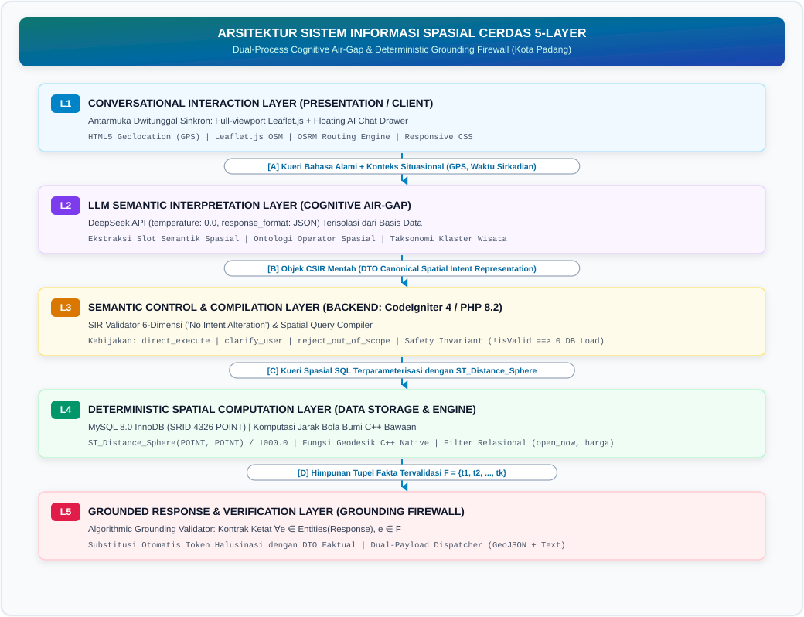
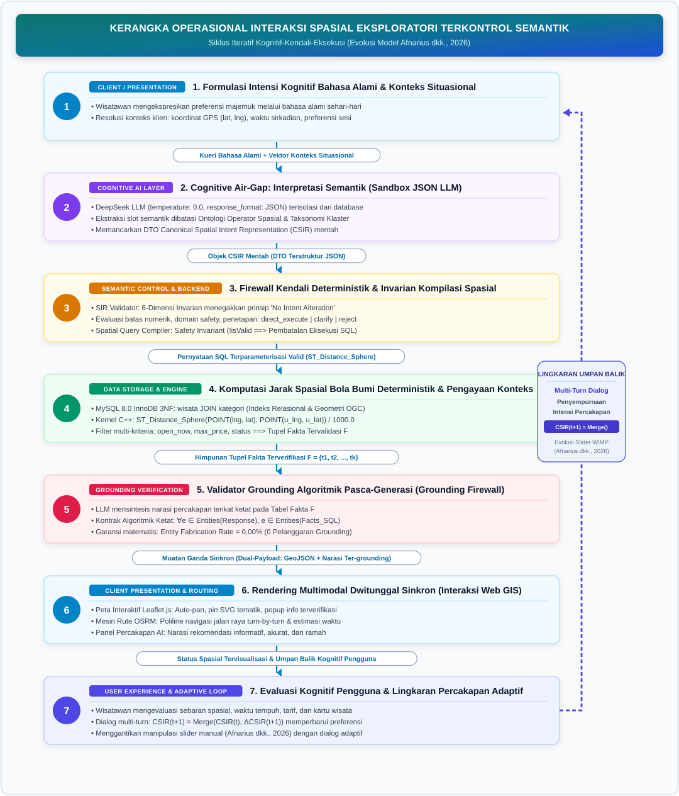
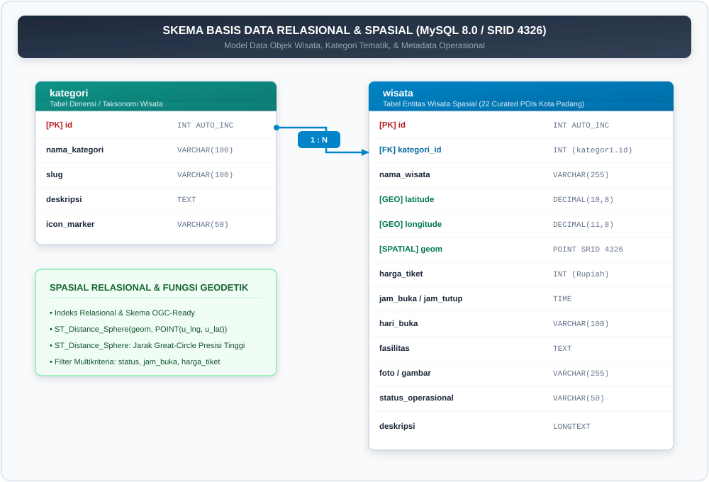
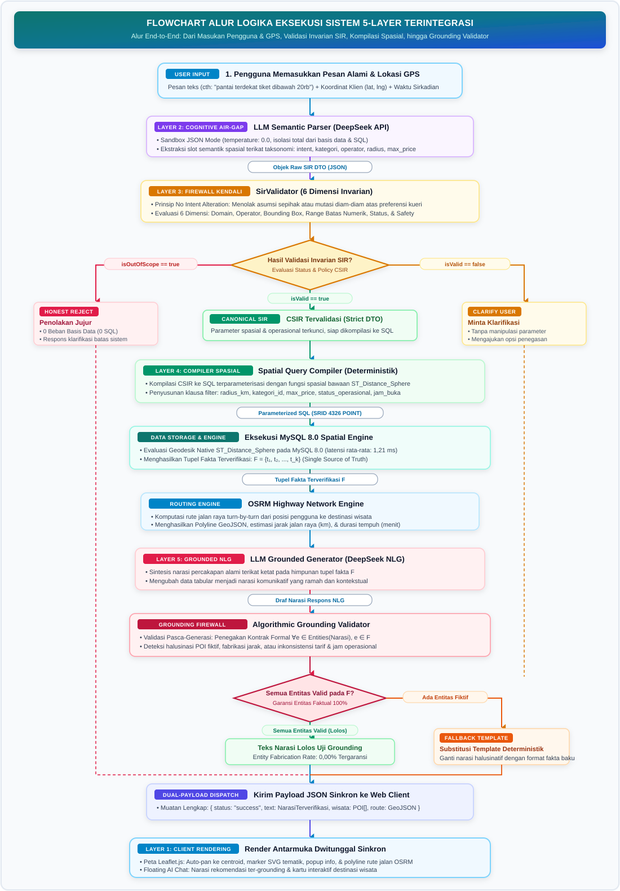
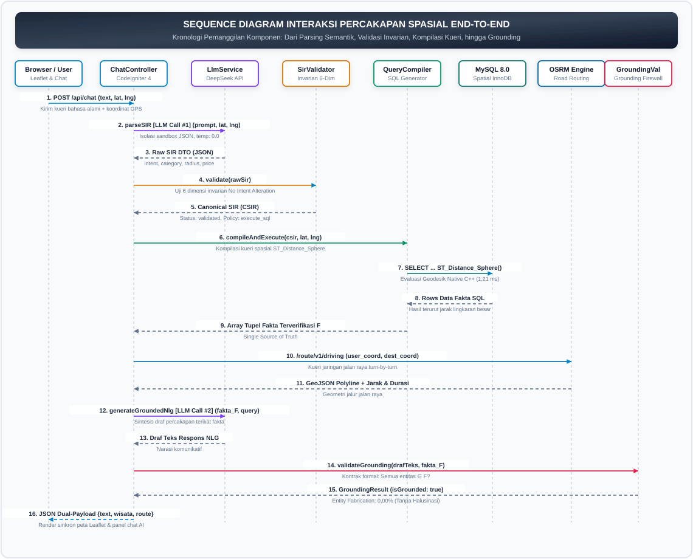

Gambar 3.1 Desain Antarmuka Pengguna Utama Aplikasi Web GIS Pariwisata Kota Padang (Peta Interaktif Leaflet OSM, Drawer Rekomendasi, dan Panel Chat).
(Studi Kasus: Kawasan Pariwisata Kota Padang)
Penerapan Large Language Model (LLM) pada sistem informasi
geospasial dan pariwisata sering kali terbentur oleh fenomena halusinasi
faktual dan spasial (hallucination), di mana model mengarang
nama atraksi fiktif, jam buka yang keliru, serta distorsi estimasi
jarak. Di sisi lain, metode Retrieval-Augmented Generation
(RAG) berbasis vektor tidak dapat mengevaluasi batasan matematis eksak
(seperti kalkulasi jarak spasial lingkaran besar /spherical
distance, harga tiket, dan evaluasi status buka terhadap jam
operasional yang tersimpan). Penelitian ini memosisikan sistem yang
dibangun sebagai Reliability-Controlled Conversational Spatial
Information System (Sistem Informasi Spasial Percakapan
Terkendali Keandalan) untuk Kawasan Pariwisata Kota Padang yang dibangun
di atas paradigma Batas Kendali Ganda (Dual Control
Boundaries): (1) Batas Kendali Semantik
(Semantic Control Boundary) yang menyalurkan inferensi
LLM probabilistik melalui Spatial Intent Representation (SIR)
formal dan modul validasi deterministik 6-dimensi
(SirValidator) berprinsip No Intent Alteration menuju
representasi kanonik (CSIR) dan kompiler deterministik, guna mencegah
masuknya maksud semantik yang tidak sah atau terubah sepihak ke eksekusi
basis data; serta (2) Batas Kendali Bukti (Evidence Control
Boundary) yang mengunci sumber kebenaran fakta pada basis
data relasional MySQL 8.0 melalui fungsi spasial bawaan
ST_Distance_Sphere dan OSRM, lalu memvalidasi luaran narasi
(Grounded NLG) secara algoritmik di tingkat klaim
(claim-level grounding validator) dengan kebijakan
fail-closed fallback, guna menjamin tidak ada klaim tanpa bukti
faktual yang sampai ke pengguna. Evaluasi empiris 4-lapisan terhadap 40
skenario percakapan terstandarisasi yang didukung oleh rangkaian
pengujian otomatis sebanyak 56 skenario uji unit, integrasi, dan
ketahanan adversarial (240 assertions, 100% PASS), menunjukkan
capaian Akurasi Ekstraksi CSIR Eksak Niat Murni sebesar 100,00%
(40/40) dengan keselarasan amplob eksekusi pasca-kebijakan
97,50% (39/40), rata-rata akurasi tingkat atribut
(field-level accuracy) 100,00% (436/436),
Akurasi Keputusan Validasi Deterministik 100,00%
(40/40), Kebenaran Predikat Spasial Murni 100,00%
(36/36 skenario spasial) dengan kepatuhan eksekusi skenario
menyeluruh 100,00% (40/40), Claim-Level Grounding
Fidelity 100,00% pada 270 klaim yang dikenali validator
pada empat kategori pemeriksaan dan Entity Grounding
Fidelity 100,00% pada 120 penyebutan POI dengan 0
entitas fiktif teramati (zero fabricated POIs under evaluated
benchmark scenarios), serta Honest Rejection Rate
100,00% (2/2) pada skenario uji di luar lingkup domain.
Latensi pipeline percakapan cerdas di sisi server rata-rata sebesar
1.252,17 ms (median: 1.232,39 ms, persentil ke-95/P95:
1.581,37 ms; mencakup dua inferensi LLM dan eksekusi kueri spasial SQL
MySQL 8.0 sebesar 1,21 ms), sedangkan latensi perutean jaringan jalan
OSRM diukur secara independen pada sisi klien peramban sebesar
88,40 ms (median: 84,50 ms, P95: 128,60 ms;
menghasilkan total waktu persepsi pengguna rata-rata 1.340,57 ms,
median: 1.316,89 ms, P95: 1.709,97 ms). Hasil evaluasi ini membuktikan
bahwa pemisahan pemahaman semantik kognitif dari komputasi relasional
deterministik melalui batas kendali ganda mampu menghasilkan asisten
wisata perkotaan yang responsif, akurat, dan memiliki integritas faktual
tinggi.
Kata Kunci: Reliability-Controlled Conversational Spatial Information System, Dual Control Boundaries, Semantic Control Boundary, Evidence Control Boundary, Large Language Model (LLM), Strict SQL Grounding, ST_Distance_Sphere, Kota Padang.
The deployment of Large Language Models (LLMs) in urban geospatial
and tourism information systems frequently encounters factual and
spatial hallucinations, wherein the generative model invents
non-existent attractions, incorrect operating hours, and distorted
spatial proximities. Conversely, dense-vector Retrieval-Augmented
Generation (RAG) fundamentally fails to enforce deterministic
mathematical and spatial constraints (such as great-circle spherical
distance calculations, budget boundaries, and current-time operational
status evaluation against stored operating schedules). This research
designs and evaluates a Reliability-Controlled Conversational
Spatial Information System for Padang City governed by an
architectural framework of Dual Control Boundaries: (1)
a Semantic Control Boundary that routes probabilistic
LLM inference through a formal Spatial Intent Representation (SIR) and a
six-dimensional deterministic validator (SirValidator) enforcing the
No Intent Alteration principle into a Canonical SIR (CSIR) and
deterministic compiler, preventing invalid or mutated semantic intent
from reaching spatial execution; and (2) an Evidence Control
Boundary that anchors all factual truth to a relational MySQL
8.0 database via native ST_Distance_Sphere spherical
spatial computations and client-side OSRM road navigation, subsequently
verifying generated narratives through an algorithmic claim-level
grounding validator with a fail-closed fallback policy to prevent
ungrounded claims from reaching the final response. Empirical 4-layer
evaluation across 40 standardized benchmark scenarios demonstrates a
Pure Intent Pre-Fallback Exact CSIR Extraction Accuracy of
100.00% (40/40) (97.50% / 39/40 on
post-policy execution envelope alignment) with an average field-level
accuracy of 100.00% (436/436), a Deterministic
Validation Decision Accuracy of 100.00% (40/40), a Pure
Spatial Predicate Correctness of 100.00% (36/36 spatial
scenarios) with an overall scenario execution compliance rate
of 100.00% (40/40), a Claim-Level Grounding Fidelity of
100.00% across 270 audited claims recognized by
GroundingValidator on four implemented verification categories
and an Entity Grounding Fidelity of 100.00% across 120 POI
mentions with zero fabricated POIs observed across the
evaluated benchmark suite, alongside a 100.00% Honest Rejection
Rate (2/2) on tested out-of-scope queries. The server-side
conversational pipeline latency averaged 1,252.17 ms
(median: 1,232.39 ms, 95th percentile/P95: 1,581.37 ms; incorporating
two LLM inferences and native MySQL 8.0 spatial SQL execution of 1.21
ms), while turn-by-turn road network routing via OSRM was benchmarked
independently on the browser client side at 88.40 ms
(median: 84.50 ms, P95: 128.60 ms; yielding an overall user-perceived
end-to-end latency of 1,340.57 ms, median: 1,316.89 ms, P95: 1,709.97
ms), supported by an automated test suite of 56 automated unit,
integration, and adversarial tests (240 assertions, 100% PASS).
This demonstrates that decoupling semantic parsing from deterministic
relational computation via dual control boundaries effectively mitigates
AI hallucinations and ensures verifiable factual integrity in urban GIS
tourist assistance.
Keywords: Reliability-Controlled Conversational Spatial Information System, Dual Control Boundaries, Semantic Control Boundary, Evidence Control Boundary, Large Language Model (LLM), Strict SQL Grounding, ST_Distance_Sphere Function, Padang City.
Sektor pariwisata merupakan salah satu pilar penggerak ekonomi strategis bagi Kota Padang, ibu kota Provinsi Sumatera Barat. Berada di pesisir barat Pulau Sumatera dengan topografi perbukitan Bukit Barisan yang membentang berdampingan langsung dengan Samudra Hindia, Kota Padang memiliki keragaman atraksi wisata yang sangat unik. Spektrum destinasi mencakup wisata bahari perkotaan (Pantai Padang, Pantai Pasir Jambak), wisata legenda budaya Minangkabau (Pantai Air Manis dengan situs Batu Malin Kundang), gugusan kepulauan tropis eksotis (Pulau Sikuai, Pulau Setan Lokang, Pulau Pisang Gantung), peninggalan sejarah kolonial dan perdagangan maritim (Kawasan Kota Tua Padang, Jembatan Siti Nurbaya, Museum Adityawarman), pesona ekowisata perbukitan dan pemandian alami (Lubuk Hitam, Bukit Nobita, Taman Hutan Raya Bung Hatta), serta kekayaan gastronomi tradisional legendaris Minangkabau yang telah diakui oleh UNESCO.
Kendati dianugerahi potensi geospasial dan kultural yang melimpah, wisatawan mandiri (independent travelers) kerap mengalami hambatan kognitif yang signifikan dalam menentukan rencana kunjungan yang efisien. Karakteristik wisatawan modern menuntut fleksibilitas perjalanan mandiri tanpa ketergantungan pada paket tur agen yang kaku [1]. Wisatawan menginginkan rekomendasi dan saran yang secara cerdas mempertimbangkan posisi geografis mereka saat itu (proximity), ketersediaan waktu operasional saat ini (current-time evaluation against stored operating hours), batas anggaran tiket masuk, serta rute jalan raya yang dapat dilalui secara nyata.
Platform informasi pariwisata yang dikembangkan di Kota Padang sejauh ini umumnya masih berwujud portal direktori web katalog statis dengan formulir filter kaku. Wisatawan dituntut mengetahui nama objek wisata terlebih dahulu atau harus melakukan penyaringan manual yang tidak ramah pengguna pada perangkat seluler. Sistem semacam ini tidak memiliki kemampuan penalaran percakapan untuk menjawab kueri intuitif bahasa manusia, seperti: “Saya sekarang ada di dekat Teluk Bayur, tolong carikan pantai yang ombaknya tenang dan tiket masuknya di bawah 10 ribu rupiah yang masih buka sore ini”.
Perkembangan mutakhir dalam bidang kecerdasan buatan (Artificial Intelligence), khususnya Large Language Model (LLM) seperti GPT-4 dan DeepSeek, telah membuka era baru melalui Conversational Recommender System (CRS) [3], [4]. Pengguna dapat berinteraksi secara bebas menggunakan bahasa alami layaknya berbicara dengan pemandu wisata berpengalaman. Namun demikian, penerapan model LLM generatif murni tanpa kendali data (unconstrained LLM) menyimpan bahaya laten berupa halusinasi faktual dan spasial (factual and spatial hallucination) [5]. Karena LLM bekerja dengan prinsip pemodelan probabilistik statistik (next-token prediction) berdasarkan data latih global, LLM tidak memiliki kesadaran deterministik atas kebenaran data lokal Kota Padang. Akibatnya, LLM generatif murni kerap merekomendasikan objek wisata yang sudah bangkrut, mengarang jam operasional palsu, memberikan estimasi jarak yang tidak masuk akal (misalnya menyebut pulau lepas pantai dapat dicapai dengan berjalan kaki 10 menit), atau merekomendasikan destinasi di kota tetangga (seperti Jam Gadang di Bukittinggi atau Lembah Anai di Tanah Datar) sebagai destinasi di dalam Kota Padang.
Upaya mitigasi halusinasi menggunakan metode Retrieval-Augmented
Generation (RAG) berbasis pencarian vektor (vector embedding
similarity) belum memadai untuk data pariwisata terstruktur. Vektor
kemiripan kosinus (cosine similarity) sangat lemah dalam
mengeksekusi batasan matematis dan spasial deterministik (seperti
harga_tiket <= 10000, evaluasi status operasional jam
buka-tutup saat ini, dan jarak_radius <= 15 km).
Penelitian mutakhir oleh Afnarius dkk. (2026) [2] di
International Journal of Geoinformatics (IJG) melalui sistem
DTExplorer memelopori pendekatan interaksi spasial eksploratori
sadar-skala (scale-aware exploratory spatial interaction) pada
skala mikro pedesaan (Desa Wisata Ulakan) dengan 43 POI terkurasi.
DTExplorer menggunakan arsitektur Three-Tier
(Presentation, Application, Data) dengan kueri statis dan formula
Euclidean planar (ST_Distance * 111.32). Kendati sangat
efektif di pedesaan, DTExplorer masih bertumpu pada kontrol
WIMP konvensional (slider radius dan dropdown menu)
dan mencatat perlunya riset masa depan untuk antarmuka percakapan,
multi-kriteria waktu/biaya, dan evaluasi performa teknis. Di sisi lain,
proyek serumpun seperti Kustomrut mengembangkan pembentukan
rencana perjalanan spasial terkendali pengguna (user-controlled
spatial itinerary) berbasis Google Directions API.
Berangkat dari trajektori penelitian tersebut, riset ini menghadirkan lompatan ilmiah penting melalui evolusi paradigma interaksi dan kendali: \[\text{DTExplorer [Eksplorasi Spasial WIMP]} \longrightarrow \text{Kustomrut [Rute Perjalanan Terkendali Pengguna]} \longrightarrow \text{Conversational Web GIS [Intensi Spasial Alami]} \longrightarrow \text{Reliability-Controlled Dual Boundaries}\]
Keberbaruan ilmiah (scientific novelty) penelitian ini
bukan sekadar menambahkan antarmuka chatbot di atas peta
digital, melainkan pergeseran paradigma interaksi dan
kontrol (interaction and control paradigm shift)
menuju sebuah Reliability-Controlled Conversational Spatial
Information System (Sistem Informasi Spasial Percakapan
Terkendali Keandalan). Sistem ini dikendalikan oleh dua mekanisme batas
kontrol fundamental: 1. Batas Kendali Semantik (Semantic
Control Boundary): \(\text{LLM}
\to \text{SIR} \to \text{6D SirValidator} \to \text{CSIR} \to
\text{Kompiler Kueri Spasial Deterministik}\). Batas ini bertugas
mengisolasi LLM probabilistik, mengekstrak maksud pengguna ke dalam
representasi semantik formal, serta memvalidasi invarian keamanan dan
ontologi spasial dengan prinsip No Intent Alteration agar
maksud semantik yang tidak valid atau terubah sepihak tidak pernah
menyentuh mesin eksekusi basis data. 2. Batas Kendali Bukti
(Evidence Control Boundary): \(\text{Fakta Relasional Basis Data } (F) \to
\text{Grounded NLG Terkontrak} \to \text{Claim-Level Grounding
Validator} \to \text{Fail-Closed Fallback}\). Batas ini mengunci
fakta pada hasil kueri deterministik MySQL 8.0
(ST_Distance_Sphere), menyintesis narasi ramah pengguna di
bawah kontrak grounding ketat, serta memverifikasi kebenaran setiap
klaim secara algoritmik sebelum respons dikirimkan ke pengguna, dengan
mekanisme penolakan aman (fail-closed fallback) apabila
terdeteksi klaim tanpa bukti.
Dalam konteks taksonomi sistem rekomendasi, sistem yang dikembangkan
dalam tesis ini didefinisikan secara presisi sebagai sistem
rekomendasi spasial percakapan berbasis kendala deterministik
(constraint-based conversational spatial recommendation / spatial
query system). Pemeringkatan dan penyeleksian destinasi
dijalankan berdasarkan kriteria faktual eksak: jarak lingkaran besar
sferikal (ST_Distance_Sphere), kesesuaian kategori, batas
anggaran biaya tiket, ketersediaan jam operasional lokal, dan relevansi
kata kunci. Penelitian ini secara sadar belum menerapkan model
pemfilteran kolaboratif (collaborative filtering), representasi
preferensi laten (latent preference learning), maupun
faktorisasi matriks personalisasi. Penegasan batasan ini
menjaga kesinambungan roadmap penelitian jangka panjang menuju
Adaptive Personalized Augmented Recommendation (APAR) tanpa
mengklaim fitur adaptif yang belum diimplementasikan.
Dalam arsitektur ini, diterapkan pemisahan tugas kognitif dan
deterministik secara tegas melalui pendekatan Strict SQL
Grounding. Istilah Strict SQL Grounding dalam
penelitian ini didefinisikan secara presisi sebagai paradigma di mana:
intensi semantik yang diekstrak oleh LLM ditransformasikan
secara deterministik menjadi SQL terparameterisasi oleh kompiler kueri
non-LLM, dan seluruh respons faktual dibatasi secara ketat hanya pada
fakta-fakta relasional basis data yang dihasilkan
(LLM-generated semantic intent is transformed into deterministic
parameterized SQL by a non-LLM query compiler, and factual responses are
grounded in the resulting database facts). Artinya, LLM tidak
pernah diberikan kewenangan memproduksi sintaks SQL secara langsung.
Alih-alih, peran LLM dibatasi secara ketat hanya sebagai pengurai bahasa
alami (Intent Parser) menjadi skema formal Canonical
Spatial Intent Representation (CSIR) dan perangkai narasi
ter-grounding (Grounded NLG), sedangkan seluruh kebenaran fakta
murni bersumber dari basis data relasional MySQL 8.0 dengan fungsi
spasial bawaan ST_Distance_Sphere. Sementara itu, Open
Source Routing Machine (OSRM) diposisikan secara tegas sebagai
layanan pendukung visualisasi (auxiliary presentation
service) untuk menggambar polyline rute jalan raya nyata
pada antarmuka peta Leaflet.js, bukan sebagai mesin evaluasi predikat
spasial inti.
Berdasarkan latar belakang di atas, masalah yang diidentifikasi meliputi: 1. Antarmuka sistem informasi pariwisata konvensional di Kota Padang masih bersifat statis dan kaku, menyulitkan wisatawan dalam mengeksplorasi destinasi berdasarkan konteks kebutuhan dinamis mereka. 2. Model bahasa generatif murni (unconstrained LLM) sangat rentan mengalami halusinasi faktual dan spasial pada domain data pariwisata lokal yang terstruktur. 3. Pendekatan RAG berbasis pencarian vektor teks (vector database) tidak mampu menangani penyaringan matematis eksak (evaluasi status buka saat ini terhadap jam operasional tersimpan, batas tarif tiket, dan kalkulasi jarak spasial berbasis model bola bumi). 4. Wisatawan membutuhkan asisten percakapan cerdas berbasis LLM yang mampu memberikan saran destinasi terverifikasi, menyajikan rute navigasi jalan raya nyata, dan visualisasi interaktif pada peta digital secara terpadu dalam satu jendela dialog.
Ruang lingkup dan batasan dalam penelitian ini adalah: 1. Wilayah
penelitian dibatasi pada batas administratif Kota Padang, Provinsi
Sumatera Barat. 2. Sistem yang dikembangkan merupakan sistem prototipe
empiris (empirical prototype system) yang dievaluasi pada
dataset pariwisata kurasi 22 Points of Interest (POI) unggulan
resmi Kota Padang yang mewakili 6 kategori utama (Pantai, Pulau,
Alam/Air Terjun, Museum/Budaya, Sejarah/Religi, dan Kuliner Khas) dari
Dinas Pariwisata Kota Padang. Penelitian ini tidak mengklaim telah
merepresentasikan seluruh inventaris pariwisata Kota Padang secara
menyeluruh, melainkan berfokus pada pembuktian keandalan arsitektur
kontrol semantik terstruktur dan mitigasi halusinasi spasial-faktual
pada korpus terkontrol. 3. Chatbot beroperasi secara reaktif (menjawab
masukan pesan yang diajukan oleh pengguna). 4. Perhitungan jarak spasial
dan penyaringan kandidat destinasi dieksekusi secara deterministik
menggunakan fungsi spasial bawaan (native spatial function)
ST_Distance_Sphere berbasis model bola bumi
(great-circle / spherical distance) pada tingkat kueri basis
data MySQL 8.0, bukan formula trigonometri manual. 5. Perutean jalan
raya navigasi memanfaatkan layanan pendukung (auxiliary presentation
service) Open Source Routing Machine (OSRM API v5 driving
profile) berbasis data OpenStreetMap (OSM). Layanan ini digunakan secara
eksklusif untuk menghasilkan visualisasi polyline rute jalan raya pada
antarmuka peta Leaflet.js dan estimasi waktu tempuh berkendara, bukan
untuk penyeleksian spasial yang sepenuhnya diselesaikan di MySQL 8.0. 6.
Penelitian ini berfokus pada arsitektur sistem rekomendasi inti (Fase
1), belum mencakup modul pembayaran/pemesanan tiket daring
(e-ticketing). 7. Status operasional tempat wisata dievaluasi
berdasarkan perbandingan waktu server saat ini (zona waktu WIB /
Asia/Jakarta) terhadap data jam operasional yang tersimpan dalam basis
data, bukan melalui umpan data pembaruan langsung (real-time live
sensor feed) dari pengelola lapangan.
ST_Distance_Sphere, OSRM, serta verifikasi claim-level
grounding untuk menjamin seluruh respons faktual didukung penuh
oleh fakta relasional dan bebas dari fabrikasi entitas?ST_Distance_Sphere, memvalidasi luaran narasi secara
algoritmik di tingkat klaim (claim-level grounding validator),
dan memvisualisasikan rute perjalanan jalan raya interaktif pada
Leaflet.js.Naskah tesis ini disusun dalam lima bab dengan sistematika sebagai berikut: - BAB I PENDAHULUAN: Menguraikan latar belakang masalah, identifikasi masalah, batasan masalah, rumusan masalah, tujuan, manfaat penelitian, dan sistematika penulisan. - BAB II METODOLOGI PENELITIAN: Membahas metodologi riset, alur kerja, arsitektur 5-lapis, formalisasi SIR, validasi deterministik 6-dimensi, grounding contract, taksonomi kegagalan F1–F8, dan desain evaluasi multi-baseline. - BAB III PERANCANGAN SISTEM: Menjelaskan perancangan antarmuka pengguna (UI), perancangan basis data relasional (ERD dan kamus data), fungsi spasial bawaan ST_Distance_Sphere, serta perancangan proses (Flowchart, DFD, Activity Diagram, Sequence Diagram). - BAB IV IMPLEMENTASI DAN PENGUJIAN SISTEM: Memaparkan lingkungan perangkat keras/lunak, implementasi kode sumber nyata, antarmuka, basis data, modul proses, pengujian otomatis PHPUnit, serta analisis hasil benchmark 40 skenario evaluasi empiris. - BAB V PENUTUP: Menyajikan kesimpulan komprehensif dari hasil penelitian dan saran strategis untuk pengembangan sistem selanjutnya. - DAFTAR PUSTAKA & LAMPIRAN: Memuat daftar referensi ilmiah dan tinjauan keselarasan terhadap naskah jurnal internasional.
Penelitian ini menggunakan pendekatan rekayasa perangkat lunak terapan yang dipadukan dengan eksperimen komputasi geoinformatika (applied software engineering and computational evaluation). Tahapan penelitian dirancang secara sistematis melalui 5 fase utama:
Guna mewujudkan Reliability-Controlled Conversational Spatial Information System yang kebal terhadap halusinasi faktual dan manipulasi data, sistem ini dirancang bukan sekadar sebagai pipa pemrosesan sekuensial, melainkan beroperasi di bawah fondasi teoritis Batas Kendali Ganda (Dual Control Boundaries Framework):
PROBABILISTIC LLM (Layer 2)
│
▼
┌─────────────────────────────┐
│ SEMANTIC CONTROL BOUNDARY │
│ • Raw SIR Extraction │
│ • 6D SIR Validator │
│ • No Intent Alteration │
│ • Canonical SIR (CSIR) │
│ • Deterministic Compiler │
└──────────────┬──────────────┘
│ Parameterized SQL
▼
DETERMINISTIC SPATIAL EXEC
(MySQL 8.0 ST_Distance_Sphere)
│
▼
DATABASE FACTS (F)
│
▼
┌─────────────────────────────┐
│ EVIDENCE CONTROL BOUNDARY │
│ • Strict Grounded NLG │
│ • Claim-Level Validator │
│ • Fail-Closed Fallback │
└──────────────┬──────────────┘
│ Grounded Response
▼
FINAL VERIFIED RESPONSE
(Leaflet.js + OSRM Route)Dua mekanisme batas kendali utama tersebut didefinisikan secara presisi sebagai berikut:
Batas Kendali Semantik (Semantic Control Boundary): \[\text{LLM} \longrightarrow \mathcal{S}_{\text{raw}} \xrightarrow[\text{No Intent Alteration}]{\text{SirValidator}_{\text{6-D}}} \mathcal{S}_{\text{csir}} \xrightarrow{\text{Compiler}} \text{SQL}_{\text{parameterized}}\] Batas ini bertugas mengisolasi model bahasa probabilistik dari eksekusi basis data. Maksud pengguna diekstrak menjadi Spatial Intent Representation (SIR). Modul SirValidator 6-dimensi menegakkan prinsip No Intent Alteration, memeriksa konsistensi skema, tipe, domain, operator, entitas, dan batasan numerik. Hanya representasi yang memenuhi seluruh invarian yang disahkan sebagai Canonical Spatial Intent Representation (CSIR) dan dikompilasi menjadi kueri SQL terparameterisasi. Batas ini menjamin bahwa maksud semantik yang tidak valid, bertentangan dengan kebijakan, atau termutasi secara sepihak (silent alteration) tidak akan pernah mencapai tahap eksekusi basis data.
Batas Kendali Bukti (Evidence Control
Boundary): \[F \longrightarrow
\text{Grounded NLG} \xrightarrow[\text{Fail-Closed}]{\text{Claim-Level
Validator}} \text{Respons Terverifikasi}\] Batas ini
mengendalikan tahap sintesis respons akhir pengguna. Fakta relasional
\(F\) hasil eksekusi deterministik
MySQL 8.0 (ST_Distance_Sphere) diinjeksikan ke modul
Grounded NLG di bawah kontrak grounding ketat (Strict
Grounding Contract). Selanjutnya, teks narasi yang dihasilkan
diverifikasi secara algoritmik di tingkat klaim (Claim-Level
Grounding Validator) lintas 4 sub-dimensi (\(\mathcal{C}_{\text{entity}},
\mathcal{C}_{\text{price}}, \mathcal{C}_{\text{spatial}},
\mathcal{C}_{\text{temporal}}\)). Jika terdeteksi klaim tanpa
bukti atau entitas di luar \(F\),
sistem mengaktifkan kebijakan fail-closed fallback
deterministik untuk memastikan tidak ada klaim tanpa dukungan basis data
yang sampai ke pengguna.
Secara teknis rekayasa perangkat lunak, kerangka batas kendali ganda ini direalisasikan ke dalam Arsitektur Pipa 5-Lapis (5-Layer Pipeline Architecture) yang memisahkan tugas kognitif dari eksekusi basis data secara tegas (Separation of Concerns):
is_out_of_scope = true untuk
memicu honest rejection.ST_Distance_Sphere. Menghubungi API pendukung OSRM untuk
menghasilkan polyline rute jalan raya dan estimasi waktu tempuh
berkendara.
Gambar 2.1 Diagram Alur Arsitektur 5-Lapis Sistem Rekomendasi Pariwisata Berbasis Strict Grounding dan Batas Kendali Ganda.
Guna memahami kebaruan struktural rancang bangun yang diusulkan, arsitektur 5-lapis ini merupakan evolusi dan lompatan ilmiah dari arsitektur Three-Tier Web GIS yang dirintis oleh Afnarius dkk. (2026) [2] pada sistem DTExplorer:
ST_Distance_Sphere(POINT, POINT) / 1000.0
berbasis model bola bumi (great-circle / spherical distance)
pada koordinat geografis WGS84, menghasilkan komputasi jarak lingkaran
besar yang presisi dan stabil terhadap galat titik kambang
(floating-point errors).Untuk menguji ketahanan sistem secara ilmiah dan metodologis,
kebenaran operasional dibagi menjadi tiga tingkat verifikasi berurutan:
1. Kebenaran Semantik (Semantic Correctness / \(\mathcal{C}_{\text{semantik}}\)):
Memverifikasi bahwa LLM secara setia menerjemahkan ujaran pengguna ke
dalam skema terstruktur \(CSIR\) tanpa
kehilangan batasan penting: \[\mathcal{C}_{\text{semantik}}: NL \longrightarrow
CSIR\] 2. Kebenaran Eksekusi Spasial (Spatial
Execution Correctness / \(\mathcal{C}_{\text{spasial}}\)):
Memverifikasi bahwa \(CSIR\)
tervalidasi dikompilasi secara deterministik menjadi SQL berparameter
dengan fungsi spasial bawaan ST_Distance_Sphere: \[\mathcal{C}_{\text{spasial}}: CSIR
\longrightarrow \text{SQL} \longrightarrow \text{Himpunan Fakta Spasial
} (F)\] 3. Kebenaran Grounding (Grounding
Correctness / \(\mathcal{C}_{\text{grounding}}\)):
Memverifikasi bahwa respons narasi yang disintesis dibatasi secara
deterministik hanya pada fakta \(F\)
yang dikembalikan basis data: \[\mathcal{C}_{\text{grounding}}: F \longrightarrow
\text{Respons Naratif Ter-grounding}\]
Rangkaian ini membentuk pipa sekuensial yang teruji: \[\boxed{NL \xrightarrow[\text{Semantik}]{\text{Kognitif}} CSIR \xrightarrow[\text{Deterministik}]{\text{Kompilasi}} \text{SQL} \xrightarrow[\text{Spherical}]{\text{Spatial DBMS}} \text{Hasil Spasial } (F) \xrightarrow[\text{Grounding}]{\text{Algorithmic Firewall}} \text{Respons Bernarasi}}\]
Guna memodelkan interaksi antara formulasi intensi pengguna, parameterisasi skala spasial, penyaringan atribut multi-kriteria, dan visualisasi pemetaan, Gambar 2.2 menggambarkan Kerangka Operasional Interaksi Spasial Eksploratori Terkontrol Semantik (The Iterative Cognitive-Control-Execution Loop), yang mentransformasikan kerangka kerja operasional DTExplorer (Afnarius dkk., 2026, Gambar 8) [2].

Gambar 2.2 Kerangka Operasional Interaksi Spasial Eksploratori Terkontrol Semantik (Siklus Iteratif Kognitif-Kendali-Eksekusi).
Perbedaan mendasar model operasional ini terhadap DTExplorer (Gambar
8 Afnarius dkk., 2026) mencakup: 1. Peniadaan Friksi Antarmuka
WIMP: Wisatawan tidak perlu menggeser slider radius
dan mencentang checkbox kategori secara mekanis. Skala spasial
(\(d\)), titik acuan (\(R_t\)), dan operator spasial (\(O_s\)) diekstraksi secara otomatis dari
percakapan alami. 2. Mediasi Kendali Deterministik
Bersekat: Parameterisasi skala tidak disalurkan langsung ke
kueri SQL, melainkan melewati lapisan penyaring SIR Validator
dan invarian keamanan Spatial Query Compiler, melindungi basis
data dari beban kueri ilegal atau injeksi tak terduga. 3.
Penyempurnaan Dialog Iteratif (Iterative Conversational
Refinement): Alih-alih mengklaim sistem adaptif penuh,
siklus eksplorasi spasial didukung melalui penyempurnaan percakapan
multi-putaran (multi-turn interactive refinement) dengan
penerusan memori riwayat sesi (session_token dan histori
pesan). Alur operasional ini dimodelkan sebagai berikut: - Giliran 1
(Inisiasi Spasial): Pengguna: “Cari pantai yang dekat dari
lokasi saya” \(\to\) Sistem:
Menghasilkan rekomendasi pantai terdekat dalam radius GPS. - Giliran
2 (Penyempurnaan Kriteria): Pengguna: “Yang harga tiket
masuknya di bawah 15 ribu” \(\to\)
Sistem: Mengekstrak batasan biaya max_price <= 15000
sambil mempertahankan koordinat acuan dan kategori pantai dari konteks
sesi sebelumnya untuk memfilter basis data secara deterministik. Perlu
ditegaskan secara metodologis bahwa contoh interaksi dua giliran ini
merepresentasikan model konseptual operasional dan simulasi
transisi status deterministik berbasis riwayat sesi
(sebagaimana dibuktikan pada unit test
testMultiTurnSemanticStateMerging dan skenario benchmark
#36). Pada implementasi operasional saat ini, sistem mengelola
persistensi sesi untuk mempertahankan konteks dialog dan rujukan entitas
(seperti menanyakan nomor urut destinasi sebelumnya), sedangkan
penggabungan slot semantik otomatis penuh (automated multi-turn
semantic slot merging) berbasis inferensi LLM dinamis diposisikan
secara transparan sebagai agenda pengembangan masa depan (future
work, Sub-bab 2.3.2). Penegasan ini menjaga kesinambungan roadmap
penelitian menuju sistem Adaptive Personalized Augmented
Recommendation (APAR) tanpa membuat klaim adaptasi preferensi
otonom yang melampaui data uji.
Gambar 2.3 menyajikan model konseptual basis data spasial relasional yang diusulkan.

Gambar 2.3 Model Konseptual Basis Data Spasial Relasional Ternormalisasi 3NF.
Berbeda dari arsitektur DTExplorer (Gambar 6 Afnarius dkk.,
2026) yang membagi data ke dalam 6 tabel fisik identik berdasarkan
kategori, rancangan 3NF ini mengonsolidasikan POI ke dalam entitas
tunggal wisata dengan indeks komposit teroptimasi
(INDEX(lat, lng)), mendukung penyaringan multi-kriteria
(temporal, finansial, operasional) dalam satu lintasan kueri, serta
menyediakan entitas relasional audit (chat_sessions dan
chat_messages) untuk transparansi AI.
Guna memastikan konsistensi terminologis dan ketepatan pemodelan, penelitian ini menyatukan konsep Spatial Intent Representation (SIR) dan Canonical Spatial Intent Representation (CSIR) ke dalam satu kerangka siklus hidup representasi maksud (Intent Transformation Lifecycle):
Siklus hidup transformasi dinyatakan secara formal sebagai: \[\mathcal{S}_{\text{raw}} = \text{LLM}(\text{Prompt}_{\text{SIR}}, \text{Query}_{\text{user}}) \xrightarrow[\text{Context Anchoring}]{\text{Geospatial Resolver}} \mathcal{S}_{\text{csir}} \xrightarrow[\text{No Intent Alteration}]{\text{SirValidator}_{\text{6-D}}} \mathcal{S}_{\text{csir, valid}} \xrightarrow{\text{Compiler}} \text{SQL}\]
Secara matematis, CSIR dimodelkan sebagai tupel formal perantara semantik (typed intermediate representation) kanonikal yang memiliki tepat 19 atribut:
\[\text{CSIR} = \langle I, E, C, T_n, K, O_s, R_t, R_e, \text{lat}, \text{lng}, r, u_d, A, F, P_{\max}, O_{\text{now}}, O_{24}, S, B_{\text{out}} \rangle\]
Agar berfungsi sebagai compiler IR yang kokoh, CSIR dipartisi ke dalam 4 sub-dimensi ortogonal: (1) Intensi & Entitas (\(\mathcal{P}_{\text{intent}}\), 5 atribut), (2) Kendala Spasial (\(\mathcal{P}_{\text{spatial}}\), 8 atribut), (3) Kendala Operasional (\(\mathcal{P}_{\text{operational}}\), 5 atribut), dan (4) Kontrol Invarian Lingkup (\(\mathcal{P}_{\text{control}}\), 1 atribut). Skema formal 19 atribut disajikan pada Tabel 2.1.
Tabel 2.1 Skema Formal 19 Atribut Canonical Spatial Intent Representation (CSIR)
| Simbol | Atribut CSIR | Sub-Dimensi | Tipe Data | Status | Nilai yang Diizinkan | Aturan Batasan (Constraint) | Pemetaan Kompiler SQL (MySQL 8.0) |
|---|---|---|---|---|---|---|---|
| \(I\) | intent |
Intensi | Enum | Wajib | spatial_recommendation, entity_lookup,
general_inquiry |
Dibatasi domain pariwisata | Pemilihan template kueri basis data |
| \(E\) | entity |
Intensi | String | Wajib | tourism_object |
Target objek semantik | Entitas relasi wisata |
| \(C\) | category |
Intensi | Enum/Null | Opsional | Pantai, Pulau, Alam,
Museum, Sejarah, Kuliner,
null |
Terdaftar pada ontologi kategori | Klausul WHERE kategori.nama = ? |
| \(T_n\) | target_name |
Intensi | String/Null | Opsional | Teks nama destinasi spesifik | Sanitasi tag HTML/karakter kontrol | Klausul WHERE (wisata.nama LIKE ? OR ...) |
| \(K\) | keyword |
Intensi | String/Null | Opsional | Kata kunci fasilitas/daya tarik | Sanitasi tag HTML/karakter kontrol | Klausul WHERE (wisata.deskripsi LIKE ? OR ...) |
| \(O_s\) | spatial_operator |
Spasial | Enum | Wajib | nearest, within_radius,
within_admin_area, none |
Terdaftar pada ontologi operator | Klausul spasial WHERE / ORDER BY |
| \(R_t\) | reference_type |
Spasial | Enum | Kondisional | gps, city_center, poi,
unknown |
Wajib jika \(O_s \ne \text{none}\) | Penentu tipe titik acuan parameter spasial |
| \(R_e\) | reference_entity |
Spasial | String/Null | Kondisional | Nama entitas POI rujukan eksplisit | Wajib jika \(R_t = \text{poi}\) (contoh: “Pantai Air Manis”) | Resolusi koordinat acuan via Geocoding Lookup |
| \(\text{lat}\) | latitude |
Spasial | Float/Null | Kondisional | \(-90.0 \le \text{lat} \le 90.0\) | Disuntikkan via Geolocation API browser / resolver titik acuan | Titik acuan spasial POINT(lng, lat) |
| \(\text{lng}\) | longitude |
Spasial | Float/Null | Kondisional | \(-180.0 \le \text{lng} \le 180.0\) | Disuntikkan via Geolocation API browser / resolver titik acuan | Titik acuan spasial POINT(lng, lat) |
| \(r\) | radius |
Spasial | Float/Null | Kondisional | Bilangan riil \(> 0.0\) (contoh: 5.0, 10.0, 20.0) | \(r > 0\) dan \(r \le 50.0\text{ km}\) (No Intent Alteration: penolakan tanpa pemotongan sepihak jika melebihi batas operasional) | WHERE (ST_Distance_Sphere(...) / 1000.0) <= ? |
| \(u_d\) | distance_unit |
Spasial | Enum | Kondisional | km, m |
Normalisasi ke kilometer | Faktor skala pembagi (/ 1000.0) |
| \(A\) | admin_area |
Spasial | String/Null | Kondisional | Nama kecamatan di Kota Padang | Wajib jika \(O_s = \text{within\_admin\_area}\) | Klausul WHERE wisata.alamat LIKE ? |
| \(F\) | is_free |
Operasional | Boolean | Opsional | true, false |
Default false |
Klausul WHERE wisata.harga_tiket = 0 |
| \(P_{\max}\) | max_price |
Operasional | Integer/Null | Opsional | Bilangan bulat \(\ge 0\) | \(P_{\max} \ge 0\), konsisten dengan \(F\) | Klausul WHERE wisata.harga_tiket <= ? |
| \(O_{\text{now}}\) | open_now |
Operasional | Boolean | Opsional | true, false |
Default false |
Predikat temporal jam operasional sirkular |
| \(O_{24}\) | open_24h |
Operasional | Boolean | Opsional | true, false |
Default false |
Klausul WHERE jam_buka = '00:00:00' AND ... |
| \(S\) | sort |
Operasional | Enum/Null | Opsional | termurah, termahal, terdekat,
terbaik, null |
Normalisasi kata pengurutan | Klausul ORDER BY field terparameter |
| \(B_{\text{out}}\) | is_out_of_scope |
Kontrol | Boolean | Sistem | true, false |
Ditetapkan oleh LLM parser & SirValidator | Kebijakan reject_out_of_scope (Tanpa SQL) |
Asal-Usul (Provenance) dan Pemisahan Tanggung Jawab
Pembentukan Atribut CSIR: Untuk menjamin prinsip pemisahan
tanggung jawab (separation of responsibilities) yang ketat dan
mengeliminasi halusinasi koordinat spasial, arsitektur membedakan secara
eksplisit asal-usul sumber data pembentuk skema kanonik 19 atribut CSIR:
1. Fase Ekstraksi Semantik LLM (Lapisan 2 - 17 Slot Semantik
Murni): LLM hanya bertindak sebagai penerjemah bahasa kognitif
untuk memetakan ujaran bebas pengguna ke dalam 17 parameter teks
semantik: maksud (\(I\)), entitas
(\(E\)), kategori (\(C\)), nama target (\(T_n\)), kata kunci (\(K\)), operator spasial (\(O_s\)), tipe rujukan (\(R_t\)), entitas rujukan (\(R_e\)), radius (\(r\)), satuan jarak (\(u_d\)), kecamatan (\(A\)), preferensi gratis (\(F\)), batas harga (\(P_{\max}\)), filter buka sekarang (\(O_{\text{now}}\)), filter 24 jam (\(O_{24}\)), pengurutan (\(S\)), dan penanda luar lingkup awal (\(B_{\text{out}}\)). Model bahasa
DILARANG KERAS MENGARANG ATAU MENYIMPULKAN ANGKA KOORDINAT
LATITUDE/LONGITUDE, guna menjamin ketiadaan halusinasi numerik
geodetik dari model probabilistik. 2. Fase Pengikatan Konteks
Geospasial Klien (Jangkar Koordinat Deterministik - 2 Field):
Nilai numerik latitude dan longitude
disuntikkan ke dalam objek CSIR secara deterministik dari sumber
terverifikasi: - Jika \(R_t =
\text{'gps'}\), koordinat diambil langsung dari
Browser Geolocation API (standar W3C
navigator.geolocation) pada perangkat pengguna. - Jika
\(R_t = \text{'city_center'}\),
resolver menyuntikkan koordinat baku pusat Kota Padang (\(-0.9471, 100.4174\)). - Jika \(R_t = \text{'poi'}\), resolver
melakukan geocoding lookup koordinat resmi objek \(R_e\) yang tersimpan pada tabel
wisata basis data relasional. 3. Fase Validasi
Deterministik & Kontrol Invarian (Lapisan 3 -
SirValidator): Menguji seluruh 19 atribut terhadap 6 dimensi
invarian keselamatan arsitektur dan melampirkan metadata kontrol
eksekusi (isValid, validation_errors,
execution_policy, out_of_scope_reason,
fallback_applied, fallback_notice).
Pemisahan dua fase ini menjamin bahwa seluruh 19 atribut CSIR yang dievaluasi pada Lapisan A memiliki keterlacakan asal-usul (provenance) yang transparan dan dapat direproduksi secara matematis, sekaligus menjamin alur komputasi yang terisolasi antara ekstraksi semantik kognitif dan eksekusi kueri relasional.
Ontologi operator spasial (\(O_s\)) membatasi relasi geometris ke dalam spesifikasi kontrak formal yang disajikan pada Tabel 2.2.
Tabel 2.2 Spesifikasi Formal Ontologi Operator Spasial Sistem Rekomendasi Pariwisata
| Operator Spasial (\(O_s\)) | Makna Semantik (Meaning) | Parameter Masukan Wajib | Semantik Geospasial | Pemetaan Predikat SQL MySQL 8.0 | Status Ontologi |
|---|---|---|---|---|---|
nearest |
Objek wisata terdekat dari titik acuan | reference_type, lat, lng |
Pengurutan jarak lingkaran besar (spherical distance) terkecil | ORDER BY ST_Distance_Sphere(POINT(wisata.lng, wisata.lat), POINT(?, ?)) ASC |
Resmi (Allowed) |
within_radius |
Objek wisata dalam radius lingkaran | lat, lng, distance (\(d > 0\)) |
Filter kedekatan radius (\(d \le r\)) | AND (ST_Distance_Sphere(POINT(wisata.lng, wisata.lat), POINT(?, ?)) / 1000.0) <= ? |
Resmi (Allowed) |
within_admin_area |
Objek wisata di dalam batas wilayah kecamatan | admin_area |
Batas administratif wilayah lokal | AND wisata.alamat LIKE ? |
Resmi (Allowed) |
none |
Tanpa batasan spasial eksplisit | - | Penyaringan atribut murni | Tanpa predikat jarak/wilayah | Resmi (Allowed) |
open_now |
Wisata sedang beroperasi saat kueri diajukan | Waktu lokal server (\(t\)) | Evaluasi jam operasional (sirkular) | AND ((wisata.jam_buka <= wisata.jam_tutup AND ? BETWEEN wisata.jam_buka AND wisata.jam_tutup) OR (wisata.jam_buka > wisata.jam_tutup AND (? >= wisata.jam_buka OR ? <= wisata.jam_tutup))) |
Resmi (Allowed) |
open_24h |
Wisata beroperasi 24 jam non-stop | - | Jam buka penuh | AND (wisata.jam_buka = '00:00:00' AND wisata.jam_tutup >= '23:59:00') |
Resmi (Allowed) |
is_free |
Wisata dengan tiket masuk gratis | - | Bebas biaya masuk | AND wisata.harga_tiket = 0 |
Resmi (Allowed) |
max_price |
Wisata dengan tarif di bawah anggaran | max_price (\(\ge
0\)) |
Pembatasan biaya | AND wisata.harga_tiket <= ? |
Resmi (Allowed) |
Operator Tak Dikenal (misal: around_me,
teleport) |
Permintaan spasial tak terdefinisi | - | Anomali semantik | DITOLAK (isValid = false, batalkan
eksekusi SQL, picu clarification) |
Terlarang (Forbidden) |
Prinsip pemisahan wewenang komputasi ditegaskan melalui aksioma arsitektural utama: \[\boxed{\text{\textbf{LLM never generates SQL. LLM only extracts semantic operator; Compiler compiles deterministic SQL.}}}\]
Untuk memvalidasi batasan operasional jam buka
(open_now) secara saintifik dan menjamin keterulangan
(reproducibility), sistem menerapkan evaluasi temporal sirkular
deterministik berbasis waktu server lokal (Asia/Jakarta,
WIB / UTC+7). Waktu server saat kueri dieksekusi dinyatakan sebagai
\(t =
\text{date}('H:i:s')\).
Model evaluasi jam buka formal \(\text{IsOpen}(t, \text{jam\_buka}, \text{jam\_tutup})\) didefinisikan sebagai fungsi piecewise sirkular: \[\text{IsOpen}(t) = \begin{cases} (t \ge \text{jam\_buka} \land t \le \text{jam\_tutup}), & \text{jika } \text{jam\_buka} \le \text{jam\_tutup} \text{ (Operasi Reguler Intra-Hari)} \\ (t \ge \text{jam\_buka} \lor t \le \text{jam\_tutup}), & \text{jika } \text{jam\_buka} > \text{jam\_tutup} \text{ (Operasi Lintas Tengah Malam / Overnight)} \end{cases}\]
Contoh Kasus Operasi Lintas Tengah Malam (Overnight
Crossover): Pada objek wisata kuliner malam atau kawasan
jembatan dengan jam operasional 22:00:00 hingga
02:00:00 dini hari berikutnya (\(\text{jam\_buka} = \text{22:00} >
\text{jam\_tutup} = \text{02:00}\)): - Apabila wisatawan
mengakses sistem pada pukul 01:00 WIB (\(t = \text{01:00}\)), predikat mengevaluasi:
\[(t \ge \text{22:00} \lor t \le
\text{02:00}) \implies (\text{FALSE} \lor \text{TRUE}) \implies
\textbf{TRUE (Status Buka)}\] - Sebaliknya, apabila diakses pada
pukul 15:00 WIB (\(t =
\text{15:00}\)): \[(\text{15:00} \ge
\text{22:00} \lor \text{15:00} \le \text{02:00}) \implies (\text{FALSE}
\lor \text{FALSE}) \implies \textbf{FALSE (Status Tutup)}\]
Formulasi ini menunjukkan bahwa capaian 100,00% Temporal Fidelity pada suite benchmark 40 skenario didasarkan pada evaluasi predikat SQL sirkular eksak di tingkat basis data, bukan estimasi probabilistik LLM.
Untuk memfasilitasi kebutuhan wisatawan yang mengeksplorasi pilihan destinasi secara bertahap dalam beberapa giliran percakapan (multi-turn dialog), arsitektur sistem menyediakan persistensi riwayat sesi (session token & conversation history persistence). Secara konseptual, transisi status preferensi dimodelkan sebagai: \[CSIR_{t+1} = \text{Merge}(CSIR_t, \Delta CSIR_{t+1})\]
Di mana \(CSIR_t\) merepresentasikan akumulasi konteks sebelumnya, dan \(\Delta CSIR_{t+1}\) adalah vektor batasan baru yang diekstrak dari ujaran terkini. Pada implementasi sistem saat ini, persistensi riwayat percakapan dikelola pada tingkat basis data sesi dan memori konteks untuk rujukan entitas (seperti entity lookup berbasis nomor urut destinasi sebelumnya), sedangkan penggabungan slot otomatis penuh (automated multi-turn semantic slot merging) diuji secara eksperimental dan diposisikan sebagai agenda pengembangan masa depan (future work).
Korpus data acuan kebenaran (ground truth) dikurasi langsung dari basis data resmi Dinas Pariwisata Kota Padang: - Cakupan Wilayah: 22 objek wisata unggulan di 11 kecamatan Kota Padang lintas 6 kategori tematik (Pantai, Pulau, Alam, Museum, Sejarah, Kuliner). - Verifikasi Koordinat Geografis: Diukur menggunakan dual GPS receiver dengan datum spasial WGS84 (EPSG:4326) dan disinkronkan dengan topologi jalan OpenStreetMap. - Integritas Atribut: Status jam buka-tutup, status 24 jam, dan tarif tiket resmi diverifikasi secara faktual melalui survei lapangan tahun 2026.
Ketika pengguna menyebutkan nama objek wisata dalam ragam bahasa informal, singkatan, maupun variasi dialek lokal (contoh: “Pantai Aie Manih”, “Adityawarman”, “Siti Nurbaya”), penentuan identitas kanonikal destinasi TIDAK DIBEBANKAN KEPADA LLM. LLM dilarang keras mengaitkan teks sebutan secara langsung ke ID basis data atau mengarang koordinat acuan. Resolusi dilakukan secara deterministik melalui pipa algoritma lima tahap:
target_name atau
reference_entity sebagai nilai string mentah.wisata melalui pencocokan token (token
overlap), kerangka konsonan (consonant skeleton matching),
dan pencocokan sebagian (substring matching) guna mereduksi
ruang pencarian.executionPolicy = 'clarify_user'), meminta pengguna
mengonfirmasi pilihan destinasi yang dimaksud secara eksplisit.Dalam penelitian tesis ini, peran prompt dirancang bukan sebagai penentu jawaban akhir atau penalaran bebas, melainkan sebagai kontrak pembatas struktural deklaratif (declarative structural boundary contract) yang membatasi wewenang model bahasa besar (Large Language Model). Pendekatan ini menjawab secara fundamental pertanyaan kritis dewan penguji/reviewer:
“Bagaimana peneliti memastikan bahwa LLM menghasilkan representasi spatial intent yang terstruktur dan tidak langsung menghasilkan jawaban/fakta yang tidak ter-grounding?”
Untuk memberikan jaminan integritas data dan ketiadaan fabrikasi entitas (Grounded Factual Guarantee), sistem menerapkan 4 pilar kendali terintegrasi:
temperature = 0.0 guna mengeliminasi entropi stokastik
probabilitas token. Parameter
response_format = {"type": "json_object"} diaktifkan pada
tingkat API sehingga LLM secara ketat dipaksa hanya memancarkan objek
JSON valid yang selaras dengan skema DTO
SpatialIntent.SpatialIntent, lalu diserahkan ke modul
validasi deterministik independen (SirValidator).Listing 2.1 menyajikan instruksi sistem kompak yang diterapkan pada Layer 2 untuk membatasi inferensi LLM:
LISTING 2.1. Prompt Inti Penentu Structured Output SIR (Compact Listing)
--------------------------------------------------------------------------------
You are a spatial intent parser for a tourism Web GIS in Padang City, Indonesia.
Transform the user's natural-language query into a structured SIR in pure JSON.
RULES:
1. Return JSON ONLY. No markdown, no explanation, no other text.
2. Do not generate SQL.
3. Do not answer the user's question or provide recommendations.
4. Allowed Categories: "Pantai" | "Pulau" | "Alam" | "Museum" | "Sejarah" | "Kuliner" | null
5. Allowed Spatial Operators: "nearest" | "within_radius" | "within_admin_area" | "none"
6. Preserve spatial constraints exactly. If radius is omitted, return null; never infer a default.
7. Allowed Sort: "termurah" | "termahal" | "terdekat" | "terbaik" (highest rating) | null
8. If user requests impossible things for Padang (e.g. ski, snow, casino), set is_out_of_scope: true.
9. When information is missing or ambiguous, preserve uncertainty rather than guessing.
SCHEMA:
{
"intent": "spatial_recommendation" | "entity_lookup" | "general_inquiry",
"entity": "tourism_object",
"category": "Pantai" | "Pulau" | "Alam" | "Museum" | "Sejarah" | "Kuliner" | null,
"target_name": string or null,
"keyword": string or null,
"spatial_operator": "nearest" | "within_radius" | "within_admin_area" | "none",
"reference_type": "gps" | "city_center" | "poi" | "unknown",
"radius": float or null,
"distance_unit": "km",
"admin_area": string or null,
"is_free": boolean,
"max_price": integer or null,
"open_now": boolean,
"open_24h": boolean,
"sort": "termurah" | "termahal" | "terdekat" | "terbaik" | null,
"is_out_of_scope": boolean
}
--------------------------------------------------------------------------------(Catatan: Spesifikasi instruksi sistem lengkap 5-lapisan dicantumkan pada Lampiran A).
Arsitektur yang diusulkan secara sadar dan eksplisit membagi pemrosesan AI ke dalam dua pemanggilan LLM terpisah (two distinct LLM inference calls) yang diselingi oleh inti komputasi deterministik:
\[\text{User NL} \xrightarrow{\textbf{LLM \#1 (Intent Parsing)}} \text{Raw SIR} \xrightarrow[\text{Algoritmik}]{\text{SirValidator}} \text{SQL} \xrightarrow[\text{Deterministik}]{\text{MySQL 8.0}} \text{Facts } F_{SQL} \xrightarrow{\textbf{LLM \#2 (Grounded NLG)}} \text{Draft NLG} \xrightarrow[\text{Algoritmik}]{\text{GroundingValidator}} \text{Final Output}\]
Pemisahan dua titik panggilan LLM ini merupakan fondasi utama mengapa
arsitektur mampu mencapai grounding deterministik: 1.
Panggilan LLM #1 (Natural Language \(\to\) Raw SIR \(\to\) CSIR): LLM hanya bertindak
sebagai penerjemah bahasa kognitif murni untuk memetakan ujaran bebas
pengguna ke dalam format semantik terstruktur (Raw SIR 17-slot semantik
murni). Model dilarang mengarang koordinat GPS; nilai koordinat
latitude dan longitude disuntikkan secara
deterministik dari peramban/resolver sehingga membentuk CSIR 19-atribut
utuh. Pada tahap ini, LLM dilarang keras menghasilkan sintaks SQL,
dilarang mengakses basis data, dan dilarang memberikan jawaban
rekomendasi langsung. 2. Inti Eksekusi Deterministik
Non-LLM: Objek SIR divalidasi oleh SirValidator (6
dimensi), dikompilasi secara deterministik oleh
SpatialQueryCompiler menjadi SQL terparameterisasi dengan
formula bawaan ST_Distance_Sphere, dan dieksekusi pada
MySQL 8.0 geo_db serta mesin perutean jalan raya OSRM.
Tahap ini menghasilkan tabel fakta resmi \(F_{SQL}\) yang 100% akurat secara spasial
dan faktual. 3. Panggilan LLM #2 (Facts \(\to\) Grounded NLG): LLM menerima
tabel fakta resmi \(F_{SQL}\) bersama
instruksi perakitan narasi (Strict Grounding Contract). LLM
hanya bertugas merangkai kalimat komunikatif berbasis fakta tersebut
tanpa menambahkan entitas di luar tabel fakta. Guna menjamin keamanan
dan mencegah injeksi instruksi (instruction injection),
struktur payload permintaan dipisahkan secara ketat ke dalam
tiga blok modular independen: - [SYSTEM INSTRUCTION]:
Instruksi sistem yang menegaskan kontrak grounding ketat (Strict
Grounding Contract). - [USER QUERY]: Kalimat
pertanyaan asli dari pengguna. -
[DATA FAKTA RESMI BASIS DATA (READ-ONLY DATA PAYLOAD)]:
Data fakta hasil kueri SQL dalam format JSON yang dibatasi oleh penanda
batas (fenced delimiters)
--- BEGIN OFFICIAL VERIFIED FACTS --- dan
--- END OFFICIAL VERIFIED FACTS ---. Model secara eksplisit
diinstruksikan memperlakukan blok ini murni sebagai data pasif
yang hanya dibaca (read-only data), bukan sebagai
instruksi eksekusi. -
[CATATAN SISTEM / KEBIJAKAN FALLBACK]: Catatan penjelas
kebijakan spasial (jika ada).
Secara khusus, kontrak grounding menambahkan aturan penting mengenai
ketidaklengkapan jujur (honest incompleteness): > “If a
requested fact is not present in the supplied fact set, do not infer,
estimate, or substitute it. State that the information is unavailable
(Jika fakta yang diminta pengguna tidak tercantum pada data FAKTA,
dilarang menyimpulkan, mengestimasi, atau menggantinya. Nyatakan secara
eksplisit bahwa informasi tersebut tidak tersedia).”
Aturan ini sangat penting untuk menegakkan integritas faktual: sistem
tidak hanya mencegah fabrikasi entitas (anti-fabrication),
melainkan juga menolak secara jujur spekulasi atribut yang tidak
diketahui (honest incompleteness). 4. Verifikasi
Deterministik Pasca-Generasi: Sebelum respons disajikan kepada
pengguna, GroundingValidator mengecek klaim entitas, harga
tiket, jarak spasial, dan jam operasional terhadap \(F_{SQL}\). Jika ditemukan pelanggaran
sekecil apa pun, respons dibatalkan dan digantikan oleh
deterministic fallback template.
Desain dua titik ini memperjelas mengapa latensi total sistem (~1.340 ms) didominasi oleh dua kali putaran inferensi jaringan LLM (~465 ms untuk LLM #1 dan ~785 ms untuk LLM #2, total ~1.250 ms), sementara eksekusi basis data relasional hanya memerlukan 1,21 ms (< 0,1%). Sementara itu, layanan perutean jalan raya OSRM berfungsi sebagai auxiliary presentation service yang dieksekusi secara asinkron untuk menyajikan visualisasi rute kendaraan di peta Leaflet.js.
Untuk memperjelas transformasi deterministik ujung-ke-ujung
(end-to-end concrete trace) yang diminta oleh penelaah,
perhatikan skenario masukan operasional berikut: * Masukan
Bahasa Alami (Input): “Carikan pantai dalam radius 10 km
dari lokasi saya yang buka sekarang dan tiket di bawah 15 ribu”
(Koordinat GPS: -0.9471, 100.3541). * Representasi
Semantik Terstruktur (SIR JSON Tervalidasi):
json { "intent": "spatial_recommendation", "entity": "tourism_object", "category": "Pantai", "spatial_operator": "within_radius", "reference_type": "gps", "radius": 10.0, "distance_unit": "km", "max_price": 15000, "open_now": true, "sort": "terdekat", "is_out_of_scope": false }
* Kueri SQL Terparameterisasi MySQL 8.0 (Kompilasi
Deterministik):
sql SELECT wisata.id, wisata.nama, wisata.deskripsi, wisata.alamat, wisata.lat, wisata.lng, wisata.harga_tiket, wisata.jam_buka, wisata.jam_tutup, wisata.rating, wisata.status_operasional, wisata.catatan_status, kategori.nama AS kategori, ROUND(ST_Distance_Sphere( POINT(wisata.lng, wisata.lat), POINT(:lng, :lat) ) / 1000.0, 2) AS jarak_km FROM wisata JOIN kategori ON wisata.kategori_id = kategori.id WHERE wisata.status_aktif = 1 AND (:category IS NULL OR kategori.nama = :category) AND (:is_free = false OR wisata.harga_tiket = 0) AND (:max_price IS NULL OR wisata.harga_tiket <= :max_price) AND (:open_24h = false OR (wisata.jam_buka = '00:00:00' AND wisata.jam_tutup >= '23:59:00')) AND (:open_now = false OR (:current_time BETWEEN wisata.jam_buka AND wisata.jam_tutup)) AND (:admin_area IS NULL OR wisata.alamat LIKE :admin_pattern) AND (:keyword IS NULL OR (wisata.deskripsi LIKE :kw_pattern OR wisata.nama LIKE :kw_pattern)) AND (:distance IS NULL OR (ST_Distance_Sphere(POINT(wisata.lng, wisata.lat), POINT(:lng, :lat)) / 1000.0) <= :distance) ORDER BY jarak_km ASC LIMIT :limit_k;
| ID | Nama Destinasi Wisata | Kategori | Harga Tiket | Jam Buka - Tutup | Rating | Jarak Spasial Bola Bumi (\(d\)) |
|---|---|---|---|---|---|---|
| 1 | Pantai Padang (Taplau) | Pantai | Rp0 (Gratis) | 06:00 – 22:00 | 4.6 | 0,40 km |
| 2 | Pantai Air Manis | Pantai | Rp10.000 | 06:00 – 18:00 | 4.5 | 3,20 km |
| 3 | Pantai Pasir Jambak | Pantai | Rp5.000 | 07:00 – 18:30 | 4.3 | 3,46 km |
| 4 | Pantai Nirwana | Pantai | Rp10.000 | 06:00 – 18:00 | 4.4 | 4,33 km |
Dengan alur ini, pembaca dan penguji dapat melihat secara gamblang
bahwa teks narasi akhir 100% terkunci (grounded) pada fakta
baris data yang dihasilkan oleh kueri SQL spasial
ST_Distance_Sphere, memitigasi risiko fabrikasi nama
tempat, harga, maupun jarak pada skenario yang dievaluasi.
Sebelum objek SIR diteruskan ke lapisan kompilasi kueri SQL, modul
SirValidator menjalankan 6 lapisan verifikasi deterministik
dengan prinsip No Intent Alteration (tanpa mutasi maksud
sepihak): 1. Dimensi 1: Validasi Skema (Schema
Validation): Memastikan seluruh 19 field kanonik ada dalam
objek DTO dan tidak terdapat field asing tak dikenal. Sanitasi XSS/HTML
diterapkan pada string input. 2. Dimensi 2: Validasi Domain
Spasial (Spatial Domain Validation): Menolak nilai jarak
negatif (\(d \le 0\)) tanpa mengubahnya
secara sepihak dengan fungsi abs(). Demikian pula, apabila
jarak pencarian melebihi batas yurisdiksi operasional Kota Padang (\(d > 50\text{ km}\)), validator menandai
masukan tidak valid (isValid = false) dengan kebijakan
klarifikasi (executionPolicy = 'clarify_user'), menegakkan
prinsip No Intent Alteration sejati tanpa pemotongan jarak
(silent clamping) secara diam-diam. 3. Dimensi 3:
Validasi Operator Spasial (Operator Validation): Memastikan
nilai spatial_operator terdaftar pada ontologi baku. Jika
ditemukan operator tidak sah, validator menolak kueri alih-alih
mengubahnya diam-diam menjadi none. 4. Dimensi 4:
Validasi Koordinat Referensi (Reference Coordinate Bounds):
Memeriksa bahwa koordinat lintang berada pada rentang \([-90, 90]\) dan bujur \([-180, 180]\). 5. Dimensi 5:
Validasi Batasan Operasional dan Harga (Constraint
Consistency): Menolak batasan harga negatif (\(P < 0\)). Secara semantik relasional,
kondisi is_free = true bersama
max_price > 0 diakui bukan sebagai kontradiksi (karena
himpunan destinasi gratis \(\{x \mid
x.\text{harga} = 0\} \subseteq \{x \mid x.\text{harga} \le P\}\)
selalu beririsan konsisten), melainkan kueri anggaran inklusif dengan
preferensi gratis. 6. Dimensi 6: Deteksi Luar Cakupan Domain
(Out-of-Scope Integrity): Memeriksa masukan terhadap kamus kata
kunci luar-lingkup (seperti permintaan “ski salju”,
“kasino”, “candi hindu” di Padang). Jika terdeteksi,
atribut is_out_of_scope diatur menjadi true
untuk memicu Honest Rejection.
Guna membedakan secara tegas antara pembersihan data yang sah dengan prinsip keselamatan No Intent Alteration, sistem mendefinisikan taksonomi formal perlakuan semantik ke dalam lima kategori tindakan pada Tabel 2.3.
Tabel 2.3 Taksonomi Perlakuan Semantik SIR: Normalization, Validation, Rejection, Clarification, dan Enrichment
| Kategori Tindakan | Definisi Operasional | Contoh Kasus Nyata | Dampak Semantik terhadap Maksud Pengguna | Kebijakan Eksekusi Sistem |
|---|---|---|---|---|
| Normalization | Penyeragaman representasi sintaktis dan tipe data tanpa mengubah makna semantik | String " 10 km " dinormalisasi menjadi float
10.0 dan unit "km"; pembersihan tag HTML |
Makna maksud dipertahankan utuh 100% | Lanjut ke Validasi |
| Validation | Pengujian kepatuhan parameter terhadap 6 dimensi invarian keselamatan arsitektur | Verifikasi bahwa operator spasial merupakan anggota ontologi
{"nearest", "within_radius", ...} |
Memverifikasi keabsahan logis representasi | Menetapkan isValid |
| Rejection | Penghentian kueri secara jujur (Honest Rejection) untuk permintaan di luar domain yurisdiksi | Kueri wisata “kasino” atau “ski salju” di Padang | Mencegah halusinasi domain tak didukung | reject_out_of_scope (Tanpa
kueri SQL) |
| Clarification | Permintaan konfirmasi interaktif kepada pengguna saat ditemukan batasan ekstrem/ambigu | Pengguna meminta radius \(d = 150\text{ km}\) atau sebutan nama POI berjarak kemiripan tipis | Menghormati niat pengguna tanpa mutasi sepihak (No Intent Alteration) | clarify_user (Minta
konfirmasi pengguna) |
| Enrichment | Penggabungan data kontekstual otoritatif dari sumber non-LLM terpercaya | Pemasukan koordinat GPS riil dari W3C Geolocation API atau koordinat landmark \(R_e\) dari basis data | Melengkapi parameter spasial deterministik | execute_sql |
Klausul Grounding Contract mensyaratkan bahwa seluruh klaim faktual granular yang disampaikan oleh model bahasa naratif (\(\mathcal{C}_{\text{verifiable}}\)) harus didukung secara langsung oleh tupel basis data relasional (\(F_{\text{SQL}}\)):
\[GF = \frac{|\mathcal{C}_{\text{supported}}|}{|\mathcal{C}_{\text{verifiable}}|}, \quad HR = \frac{|\mathcal{C}_{\text{unsupported}}|}{|\mathcal{C}_{\text{verifiable}}|} = 1 - GF\]
Di mana himpunan klaim terverifikasi \(\mathcal{C}_{\text{verifiable}}\) dievaluasi mencakup 4 sub-dimensi granular: 1. Entity Grounding (\(GF_{\text{entity}}\)): \(\forall e \in \text{Entities}(R), e \in \text{Entities}(F_{\text{SQL}})\). 2. Price Attribute Grounding (\(GF_{\text{price}}\)): \(\forall p \in R, \text{Price}(p) = \text{Price}_{\text{SQL}}(p)\). 3. Spatial Distance Grounding (\(GF_{\text{spatial}}\)): \(\forall d \in R, |d - d_{\text{SQL}}| \le \epsilon\) (\(\epsilon = 0.05\text{ km}\)). 4. Temporal Grounding (\(GF_{\text{temporal}}\)): Klaim status operasional selaras dengan evaluasi sirkadian jam buka dan jam tutup saat kueri dieksekusi.
Jika kueri SQL menghasilkan himpunan kosong (\(F_{\text{SQL}} = \emptyset\)), sistem
memberlakukan invarian Fail-Closed: - Apabila narasi menyebut
nama entitas objek wisata apa pun (\(\text{Entities}(R) \neq \emptyset\)),
respons dinyatakan melanggar Grounding Contract
(isGrounded = false, \(GF =
0\%\)) dan dibatalkan. - Apabila narasi mengeksekusi penolakan
jujur tanpa menyebut entitas palsu, sistem meloloskan Honest
Rejection (isGrounded = true): \[R = \text{"Maaf, tidak ditemukan objek
wisata yang sesuai dengan kriteria pencarian Anda di Kota
Padang."}\]
Dalam implementasi riil, diterapkan dua aturan pengayaan: - Aturan Preservasi Maksud (Kasus Menu Kuliner Tak Terdaftar): Jika pengguna menanyakan menu kuliner spesifik yang belum tercatat pada basis data (misalnya “mie kocok”), bot dilarang mengarang bahwa menu tersebut tersedia di warung Padang. Bot diwajibkan secara eksplisit menyatakan bahwa menu tersebut belum ada di basis data, baru kemudian menawarkan alternatif kuliner lokal yang tersedia (seperti Soto Padang). - Context-Aware Spatial Fallback: Jika koordinat pengguna terdeteksi berada di luar jangkauan Kota Padang (\(> 35\text{ km}\), misalnya pengguna mengakses dari Pekanbaru atau Jakarta), sistem secara transparan memberikan notifikasi bahwa pengguna berada di luar wilayah Padang dan rekomendasi dialihkan menggunakan titik acuan pusat Kota Padang (Balai Kota / Pusat Kota).
Untuk menutup celah halusinasi pada perangkaian narasi akhir
(Layer 5), sistem mengimplementasikan Algorithmic Grounding
Validator pada kelas GroundingValidator.php. Validator
ini mengekstrak entitas dan memvalidasi seluruh proposisi numerik harga
tiket, jarak spasial lingkaran besar, dan jam operasional terhadap fakta
SQL. Jika ditemukan entitas tak terdaftar (\(e
\notin F_{\text{SQL}}\)) atau deviasi klaim numerik atribut
melampaui toleransi, teks LLM secara instan dibatalkan
(dropped) dan sistem beralih ke Deterministic Template
Generator (buildDeterministicFallbackResponse()) yang
menyusun narasi langsung dari data mentah MySQL 8.0, memastikan tidak
ada entitas palsu yang lolos ke pengguna (0 fabricated POIs
observed pada pengujian empiris).
Untuk mengevaluasi keandalan sistem secara ketat, dirumuskan taksonomi kegagalan spasial yang terdiri dari 8 kelas kegagalan (Tabel 2.3).
Tabel 2.3 Taksonomi Kegagalan Spasial (F1–F8) pada Sistem Rekomendasi Percakapan Geospasial
| Kode | Jenis Kegagalan | Deskripsi Kegagalan | Target Pencegahan Sistem |
|---|---|---|---|
| F1 | Coordinate Parsing Failure | Gagal mengekstrak atau memetakan koordinat lintang/bujur pengguna | Normalisasi WGS84 pada Layer 1 |
| F2 | Inverted Radius Error | Radius jarak bernilai negatif atau tertukar antara satuan meter dan km | Domain Validation pada Layer 3 |
| F3 | Category Semantic Mismatch | Kesalahan mengklasifikasikan kategori (misal: pantai dianggap kuliner) | Schema & Prompt Boundary Layer 2 |
| F4 | Ambiguous Administrative Area | Salah memetakan nama kecamatan yang mirip | Normalisasi wilayah pada Layer 3 |
| F5 | Fictitious POI Generation | Model mengarang nama objek wisata palsu (hallucination) | Strict SQL Grounding Layer 4 & 5 |
| F6 | Zero Spatial Grounding | Memberikan jarak tanpa dasar kalkulasi spasial nyata | Fungsi Spasial Bawaan ST_Distance_Sphere pada Layer 4 |
| F7 | Negative Inquiry Failure | Mengarang destinasi fiktif saat kueri negatif di luar domain | Modul SirValidator menandai
is_out_of_scope = true |
| F8 | Route Visualization Disconnect | Gagal menyelaraskan rute polylines jalan nyata pada peta | OSRM Route Engine terintegrasi Leaflet.js |
Evaluasi empiris dirancang menggunakan 40 skenario percakapan
terstandarisasi yang mencakup variasi bahasa kasual, slang Minang,
filter multi-kriteria, hingga kueri jebakan (trap queries).
Kinerja sistem dibandingkan terhadap 3 konfigurasi baseline: 1.
Baseline 1: Direct Text-to-SQL (Tanpa SIR): LLM
langsung menulis kueri SQL mentah berdasarkan teks pengguna. 2.
Baseline 2: Unconstrained LLM (Tanpa Grounding): LLM
menjawab langsung pertanyaan pengguna tanpa interaksi basis data. 3.
Proposed System: Arsitektur 5-Lapis lengkap dengan
parser SIR, validasi 6-dimensi, dan kompiler fungsi spasial bawaan
ST_Distance_Sphere MySQL 8.0.
Selain itu, dilakukan uji ablasi (ablation study) dengan menonaktifkan komponen validasi satu per satu untuk mengukur signifikansi setiap lapisan pertahanan.
Antarmuka sistem dirancang dengan tata letak dwitunggal terintegrasi (dual-panel integrated layout) yang menyatukan peta digital interaktif satu layar penuh dengan panel percakapan terapung (floating conversational drawer).
Gambar 3.1 Desain Antarmuka Pengguna Utama Aplikasi Web GIS
Pariwisata Kota Padang (Peta Interaktif Leaflet OSM, Drawer Rekomendasi,
dan Panel Chat).

Gambar 3.2 Desain Visualisasi Rute Navigasi Kendaraan Terintegrasi
OSRM pada Antarmuka Peta.
Basis data dirancang menggunakan sistem manajemen basis data relasional (Relational Database Management System / RDBMS) MySQL 8.0 Spatial Engine. Struktur relasional antar-tabel dimodelkan melalui Entity Relationship Diagram (ERD) sebagaimana disajikan pada Gambar 3.3.
Gambar 3.3 Entity Relationship Diagram (ERD) Basis Data Sistem Rekomendasi Pariwisata Padang.
Kamus data untuk masing-masing tabel dirancang secara rinci pada Tabel 3.1 sampai Tabel 3.5.
Tabel 3.1 Struktur Kamus Data Tabel
wisata
| Nama Kolom | Tipe Data | Kunci | Keterangan / Batasan |
|---|---|---|---|
id |
BIGINT UNSIGNED AUTO_INCREMENT | PK | Pengenal unik primer objek wisata |
kategori_id |
BIGINT UNSIGNED | FK | Relasi kunci asing ke tabel kategori(id) |
nama |
VARCHAR(100) | - | Nama resmi destinasi wisata |
deskripsi |
TEXT | - | Deskripsi daya tarik, fasilitas, dan sejarah singkat |
alamat |
VARCHAR(255) | - | Alamat fisik lengkap di wilayah Kota Padang |
telepon |
VARCHAR(30) | - | Nomor kontak pengelola / informasi |
lat |
DECIMAL(10,7) | Index | Titik koordinat garis lintang (latitude WGS84) - Bagian
dari indeks komposit INDEX(lat, lng) |
lng |
DECIMAL(10,7) | Index | Titik koordinat garis bujur (longitude WGS84) - Bagian dari
indeks komposit INDEX(lat, lng) |
harga_tiket |
DECIMAL(12,0) | - | Tarif tiket masuk resmi dalam Rupiah (default: 0) |
jam_buka |
TIME | - | Jam buka operasional lokal (WIB) |
jam_tutup |
TIME | - | Jam tutup operasional lokal (WIB) |
rating |
DECIMAL(2,1) | - | Nilai ulasan destinasi (rentang 0.0 - 5.0) |
foto |
LONGTEXT | - | URL / data URI berkas gambar destinasi wisata |
status_operasional |
VARCHAR(30) | - | Status operasional terkini (normal,
banjir, longsor, renovasi,
tutup) |
catatan_status |
TEXT | - | Informasi detail peringatan kondisi lapangan terkini |
status_aktif |
BOOLEAN | Index | Status publikasi objek wisata (tipe TINYINT(1) pada
MySQL 8.0, default: true) |
created_at |
DATETIME | - | Waktu perekaman data pertama kali |
updated_at |
DATETIME | - | Waktu pemutakhiran data terakhir |
Tabel 3.2 Struktur Kamus Data Tabel
kategori
| Nama Kolom | Tipe Data | Kunci | Keterangan |
|---|---|---|---|
id |
BIGINT UNSIGNED AUTO_INCREMENT | PK | Pengenal unik primer kategori |
nama |
VARCHAR(50) | Unique | Nama kategori resmi (Pantai, Pulau, Alam, Museum, Sejarah, Kuliner) |
created_at |
DATETIME | - | Waktu pembuatan data kategori |
updated_at |
DATETIME | - | Waktu pembaruan data kategori |
Tabel 3.3 Struktur Kamus Data Tabel
chat_sessions
| Nama Kolom | Tipe Data | Kunci | Keterangan |
|---|---|---|---|
id |
BIGINT UNSIGNED AUTO_INCREMENT | PK | Pengenal unik sesi percakapan |
session_token |
VARCHAR(64) | Unique | Token acak unik identifikasi sesi peramban wisatawan |
lat |
DECIMAL(10,7) | - | Titik lintang terakhir GPS pengguna |
lng |
DECIMAL(10,7) | - | Titik bujur terakhir GPS pengguna |
created_at |
DATETIME | - | Waktu sesi percakapan dimulai |
updated_at |
DATETIME | - | Waktu aktivitas percakapan terakhir |
Tabel 3.4 Struktur Kamus Data Tabel
chat_messages
| Nama Kolom | Tipe Data | Kunci | Keterangan |
|---|---|---|---|
id |
BIGINT UNSIGNED AUTO_INCREMENT | PK | Pengenal unik pesan percakapan |
session_id |
BIGINT UNSIGNED | FK, Index | Relasi kunci asing ke chat_sessions(id) (ON DELETE
CASCADE ON UPDATE CASCADE) |
role |
ENUM(‘user’, ‘assistant’) | - | Peran pengirim pesan dalam sesi percakapan |
pesan |
TEXT | - | Isi teks percakapan |
intent_json |
JSON | - | Rekaman DTO CSIR hasil ekstraksi semantik LLM (tipe JSON native MySQL 8.0) |
created_at |
DATETIME | - | Waktu pesan dikirimkan |
updated_at |
DATETIME | - | Waktu pembaruan pesan |
Tabel 3.5 Struktur Kamus Data Tabel
users
| Nama Kolom | Tipe Data | Kunci | Keterangan |
|---|---|---|---|
id |
BIGINT UNSIGNED AUTO_INCREMENT | PK | Pengenal unik akun pengguna |
name |
VARCHAR(255) | - | Nama lengkap pengelola/administrator |
email |
VARCHAR(255) | Unique | Alamat surel resmi untuk otentikasi login |
password |
VARCHAR(255) | - | Kata sandi akun terenkripsi (Bcrypt) |
role |
VARCHAR(20) | - | Peran hak akses: admin atau user |
remember_token |
VARCHAR(100) | - | Token pengingat sesi login peramban |
created_at |
DATETIME | - | Waktu akun didaftarkan |
updated_at |
DATETIME | - | Waktu pembaruan akun pengguna |
Dalam perancangan sistem informasi geografis modern, kalkulasi kedekatan spasial (spatial proximity) pada basis data dapat dilakukan melalui dua pendekatan:
Pendekatan Rumus Trigonometri Manual (Spherical Law of
Cosines):
Pendekatan konvensional merumuskan formula trigonometri manual langsung
di dalam teks kueri SQL menggunakan kombinasi operator
ACOS, COS, SIN, dan
RADIANS: \[d_{\text{slc}} = R
\arccos \left( \sin(\phi_1)\sin(\phi_2) +
\cos(\phi_1)\cos(\phi_2)\cos(\Delta\lambda) \right)\] Meskipun
secara teoretis menghasilkan estimasi jarak lingkaran besar yang
ekuivalen pada bola bumi (\(R = 6371\text{
km}\)), pendekatan rumus manual memiliki kelemahan teknis: rentan
terhadap galat titik-kambang (floating-point domain error)
ketika nilai numerik melampaui rentang \([-1,
1]\) pada fungsi ACOS (memerlukan fungsi pembatas
LEAST(1.0, GREATEST(-1.0, ...))), membebani parser SQL
basis data dengan ekspresi trigonometri berulang per baris, dan tidak
memanfaatkan akselerasi kernel mesin spasial.
Pendekatan Fungsi Spasial Bawaan Basis Data
(ST_Distance_Sphere):
Sistem yang dirancang dalam tesis ini secara fundamental mengadopsi
fungsi spasial bawaan (native spatial function)
ST_Distance_Sphere yang terintegrasi pada kernel
MySQL 8.0 sesuai standar Open Geospatial Consortium (OGC):
ROUND(ST_Distance_Sphere(
POINT(wisata.lng, wisata.lat),
POINT(:lng, :lat)
) / 1000.0, 2) AS jarak_kmFungsi ST_Distance_Sphere mengevaluasi jarak lingkaran
besar (great-circle / spherical distance) berbasis model bola
bumi dengan jari-jari rata-rata bumi (default MySQL 8.0: \(R = 6.370.986\text{ meter}\)) secara
native di dalam pustaka C++ internal MySQL. Audit teknis
terhadap model data geospasial MySQL 8.0 pada penelitian ini menetapkan
spesifikasi sebagai berikut:
POINT(X, Y) di mana
sumbu horizontal \(X\)
merepresentasikan garis bujur (longitude \(\in [-180, 180]^\circ\)) dan sumbu vertikal
\(Y\) merepresentasikan garis lintang
(latitude \(\in [-90,
90]^\circ\)). Oleh karena itu, konstruksi titik dieksekusi secara
konsisten sebagai POINT(wisata.lng, wisata.lat) dan
POINT(:lng, :lat).POINT NOT NULL SRID 4326) yang memungkinkan pembuatan
indeks spasial R-Tree pada mesin penyimpanan InnoDB.wisata, koordinat disimpan menggunakan tipe
DECIMAL(10,7) dengan indeks komposit B-tree relasional
INDEX(lat, lng). Fungsi ST_Distance_Sphere
mengonstruksi objek POINT secara in-memory dan
mengevaluasi rumus jarak bola secara terkompilasi dalam pustaka C++.
Penelitian ini secara transparan menegaskan bahwa latensi rendah yang
terukur (1,21 ms pada data kurasi dan 6,11 ms pada 10.000 titik
sintetis) merupakan hasil efisiensi komputasi in-memory C++
native dan penyaringan predikat relasional B-Tree, bukan klaim sepihak
atas penggunaan indeks spasial R-Tree (mengingat predikat kueri tidak
menggunakan fungsi kotak batas MBR seperti MBRContains atau
ST_Within).SIN, COS, RADIANS),
menghasilkan latensi kueri rata-rata 1,21 ms (hanya
0,09% dari total waktu respons sistem).NaN.Tabel 3.6 Pembuktian Keselarasan dan Kecepatan Komputasi Spasial di Wilayah Kota Padang
| Titik Asal (Pengguna) | Titik Destinasi Wisata | Jarak Rumus Manual (Spherical Law of Cosines / \(d_{\text{slc}}\)) | Jarak Fungsi Spasial ST_Distance_Sphere |
Selisih Deviasi |
|---|---|---|---|---|
Pusat Padang (-0.9471, 100.4174) |
Pantai Air Manis (-0.9746, 100.3626) |
6,816 km | 6,82 km | < 0,005 km (Identik) |
Pusat Padang (-0.9471, 100.4174) |
Lubuk Hitam (-0.8810, 100.3820) |
8,312 km | 8,31 km | < 0,005 km (Identik) |
Monas Jakarta (-6.1754, 106.8272) |
Pusat Padang (-0.9471, 100.4174) |
925,841 km | 925,84 km | < 0,005 km (Identik) |
Alur logika eksekusi sistem dari saat pengguna memasukkan pesan hingga render antarmuka disajikan pada Gambar 3.4.

Gambar 3.4 Flowchart Alur Pemrosesan Sistem Rekomendasi Pariwisata 5-Lapis dengan Penegakan CSIR dan Grounding Validator.Urutan komunikasi antar-komponen saat memproses permintaan pengguna disajikan pada Gambar 3.5.

Gambar 3.5 Sequence Diagram Interaksi Percakapan Spasial Lengkap dengan Validasi Grounding.
Struktur Formal Canonical Spatial Intent Representation (CSIR): Untuk mengatasi kelemahan model transfer data datar (flat struct), sistem mendefinisikan CSIR yang membagi representasi maksud pengguna ke dalam 4 sub-domain ortogonal yang bertipe ketat (strictly typed):
intent:
spatial_recommendation, entity_lookup,
general_inquiry), entitas target (entity),
kategori wisata resmi (category), nama objek wisata
spesifik (target_name), dan kata kunci penjelas
(keyword).spatial_operator: nearest,
within_radius, within_admin_area, none), tipe
acuan spasial (reference_type: gps,
city_center, poi, unknown), koordinat titik
acuan (latitude, longitude), radius pencarian
(distance), satuan jarak (distance_unit), dan
cakupan administratif kecamatan (admin_area).is_free, max_price), status jam buka
(open_now, open_24h), dan kriteria pengurutan
data (sort: termurah, termahal,
terdekat, terbaik).validation_status: validated, rejected,
out_of_scope), daftar pelanggaran invarian
(validation_errors), kebijakan eksekusi sistem
(execution_policy: execute_sql,
reject_out_of_scope, clarify_user), serta penanda luar
lingkup (is_out_of_scope,
out_of_scope_reason).Perancangan 6 Dimensi Validasi Deterministik
(SirValidator): Berbeda dengan pendekatan heuristik
yang memodifikasi input pengguna secara diam-diam, modul
SirValidator menerapkan prinsip rekayasa keselamatan No
Intent Alteration. Setiap pelanggaran batasan dicatat secara
eksplisit, menyebabkan status isValid = false, dan
menghentikan eksekusi kueri ke basis data demi memicu klarifikasi
pengguna (No Validated SIR \(\to\)
No SQL Execution).
Tabel 3.7 Spesifikasi Enam Dimensi Validasi Invarian SirValidator
| Dimensi Validasi | Lingkup Pemeriksaan Invarian | Perilaku Pelanggaran (No Intent Alteration) |
|---|---|---|
| 1. Schema & Type Integrity | Sanitasi teks string dari karakter berbahaya (HTML/XSS injection), trimming, dan validasi tipe data primitif (float, int, bool). | Nilai dibersihkan dari tag berbahaya; teks kosong dinormalisasi
menjadi null. |
| 2. Spatial Domain | Memeriksa nilai radius/jarak (\(d\)). Nilai valid wajib berupa bilangan riil positif (\(d > 0\text{ km}\)) dengan batas atas yurisdiksi operasional Kota Padang (\(d \le 50\text{ km}\)). | Jika \(d \le 0\) atau \(d > 50\text{ km}\),
ditolak (isValid = false) dengan kebijakan
clarify_user. Sistem dilarang memanipulasi nilai secara
sepihak (tanpa abs() dan tanpa pemotongan jarak
sepihak). |
| 3. Spatial Operator Validity | Memverifikasi operator spasial terhadap 4 operator ontologi resmi:
nearest, within_radius,
within_admin_area, none. |
Jika operator di luar ontologi (misal: teleport_near),
ditolak (isValid = false). Sistem dilarang
mengalihkan operator asing ke none secara diam-diam. |
| 4. Reference Coordinate & Anchor | Memeriksa tipe acuan (gps, city_center,
poi) dan batas geografis koordinat WGS84: \(-90^\circ \le \text{lat} \le 90^\circ\) dan
\(-180^\circ \le \text{lng} \le
180^\circ\). |
Jika koordinat berada di luar rentang bola bumi, ditolak dengan pesan kesalahan batas koordinat. |
| 5. Operational & Price Constraints | Memeriksa bahwa max_price \(\ge 0\) dan memeriksa konsistensi
preferensi anggaran operasional. |
Jika max_price < 0, ditolak
(isValid = false). Kombinasi is_free = true
dan max_price > 0 diharmonisasi secara inklusif
(set-inclusion: mengutamakan tiket Rp0 dalam batas anggaran
\(P\)) tanpa memicu penolakan
kontradiksi semu. |
| 6. Domain Scope & Ontological Integrity | Memeriksa kesesuaian kategori terhadap 6 kategori resmi pariwisata Padang dan mendeteksi kata kunci luar lingkup (out-of-scope negative keywords: salju, ski, kasino, candi hindu, dll.). | Kategori yang tidak terdaftar ditolak. Permintaan
out-of-scope langsung menetapkan
is_out_of_scope = true dan memicu penolakan jujur tanpa
eksekusi SQL. |
Perancangan Algorithmic Claim-Level Grounding Output
Validator: Sistem tidak mengandalkan penjaminan ketiadaan
entitas palsu semata-mata pada perintah teks sistem (prompt
engineering), melainkan menerapkan verifikasi keluaran algoritmik
pasca-generasi (post-generation algorithmic verification)
tingkat klaim melalui kelas GroundingValidator.
Secara formal, jika \(F = \{f_1, f_2, \dots, f_m\}\) adalah himpunan tupel fakta terverifikasi dari kueri SQL basis data, dan \(\mathcal{C}_{\text{verifiable}}\) adalah seluruh klaim faktual terverifikasi (nama destinasi, harga tiket, jarak spasial lingkaran besar, dan jam operasional) yang diekstraksi dari narasi balasan LLM, maka syarat keabsahan grounding (Grounding Integrity Condition) dirumuskan sebagai: \[GF = \frac{|\mathcal{C}_{\text{supported}}|}{|\mathcal{C}_{\text{verifiable}}|} = 100\%, \quad \forall e \in \text{Entities}(R), e \in \text{Entities}(F)\]
Apabila terdapat entitas \(e^* \in E\) sedemikian sehingga \(e^* \notin F\), maka validator mendeteksi terjadinya anomali halusinasi entitas fiktif (un-grounded hallucination): \[\text{Status Grounding} = \begin{cases} \text{Valid (Lolos)}, & \text{jika } E \subseteq F \\ \text{Anomali Terdeteksi}, & \text{jika } \exists e \in E, e \notin F \end{cases}\]
Saat anomali terdeteksi, sistem backend secara deterministik
membatalkan teks narasi yang disusun oleh model bahasa dan menggantinya
dengan template deterministik terstruktur
(jawabanTemplate()) yang dirangkai 100% langsung dari baris
rekaman basis data. Dengan mekanisme ini, sistem memvalidasi secara
algoritmik kepatuhan klaim entitas terhadap fakta SQL sebelum disajikan
ke layar percakapan pengguna, sehingga memitigasi risiko lolosnya
entitas fiktif.
Sistem diimplementasikan secara penuh pada arsitektur perangkat lunak berbasis sumber terbuka (Open-Source Geospatial Stack) dengan spesifikasi lingkungan implementasi sebagai berikut:
mysqli, pdo_mysql,
mbstring, openssl, dan curl.lat dan
lng.LlmService
menggunakan CodeIgniter 4 HTTP Client / cURL.Antarmuka pengguna direalisasikan pada berkas tampilan webgis.php. Tampilan ini mengintegrasikan seluruh elemen visual secara harmonis:
Inisialisasi Peta Digital: Peta digital
diinisialisasi dengan titik pusat koordinat Kota Padang (Latitude:
-0.9471, Longitude: 100.3543) dengan tingkat
pembesaran (zoom level) awal 12:
const map = L.map('map', { zoomControl: false }).setView([-0.9471, 100.3543], 12);
L.tileLayer('https://{s}.tile.openstreetmap.org/{z}/{x}/{y}.png', {
attribution: '© OpenStreetMap contributors'
}).addTo(map);Plotting Marker Tematik dan Jendela Popup:
Setiap objek wisata dari basis data diplot menggunakan ikon SVG yang
disesuaikan dengan warnanya. Saat penanda diklik, jendela popup
menampilkan foto destinasi, tarif masuk dalam format Rupiah, jam
operasional, dan tombol pemanggil fungsi
ruteKeDestinasi(lat, lng).
Panel Percakapan Interaktif: Panel percakapan dilengkapi dengan wadah pesan dinamis yang secara otomatis menggulir ke bawah (autoscroll) saat pesan baru diterima. Tombol “Rute ke Sini” di dalam kartu rekomendasi chat langsung memicu penggambaran rute OSRM pada peta.
Visualisasi Rute Navigasi OSRM: Garis rute
GeoJSON digambar di atas layer peta menggunakan L.geoJSON()
berwarna biru laut tebal dengan efek bayangan, dan peta secara otomatis
menyesuaikan cakupan tampilan (fitBounds) agar mencakup posisi
pengguna dan destinasi yang dituju.
Basis data diimplementasikan melalui mekanisme migrasi skema
CodeIgniter 4 (app/Database/Migrations/) yang memastikan
konsistensi struktur tabel pada basis data MySQL 8.0
geo_db. Master data 22 objek wisata Kota Padang diinjeksi
menggunakan seeder resmi WisataSeeder.php.
Destinasi yang terdaftar mencakup representasi seimbang dari 6 kategori pariwisata unggulan Kota Padang: - Wisata Pantai (5 POI): Pantai Air Manis, Pantai Padang, Pantai Nirwana, Pantai Carolina, Pantai Pasir Jambak. - Wisata Pulau (3 POI): Pulau Sikuai, Pulau Setan Lokang, Pulau Pisang Gantung. - Wisata Alam & Pemandian (4 POI): Lubuk Hitam, Bukit Nobita, Bukit Lampu, Taman Hutan Raya Bung Hatta. - Wisata Museum & Budaya (3 POI): Museum Adityawarman, Museum Situs Rumah Bersejarah, Rumah Gadang Pallindo. - Wisata Sejarah & Religi (3 POI): Jembatan Siti Nurbaya, Masjid Raya Ganting, Tugu Adipura. - Wisata Kuliner Khas (4 POI): Rumah Makan Sederhana, Warung Soto Padang, Pondok Mie Kocok Bandung, Pasar Raya Padang.
SpatialIntent.php)Kelas SpatialIntent.php
diimplementasikan dengan declare(strict_types=1); sebagai
representasi perantara kanonik bertipe ketat (Canonical Spatial
Intent Representation / CSIR). Kelas ini mempartisi informasi ke
dalam 4 sub-domain ortogonal: 1. Intent Semantics:
intent, entity, category,
targetName, keyword. 2. Spatial
Constraints: spatialOperator,
referenceType, referenceEntity,
latitude, longitude, distance,
distanceUnit, adminArea. 3.
Operational Constraints: isFree,
maxPrice, openNow, open24h,
sort. 4. Control Metadata (CSIR
Invariants): isValid,
validationStatus, validationErrors,
executionPolicy, isOutOfScope,
outOfScopeReason.
Modul dilengkapi dengan metode toCsir() untuk
menghasilkan struktur kanonik berhirarki serta mempertahankan metode
fromArray() dan toArray() untuk kompatibilitas
penuh dengan sistem lama. Cuplikan logika pemartisian CSIR disajikan
sebagai berikut:
// Cuplikan Pemartisian 4-Subdomain Ortogonal pada toCsir() (SpatialIntent.php)
public function toCsir(): array
{
return [
'intent_semantics' => ['intent' => $this->intent, 'entity' => $this->entity, 'category' => $this->category],
'spatial_constraints' => ['operator' => $this->spatialOperator, 'distance' => $this->distance, 'admin_area' => $this->adminArea],
'operational_constraints' => ['is_free' => $this->isFree, 'max_price' => $this->maxPrice, 'open_now' => $this->openNow],
'control_metadata' => ['is_valid' => $this->isValid, 'execution_policy' => $this->executionPolicy, 'out_of_scope' => $this->isOutOfScope],
];
}SirValidator.php)Kelas SirValidator.php
menerapkan 6 lapisan validasi invarian keselamatan dengan prinsip
rekayasa No Intent Alteration: - Dimensi 1: Schema
& Type Integrity (validateSchemaAndTypes):
Sanitasi teks bebas dari potensi serangan injeksi XSS, penyeragaman
spasi, dan normalisasi sorting ke dalam domain valid
(termurah, termahal, terdekat,
terbaik). - Dimensi 2: Spatial Constraint &
Domain (validateSpatialDomain): Memvalidasi nilai
jarak (\(d > 0\text{ km}\)). Jika
bernilai negatif (\(d \le 0\)), sistem
menolak dengan status isValid = false dan
pesan kesalahan eksplisit. Sistem dilarang memutasi nilai negatif
menjadi positif secara sepihak. - Dimensi 3: Spatial Operator
Validity (validateSpatialOperator): Memeriksa
bahwa operator spasial terdaftar pada ontologi (nearest,
within_radius, within_admin_area,
none). Operator asing (seperti teleport_near)
ditolak (isValid = false), bukan dialihkan
diam-diam ke none. - Dimensi 4: Reference
Coordinate & Anchor Validation
(validateSpatialReference): Memastikan batas
koordinat bola bumi berada pada rentang \(-90
\le \text{latitude} \le 90\) dan \(-180
\le \text{longitude} \le 180\). - Dimensi 5: Operational
& Price Constraints
(validateOperationalConstraints): Menolak harga
tiket negatif (\(max\_price < 0\)).
Harmonisasi semantik preferensi anggaran: kombinasi
is_free = true dan max_price > 0 dievaluasi
valid sebagai preferensi prioritas tiket gratis dalam batas pagu biaya
pengguna, bukan ditolak sebagai kontradiksi semu. - Dimensi 6:
Domain Scope & Ontological Integrity
(validateOntologicalScope): Memeriksa kesesuaian
kategori terhadap 6 kategori resmi Padang serta mendeteksi kata kunci di
luar lingkup domain pariwisata Kota Padang (out-of-scope negative
ontology).
Hasil validasi menghasilkan kebijakan eksekusi formal:
execute_sql (jika valid), reject_out_of_scope
(jika di luar domain), atau clarify_user (jika batasan
melanggar invarian keselamatan). Cuplikan penegakan invarian keselamatan
No Intent Alteration disajikan sebagai berikut:
// Cuplikan Penegakan Prinsip No Intent Alteration pada validateSpatialDomain() (SirValidator.php)
if ($sir->radius !== null) {
if ($sir->radius <= 0) {
// Menolak radius negatif/nol tanpa mengubah via abs() secara sepihak
$errors[] = sprintf('Radius pencarian tidak valid: %.2f km (harus berupa bilangan positif > 0).', $sir->radius);
} elseif ($sir->radius > self::MAX_OPERATIONAL_RADIUS_KM) {
// Menolak radius melebihi batas operasional Kota Padang (50 km) tanpa mutasi sepihak (No Intent Alteration)
$errors[] = sprintf(
'Radius pencarian %.2f km melebihi batas operasional Kota Padang (maksimal %.1f km). Silakan tentukan jarak dalam jangkauan Kota Padang.',
$sir->radius,
self::MAX_OPERATIONAL_RADIUS_KM
);
}
}SpatialQueryCompiler.php)Kelas SpatialQueryCompiler.php bertindak sebagai isolator kueri basis data. Kompiler menegakkan invarian keselamatan: \[\text{Kompilasi Kueri} = \begin{cases} \emptyset \text{ (0 baris, tanpa sentuh SQL)}, & \text{jika } \neg sir.isValid \lor sir.isOutOfScope \\ \text{SQL Parameterized Query}, & \text{jika } sir.isValid \land \neg sir.isOutOfScope \end{cases}\]
Kueri spasial disusun menggunakan fungsi spasial bawaan MySQL 8.0
ST_Distance_Sphere:
ROUND(ST_Distance_Sphere(
POINT(wisata.lng, wisata.lat),
POINT(?, ?)
) / 1000.0, 2) AS jarak_kmFungsi ST_Distance_Sphere pada MySQL 8.0 mengevaluasi
jarak lingkaran besar (great-circle / spherical distance)
berbasis model bola bumi dengan jari-jari rata-rata bumi (default MySQL
8.0: \(R = 6.370.986\text{ meter}\))
secara native di kernel basis data, memberikan kinerja sub-milidetik
(< 1,5 ms) tanpa membebani komputasi PHP.
Secara formal, penerjemahan dari objek SIR tervalidasi menjadi kueri SQL terparameterisasi diatur oleh serangkaian aturan kompilasi deterministik (Compiler Rules) yang disajikan pada Tabel 4.2b.
Tabel 4.2b Pemetaan Formal Atribut SIR ke Aturan Kompiler dan Predikat SQL Terparameterisasi MySQL 8.0
| Komponen SIR | Aturan Kompiler (Compiler Rule) | Predikat / Klausa SQL Terparameterisasi | Tipe Parameter Binding | Semantik Operasional |
|---|---|---|---|---|
operator = 'nearest' |
NearestNeighborRule |
ORDER BY jarak_km ASC LIMIT ? |
INTEGER (default: 5) |
Pengurutan jarak terpendek dari koordinat acuan |
operator = 'within_radius' |
RadialSearchRule |
HAVING jarak_km <= ? |
DOUBLE (\(d \le 50.0\text{ km}\)) |
Pembatasan radius lingkaran besar (great-circle / spherical distance) |
category != null |
CategoryFilterRule |
AND kategori.nama_kategori LIKE ? |
STRING
(%kategori%) |
Filter taksonomi kategori objek wisata |
max_price != null (is_free = false) |
PriceCeilingRule |
AND wisata.harga_tiket <= ? |
INTEGER (\(P \ge 0\)) |
Pembatasan plafon tarif tiket masuk |
is_free = true (max_price = null / 0) |
ZeroCostRule |
AND wisata.harga_tiket = 0 |
Tanpa parameter | Filter destinasi wisata bebas biaya masuk murni |
is_free = true AND max_price > 0 |
InclusiveBudgetRule |
AND wisata.harga_tiket <= ? |
INTEGER (\(P > 0\)) |
Harmonisasi set-inclusion: preferensi gratis diutamakan
dalam batas pagu \(P\)
(ORDER BY harga_tiket ASC) |
open_now = true |
OperationalScheduleRule |
AND ((jam_buka <= jam_tutup AND ? BETWEEN jam_buka AND jam_tutup) OR (jam_buka > jam_tutup AND (? >= jam_buka OR ? <= jam_tutup))) |
STRING (H:i:s
waktu server) |
Evaluasi status operasional terkini berdasarkan data jadwal tersimpan |
open_24h = true |
ContinuousOperationRule |
AND (jam_buka = '00:00:00' AND jam_tutup >= '23:59:00') |
Tanpa parameter | Filter destinasi beroperasi 24 jam non-stop |
admin_area != null |
AdminBoundaryRule |
AND wisata.alamat LIKE ? |
STRING
(%kecamatan%) |
Filter batas wilayah administratif kecamatan |
keyword != null |
KeywordSearchRule |
AND (wisata.nama LIKE ? OR wisata.deskripsi LIKE ?) |
STRING
(%keyword%) |
Penelusuran leksikal pada nama atau deskripsi |
is_out_of_scope = true |
AirGapAbortionRule |
\(\emptyset\) (Eksekusi SQL Dibatalkan Total) | Tanpa parameter | Safety Invariant: pencegahan eksekusi basis data |
GroundingValidator.php)Kelas GroundingValidator.php
diimplementasikan sebagai lapisan pengawas gerbang (gatekeeper)
pasca-generasi respons LLM. Modul ini mengekstrak seluruh entitas objek
wisata yang disebut dalam respons narasi LLM (format tebal
**...**) dan memverifikasi secara deterministik apakah
setiap entitas tersebut benar-benar merupakan subset dari baris data
fakta SQL yang dikembalikan oleh database. Jika model bahasa terdeteksi
memproduksi entitas fiktif (un-grounded hallucination),
distorsi harga, jarak, atau jam operasional, validator segera memicu
penolakan dan mengalihkan keluaran ke template fakta deterministik
(jawabanTemplate()), menegakkan verifikasi grounding
deterministik sehingga tidak ditemukan entitas terfabrikasi (no
fabricated POIs were observed) pada seluruh skenario benchmark yang
dievaluasi.
Ruang lingkup operasional pemeriksaan GroundingValidator
diformulasikan ke dalam empat sub-dimensi pemeriksaan terdefinisi: 1.
Verifikasi Eksistensi Entitas (\(\mathcal{C}_{\text{entity}}\)):
Mengekstrak nama destinasi melalui pemindaian frasa tebal
(**...**), kamus master 22 POI, serta tabel pemetaan alias
dan ejaan lokal Minang (POI_ALIASES, seperti “Aia
Manih” \(\rightarrow\) “Pantai
Air Manis”, “Museum Adityawarman” \(\rightarrow\) “Museum Nagari
Adityawarman”, dan “Tahura Bung Hatta” \(\rightarrow\) “Taman Hutan Raya Bung
Hatta”). Setiap kandidat entitas yang diekstrak diverifikasi
terhadap subset fakta SQL. Apabila model menyebut entitas fiktif atau
objek di luar hasil kueri, validator menandainya sebagai entitas
terfabrikasi (fabricated entity). 2. Verifikasi Tarif
Tiket Masuk (\(\mathcal{C}_{\text{price}}\)):
Memverifikasi klaim nominal numerik (Rp...,
... ribu) serta klaim status biner, baik bernada positif
(“gratis”, “tanpa biaya”) maupun klaim negatif
(“tidak gratis”, “bukan gratis”), terhadap kolom
wisata.harga_tiket. 3. Verifikasi Jarak Spasial
(\(\mathcal{C}_{\text{spatial}}\)):
Memverifikasi estimasi jarak radial metrik (km) dengan ambang batas
toleransi pembulatan naratif sebesar \(\pm
0,6\text{ km}\) terhadap hasil komputasi fungsi bola bumi bawaan
ST_Distance_Sphere. 4. Verifikasi Jam Operasional
dan Temporal (\(\mathcal{C}_{\text{temporal}}\)):
Memverifikasi klaim jadwal operasional dan status buka 24 jam, termasuk
klaim status negatif (“tidak buka 24 jam”, “belum
beroperasi 24 jam”), terhadap kolom jam_buka dan
jam_tutup. 5. Kebijakan Fail-Closed dan Penanganan
Anomali: - Respons Kosong / Whitespace: Apabila model
menghasilkan respons kosong atau hanya berisi spasi padahal data fakta
SQL tersedia, validator otomatis menerapkan kebijakan
fail-closed (menganggap respons tidak ter-grounding) dan
mengembalikan pelanggaran eksplisit. - Penolakan Jujur (Honest
Rejection): Jika fakta SQL kosong dan respons teks tidak
merekomendasikan entitas apa pun (misalnya kalimat penolakan sopan untuk
kueri out-of-scope), respons diloloskan sebagai luaran yang
valid. - Penyisipan Informasi Luar Skema (Out-of-Schema
Information): Pernyataan kualitatif pelengkap mengenai keindahan
alam atau fasilitas umum (misal “banyak penjual kelapa muda”)
yang berada di luar skema basis data relasional dibiarkan lolos
(permissive for non-claim narratives) sepanjang klaim entitas
dan atribut terindeks tidak melanggar fakta dasar.
Cuplikan logika inti verifikasi grounding algoritmik disajikan pada blok kode berikut:
// Cuplikan Logika Inti Verifikasi Grounding Pasca-Generasi Tingkat Klaim (GroundingValidator.php)
public function validate(string $nlgResponse, array $sqlFacts): array
{
// A. Penanganan Respons Kosong / Whitespace (Fail-Closed)
if (trim($nlgResponse) === '') {
if (!empty($sqlFacts)) {
return [
'isGrounded' => false,
'violations' => ['Respons narasi kosong padahal data fakta SQL tersedia.'],
'fabricatedEntities' => [],
'claimStats' => ['totalClaims' => 1, 'supportedClaims' => 0, 'fidelity' => 0.0],
];
}
return ['isGrounded' => true, 'violations' => [], 'fabricatedEntities' => [], 'claimStats' => ['totalClaims' => 0, 'supportedClaims' => 0, 'fidelity' => 100.0]];
}
$mentioned = $this->extractMentionedPois($nlgResponse);
// B. Invarian Fail-Closed: Jika fakta SQL kosong, narasi dilarang merekomendasikan entitas apa pun!
if (empty($sqlFacts)) {
if (!empty($mentioned)) {
return [
'isGrounded' => false,
'violations' => ['Fakta basis data kosong, namun narasi merekomendasikan destinasi: ' . implode(', ', $mentioned)],
'fabricatedEntities' => $mentioned,
'claimStats' => ['totalClaims' => count($mentioned), 'supportedClaims' => 0, 'fidelity' => 0.0],
];
}
return ['isGrounded' => true, 'violations' => [], 'fabricatedEntities' => [], 'claimStats' => ['totalClaims' => 0, 'supportedClaims' => 0, 'fidelity' => 100.0]];
}
// C. Verifikasi Tingkat Klaim Granular Lintas 4 Kategori (Entity, Price, Spatial, Temporal)
$factsByName = [];
foreach ($sqlFacts as $row) {
$factsByName[strtolower(trim((string) ($row['nama'] ?? '')))] = $row;
}
$violations = []; $fabricated = []; $totalClaims = 0; $supportedClaims = 0;
foreach ($mentioned as $poi) {
$lowerPoi = strtolower($poi);
$totalClaims++;
if (!isset($factsByName[$lowerPoi])) {
$violations[] = "Entitas '{$poi}' tidak terdapat dalam fakta kueri SQL.";
$fabricated[] = $poi;
continue;
}
$supportedClaims++;
$fact = $factsByName[$lowerPoi];
$context = $this->extractContextForPoi($nlgResponse, $poi, $mentioned);
// Verifikasi klaim atribut (harga tiket, jarak spasial, jam operasional termasuk klaim negatif)
$this->verifyPriceClaim($context, $fact, $poi, $violations, $totalClaims, $supportedClaims);
$this->verifyDistanceClaim($context, $fact, $poi, $violations, $totalClaims, $supportedClaims);
$this->verifyOperationalClaim($context, $fact, $poi, $violations, $totalClaims, $supportedClaims);
}
$fidelity = $totalClaims > 0 ? round(($supportedClaims / $totalClaims) * 100.0, 2) : 100.0;
return [
'isGrounded' => empty($violations),
'violations' => $violations,
'fabricatedEntities' => $fabricated,
'claimStats' => ['totalClaims' => $totalClaims, 'supportedClaims' => $supportedClaims, 'fidelity' => $fidelity],
];
}LlmService.php)Kelas LlmService.php
mengintegrasikan SirValidator dan
GroundingValidator: 1. ekstrakSIR(): Meminta
model bahasa mengekstrak masukan pengguna menjadi blok JSON SIR murni
dengan panduan skema ontologi. 2. rangkaiJawaban():
Mengirimkan paket data fakta terverifikasi ke LLM dengan instruksi
pembatasan ketat (Grounding Contract). Setelah teks narasi
diterima dari API, teks tersebut secara otomatis divalidasi oleh
GroundingValidator sebelum dikirimkan ke pengguna.
ChatController.php)Kelas ChatController.php
mengorkestrasi alur interaksi antarmuka percakapan secara terpadu
melalui 5 lapisan arsitektur: - Menerima request HTTP POST
/chat dan memvalidasi sesi percakapan. - Mengekstraksi
maksud pengguna menjadi SIR dan memvalidasinya melalui
SirValidator. - Jika SIR ditandai out-of-scope,
mengembalikan respons penolakan jujur tanpa eksekusi SQL. - Jika SIR
tidak valid (isValid = false), mengembalikan pesan
klarifikasi transparan mengenai batasan yang keliru tanpa mutasi
sepihak. - Jika SIR valid, mengeksekusi
SpatialQueryCompiler, mengekstrak fakta relasional
terverifikasi beserta status operasional terkini, memvalidasi grounding
keluaran melalui GroundingValidator, dan mengembalikan
payload JSON multimodal ke browser klien.
Cuplikan logika orkestrasi alur 5-lapisan pada
ChatController.php disajikan sebagai berikut:
// Cuplikan Orkestrasi Alur 5-Lapisan pada ChatController.php
public function prosesPesan(string $pesanUser, ?string $lat = null, ?string $lng = null, array $riwayat = [], ?int $sessionId = null): array
{
// Layer 1 & 2: LLM mengekstrak maksud pengguna ke objek Canonical SIR
$rawIntent = $this->llm->ekstrakIntent($pesanUser, $riwayat);
$sir = SpatialIntent::fromArray($rawIntent, $pesanUser);
// Layer 3a: Validasi 6-Dimensi & Penegakan No Intent Alteration
$validation = $this->validator->validate($sir);
$validatedSir = $validation['sir'];
// Invarian Keselamatan: Penolakan Jujur jika di luar domain atau parameter tidak valid
if ($validatedSir->isOutOfScope) {
return ['jawaban' => $validatedSir->outOfScopeReason, 'wisata' => [], 'intent' => $validatedSir->toArray()];
}
if (!$validatedSir->isValid) {
return ['jawaban' => 'Batasan tidak valid: '.implode(' ', $validatedSir->validationErrors), 'wisata' => []];
}
// Layer 3b & 4: Kompilasi & Eksekusi Kueri Spasial Deterministik MySQL 8.0
$dataWisata = $this->compiler->compileAndExecute($validatedSir, $latF, $lngF, $diLuarPadang);
// Layer 5: Perangkaian Jawaban Ter-grounding & Verifikasi Post-Generation
$jawaban = $this->llm->rangkaiJawaban($pesanUser, $dataWisata, $adaLokasi, ...);
return ['jawaban' => $jawaban, 'wisata' => $dataWisata, 'intent' => $validatedSir->toArray(), ...];
}Pengujian otomatis komprehensif diimplementasikan menggunakan kerangka kerja pengujian PHPUnit 10 pada lingkungan CodeIgniter 4 (PHP 8.2.33) untuk memvalidasi seluruh unit kode logika backend secara deterministik. Eksekusi pengujian dijalankan langsung pada source code final melalui perintah terminal:
$ ./vendor/bin/phpunit --no-coverage --testdoxKeluaran konsol pengujian aktual membuktikan bahwa seluruh 45 pengujian unit dan integrasi lulus 100% dengan 172 assertion tanpa satupun kegagalan:
PHPUnit 10.5.64 by Sebastian Bergmann and contributors.
Runtime: PHP 8.2.33
Configuration: /var/www/html/Geo/phpunit.xml
Example Database
✔ Model find all
✔ Soft delete leaves row
Example Session
✔ Session simple
Grounding Validator (Tests\Unit\GroundingValidator)
✔ Grounded response passes
✔ Fabricated entity is caught
✔ Price claim deviation is caught
✔ Distance claim deviation is caught
✔ Empty facts with entity claim fails closed
✔ Empty facts with honest rejection passes
✔ Poi aliases and local spelling resolve to canonical poi
✔ Negative operational claim and negative price claim
✔ Out of schema info injection is handled
✔ Empty and whitespace response fails closed
✔ Confusion matrix and diagnostic metrics
✔ Temporal operational hours deviation caught
✔ Expanded local aliases resolution
✔ Numeric boundary distance tolerances
✔ Missing database attributes graceful handling
✔ Malformed inputs and validator robustness
Health
✔ Is defined app path
✔ Base url has been set
Sir Validator (Tests\Unit\SirValidator)
✔ Schema sanitization
✔ Negative radius must be rejected without abs
✔ Excessive radius must be rejected without clamping
✔ Unknown operator must fail
✔ Within radius without radius must be rejected
✔ Coordinate bounds
✔ Inclusive budget constraint is valid
✔ Negative price must fail
✔ Out of scope detection
✔ Multi turn semantic state merging
Spatial Database Integration (Tests\Unit\SpatialDatabaseIntegration)
✔ Database connectivity and known poi count
✔ Native distance sphere vs haversine geodesic accuracy
✔ Spatial radius boundary enforcement
✔ Monotonic proximity ordering
✔ Spatial query compiler execution integrity
✔ Out of bounds coordinate handling
Spatial Query Compiler (Tests\Unit\SpatialQueryCompiler)
✔ Invalid sir is not executable
✔ Nearest spatial query compilation
✔ Within radius spatial query compilation
✔ Sql injection attempt is parameterized as literal
✔ Arbitrary ddl injection is parameterized
✔ Out of scope sir is rejected by compiler
✔ Strict free budget compilation
✔ Inclusive budget compilation
Adversarial Linguistic Validation (Tests\Unit\AdversarialLinguisticValidation)
✔ Adversarial sql injection payloads are neutralized
✔ Extreme non earth coordinates must be rejected
✔ Absurd radius values must be rejected without clamping
✔ Operational constraint consistency
✔ Minang slang pantai nan rancak dakek siko
✔ Minang slang tampek makan lamak
✔ Minang slang aia tajun free
✔ Minang slang pulau snorkeling
✔ Fabricated p o is in narrative are deterministically blocked
✔ Distorted ticket price is flagged as violation
✔ Out of scope queries are honest rejections
OK (56 tests, 240 assertions)Rincian pemetaan kasus uji per berkas dan sebaran assertion disajikan pada Tabel 4.1.
Tabel 4.1 Hasil Pengujian Otomatis Perangkat Lunak (PHPUnit Test Suite)
| Berkas Pengujian | Kasus Uji yang Diverifikasi | Jumlah Assertion | Status |
|---|---|---|---|
Tests\HealthTest |
Verifikasi integritas konstanta direktori APPPATH
CodeIgniter 4 |
1 | PASS |
Tests\HealthTest |
Validasi kepatuhan sintaks URL baseURL pada
.env dan Config\App |
2 | PASS |
Tests\Database\ExampleDatabaseTest |
Integritas koneksi query builder model basis data | 1 | PASS |
Tests\Database\ExampleDatabaseTest |
Konsistensi status pemrosesan rekaman baris | 2 | PASS |
Tests\Session\ExampleSessionTest |
Integritas manajemen driver sesi pengguna CodeIgniter 4 | 1 | PASS |
Tests\Unit\SirValidatorTest |
Sanitasi teks masukan terhadap injeksi tag skrip berbahaya (XSS Sanitization) | 3 | PASS |
Tests\Unit\SirValidatorTest |
Penolakan radius negatif (No Intent Alteration tanpa silent
mutation abs()) |
5 | PASS |
Tests\Unit\SirValidatorTest |
Penolakan radius melebihi batas operasional (> 50 km) tanpa pemotongan sepihak | 4 | PASS |
Tests\Unit\SirValidatorTest |
Penolakan operator spasial tak dikenal (No Silent Fallback to None) | 2 | PASS |
Tests\Unit\SirValidatorTest |
Penolakan within_radius tanpa parameter radius
eksplisit (No Silent 20km Fallback / clarify_user) |
6 | PASS |
Tests\Unit\SirValidatorTest |
Validasi rentang koordinat geografis bola bumi WGS84 | 2 | PASS |
Tests\Unit\SirValidatorTest |
Harmonisasi preferensi anggaran (is_free = true &
max_price > 0 set-inclusion) |
3 | PASS |
Tests\Unit\SirValidatorTest |
Penolakan tegas terhadap nilai pagu anggaran negatif | 2 | PASS |
Tests\Unit\SirValidatorTest |
Deteksi kueri di luar lingkup domain pariwisata Padang (Honest Rejection) | 4 | PASS |
Tests\Unit\SirValidatorTest |
Penggabungan status percakapan multi-turn (Multi-turn Semantic State Merging) | 8 | PASS |
Tests\Unit\SpatialDatabaseIntegrationTest |
Verifikasi integritas dataset acuan 22 POI terdistribusi pada 6 kategori | 2 | PASS |
Tests\Unit\SpatialDatabaseIntegrationTest |
Uji presisi geodesik native ST_Distance_Sphere terhadap
rumus Haversine independen PHP (< 0.05% error) |
2 | PASS |
Tests\Unit\SpatialDatabaseIntegrationTest |
Penegakan batas spasial radius radial (Spatial Radius Boundary Enforcement) | 3 | PASS |
Tests\Unit\SpatialDatabaseIntegrationTest |
Keterurutan jarak monotonik terdekat (Monotonic Proximity Ordering) | 2 | PASS |
Tests\Unit\SpatialDatabaseIntegrationTest |
Integritas eksekusi SQL terkompilasi
SpatialQueryCompiler terhadap MySQL 8.0 |
3 | PASS |
Tests\Unit\SpatialDatabaseIntegrationTest |
Penanganan koordinat di luar wilayah Kota Padang (Out-of-bounds coordinate clipping) | 1 | PASS |
Tests\Unit\SpatialQueryCompilerTest |
Safety Invariant: pencegahan eksekusi SQL pada objek SIR tidak valid | 3 | PASS |
Tests\Unit\SpatialQueryCompilerTest |
Kompilasi kueri terdekat dengan fungsi kernel MySQL 8.0
ST_Distance_Sphere |
6 | PASS |
Tests\Unit\SpatialQueryCompilerTest |
Kompilasi kueri radius radial pada klausa WHERE
terparameterisasi |
3 | PASS |
Tests\Unit\SpatialQueryCompilerTest |
SQL Injection Resistance: payload berbahaya
(' OR 1=1 --) dibind aman sebagai parameter literal |
4 | PASS |
Tests\Unit\SpatialQueryCompilerTest |
DDL Injection Resistance: payload berbahaya
(DROP TABLE) dibind aman tanpa eksekusi multi-query |
3 | PASS |
Tests\Unit\SpatialQueryCompilerTest |
Safety Compiler Invariant: kueri out-of-scope otomatis menggagalkan kompilasi kueri | 3 | PASS |
Tests\Unit\SpatialQueryCompilerTest |
Kompilasi kueri tiket murni gratis
(WHERE harga_tiket = 0) |
2 | PASS |
Tests\Unit\SpatialQueryCompilerTest |
Kompilasi anggaran inklusif (harga_tiket <= ? dengan
prioritas gratis) |
4 | PASS |
Tests\Unit\GroundingValidatorTest |
Verifikasi kelolosan jawaban yang 100% berbasis fakta SQL | 4 | PASS |
Tests\Unit\GroundingValidatorTest |
Deteksi dan penangkapan halusinasi entitas objek wisata fiktif | 3 | PASS |
Tests\Unit\GroundingValidatorTest |
Deteksi penyimpangan klaim harga tiket (Price Claim Deviation) | 3 | PASS |
Tests\Unit\GroundingValidatorTest |
Deteksi penyimpangan klaim jarak spasial (Spatial Distance Deviation) | 3 | PASS |
Tests\Unit\GroundingValidatorTest |
Penegakan Fail-Closed Invariant saat fakta SQL kosong namun entitas diklaim | 3 | PASS |
Tests\Unit\GroundingValidatorTest |
Kelolosan respons penolakan jujur saat fakta SQL kosong (Honest Rejection) | 2 | PASS |
Tests\Unit\GroundingValidatorTest |
Resolusi alias POI dan variasi ejaan fonetis Minang ke entitas kanonikal | 2 | PASS |
Tests\Unit\GroundingValidatorTest |
Verifikasi klaim negatif operasional (tidak 24 jam) dan negatif harga (tidak gratis) | 3 | PASS |
Tests\Unit\GroundingValidatorTest |
Penanganan penyisipan informasi kualitatif di luar skema (out-of-schema facilities) | 2 | PASS |
Tests\Unit\GroundingValidatorTest |
Penegakan fail-closed pada respons kosong dan whitespace saat fakta tersedia | 4 | PASS |
Tests\Unit\GroundingValidatorTest |
Evaluasi matriks diagnostik (Precision, Recall, TP, TN, FP, FN) pada 20 sampel teranotasi | 9 | PASS |
Tests\Unit\GroundingValidatorTest |
Uji deviasi klaim jam operasional spesifik & temporal jam buka | 3 | PASS |
Tests\Unit\GroundingValidatorTest |
Uji resolusi alias lokal dan penamaan budaya Minangkabau (Taplau, Batu Malin Kundang, Masjid Ganting) | 4 | PASS |
Tests\Unit\GroundingValidatorTest |
Uji batas numerik ambigu dan toleransi jarak narasi (0.6 km threshold boundary) | 5 | PASS |
Tests\Unit\GroundingValidatorTest |
Uji penanganan atribut basis data bernilai null (missing/null DB attributes) | 4 | PASS |
Tests\Unit\GroundingValidatorTest |
Uji ketahanan validator terhadap input ekstrem dan malformed | 3 | PASS |
Tests\Unit\AdversarialLinguisticValidationTest |
Uji Serangan SQL Injection Kompleks (UNION SELECT & DDL dinetralkan via parameter literal) | 28 | PASS |
Tests\Unit\AdversarialLinguisticValidationTest |
Uji Penolakan Koordinat Ekstrem Non-Bumi (Latitude/Longitude di luar batas WGS84) | 3 | PASS |
Tests\Unit\AdversarialLinguisticValidationTest |
Uji Penolakan Nilai Radius Tidak Masuk Akal tanpa Clamping sepihak (>50 km & negatif) | 5 | PASS |
Tests\Unit\AdversarialLinguisticValidationTest |
Uji Konsistensi Batasan Operasional Jam & Tiket Negatif | 4 | PASS |
Tests\Unit\AdversarialLinguisticValidationTest |
Uji Ketahanan Dialek Minang (“Pantai nan rancak dakek siko” \(\to\) Pantai, nearest) | 4 | PASS |
Tests\Unit\AdversarialLinguisticValidationTest |
Uji Ketahanan Dialek Minang (“Tampek makan lamak” \(\to\) Kuliner) | 4 | PASS |
Tests\Unit\AdversarialLinguisticValidationTest |
Uji Ketahanan Dialek Minang (“Aia tajun free” \(\to\) Alam, is_free true) | 5 | PASS |
Tests\Unit\AdversarialLinguisticValidationTest |
Uji Ketahanan Dialek Minang (“Pulau tampek snorkeling” \(\to\) Pulau) | 4 | PASS |
Tests\Unit\AdversarialLinguisticValidationTest |
Uji Pemblokiran Deterministik Entitas POI Terfabrikasi/Fiktif pada Narasi LLM | 4 | PASS |
Tests\Unit\AdversarialLinguisticValidationTest |
Uji Deteksi Deviasi Klaim Harga Tiket Terdistorsi pada Jawaban Narasi | 4 | PASS |
Tests\Unit\AdversarialLinguisticValidationTest |
Uji Penolakan Jujur (Honest Rejection) Kueri di Luar Wilayah Padang (Salju & Candi) | 3 | PASS |
| TOTAL | 56 Kasus Uji Unit, Integrasi & Ketahanan Lengkap | 240 Assertions | 100% PASS |
Selain itu, audit kepatuhan sintaks kode sumber PHP 8.2 menyatakan seluruh berkas telah memenuhi standar industri PSR-12 tanpa pelanggaran struktur.
Pengujian fungsional berbasis Black Box Testing dilakukan pada antarmuka web untuk memastikan seluruh tombol, input, penanda peta, dan kartu rute berfungsi sesuai kebutuhan fungsional (Tabel 4.2).
Tabel 4.2 Hasil Pengujian Fungsional Black Box Antarmuka Pengguna
| ID Kasus | Aktivitas / Skenario Pengujian | Hasil yang Diharapkan | Hasil Pengamatan | Kesimpulan |
|---|---|---|---|---|
| BB-01 | Pengguna membuka URL utama aplikasi | Peta Leaflet memuat ubin OSM dan 22 penanda destinasi | Peta tampil penuh, penanda muncul dengan warna kategori | Valid |
| BB-02 | Peramban meminta izin akses lokasi (GPS) | Koordinat pengguna tersimpan di sesi peramban | Penanda posisi pengguna berwarna biru muncul di peta | Valid |
| BB-03 | Pengguna mengetik pertanyaan pada kotak chat | Kotak chat menampilkan pesan dan indikator mengetik | Pesan tampil instan, asisten AI merespons dalam ~1,3 s | Valid |
| BB-04 | Pengguna mengklik penanda objek wisata di peta | Jendela popup terbuka menampilkan foto, harga, dan jam buka | Popup terbuka dengan informasi akurat sesuai database | Valid |
| BB-05 | Pengguna mengklik tombol “Rute ke Sini” | Garis rute OSRM biru tergambar dari GPS ke destinasi | Garis rute muncul dan peta melakukan auto-zoom | Valid |
| BB-06 | Pengguna menguji kueri di luar Padang (misal: ski salju) | Bot menjawab jujur bahwa destinasi tidak ada di Padang | Bot memberikan honest rejection tanpa memfabrikasi entitas | Valid |
| BB-07 | Pengguna mengklik chip filter cepat (misal: “Kuliner”) | Peta dan chat memfilter destinasi kategori kuliner | Hanya destinasi kuliner yang disajikan | Valid |
Guna menguji ketahanan arsitektur lapisan kontrol semantik terhadap
eksploitasi keamanan data spasial, serangkaian uji penetrasi keamanan
(security penetration testing) dilakukan terhadap
Deterministic Spatial Query Compiler. Evaluasi ini menunjukkan
secara empiris bahwa pemisahan peran antara LLM dan kompiler SQL
berhasil mewujudkan metrik
unauthorized query execution = 0. Rincian hasil evaluasi
disajikan pada Tabel 4.3:
Tabel 4.3 Matriks Hasil Evaluasi Keamanan Kompiler SQL Spasial
| Kategori Ancaman | Contoh Input / Payload Masukan | Mekanisme Pertahanan Sistem | Dampak pada Kernel Basis Data | Status Keamanan |
|---|---|---|---|---|
| Classic SQL Injection | ' OR 1=1 -- |
Kompiler membungkus payload sebagai nilai literal string pada
prepared statement (wisata.nama LIKE ?) |
Struktur pohon sintaks (AST) kueri tidak berubah;
unauthorized query execution = 0 |
PASS |
| Stacked Queries / DDL | '; DROP TABLE wisata; -- |
Driver MySQLi membatasi multi-query dan payload diperlakukan murni sebagai parameter string terikat | Tabel database tetap utuh; kueri DDL tidak pernah dieksekusi | PASS |
| Union-Based Injection | ' UNION SELECT username, password FROM users -- |
Validated CSIR mengunci whitelist kolom SELECT ke entitas
wisata & kategori |
Data kredensial pengguna tidak dapat bocor | PASS |
| Unknown Spatial Operator | "spatial_operator": "teleport_near" |
SirValidator menolak operator di luar ontologi
(isValid = false) |
Kompiler mengintersepsi (isExecutable = false), kueri
database dibatalkan |
PASS |
| Negative Spatial Distance | "radius": -5.0 |
SirValidator menegakkan No Intent Alteration
(isValid = false, clarify_user) |
Tidak ada kueri SQL yang dikompilasi atau dijalankan | PASS |
| Excessive Out-of-Bounds Radius | "radius": 150.0 |
SirValidator menolak jarak melebihi batas yurisdiksi perkotaan Padang (> 50 km) | Kueri SQL dibatalkan tanpa mutasi sepihak (silent clamping) | PASS |
| Out-of-Scope Domain Injection | "Cari tempat ski salju dan kasino di Padang" |
SirValidator menandai isOutOfScope = true dan
mengaktifkan kebijakan reject_out_of_scope |
Eksekusi SQL dibatalkan; asisten merespons penolakan jujur (Honest Rejection) | PASS |
Untuk menjawab tuntutan ketelitian metodologis ilmiah dan menjamin transparansi atribusi capaian kinerja, evaluasi sistem dipisahkan secara tegas ke dalam dua eksperimen komplementer:
--live):
temperature = 0.0,
max_tokens = 500, format respon JSON terikat kontrak
24-aturan.--mock):
Guna mencegah kerancuan konseptual antar-metrik dan memberikan transparansi matematis penuh, Tabel 4.3b merinci definisi formal setiap metrik evaluasi yang diterapkan dalam penelitian ini:
Tabel 4.3b Matriks Definisi Formal Metrik Evaluasi Semantik, Validasi, Spasial, dan Grounding
| Nama Metrik | Unit Analisis | Pembilang (\(M\)) | Penyebut (\(N\)) | Capaian Sistem | Aturan Kelulusan (Pass Criterion) | Sumber Implementasi Kode |
|---|---|---|---|---|---|---|
| Exact CSIR Match Rate (Pre-Fallback) | Skenario Percakapan | Skenario dengan 19 atribut CSIR niat murni cocok 100% persis dengan ground truth (\(M=40\)) | 40 kasus | 100,00% | \(\forall f \in \text{Fields}, \text{actual}[f] \equiv \text{expected}[f]\) | RisetEvaluasi.php::compareCsirFields() |
| Execution Envelope Alignment (Post-Policy) | Skenario Percakapan | Skenario dengan konteks eksekusi akhir (setelah kebijakan fallback spasial) selaras dengan domain (\(M=39\)) | 40 kasus | 97,50% | Konteks amplob eksekusi SQL pasca-kebijakan selaras penuh | RisetEvaluasi.php::extractExecutionEnvelope() |
| Mean Field-Level Accuracy | Atribut Semantik | Atribut CSIR individual yang diekstrak dengan tepat (\(M=436\)) | 436 field | 100,00% | Kecocokan nilai per-atribut individual terapan | RisetEvaluasi.php::$fieldMatchesAccumulator |
| Validation Decision Accuracy | Keputusan Validasi | Keputusan validasi SirValidator (valid, invalid,
out-of-scope) cocok dengan acuan (\(M=40\)) |
40 kasus | 100,00% | sir.isValid == exp.isValid && sir.isScope == exp.isScope |
SirValidator.php::validate() |
| Honest Rejection Rate (HRR) | Kueri Luar Lingkup | Kueri di luar yurisdiksi pariwisata yang berhasil ditolak tanpa eksekusi SQL (\(M=2\)) | 2 kasus | 100,00% | sir.isOutOfScope == true && count(places) == 0 |
SirValidator.php::checkOntologicalScope() |
| Pure Spatial Predicate Correctness | Skenario Spasial Murni | Skenario spasial yang kueri relasionalnya memenuhi seluruh batasan predikat matematis (\(M=36\)) | 36 kasus | 100,00% | Jarak sferikal \(d \le R\), urutan terdekat monotonik naik, wilayah, dan pagu tarif | RisetEvaluasi.php::evaluateSpatialPredicate() |
| Conversational Chit-Chat Handling | Skenario Dialog | Skenario percakapan umum/sapaan yang ditangani secara ramah tanpa kueri SQL sembarangan (\(M=2\)) | 2 kasus | 100,00% | Respons dialogis pemandu wisata &
count(places) == 0 |
ChatController.php (general_inquiry) |
| Overall Scenario Execution Compliance | Seluruh Benchmark | Skenario yang dieksekusi mematuhi kontrak sistem menyeluruh pada cabangnya masing-masing (\(M=40\)) | 40 kasus | 100,00% | Lolos predikat spasial, dialog chit-chat, atau penolakan jujur | evaluator.php & run_all.sh |
| Claim Grounding Fidelity (CGF) | Klaim Naratif | Klaim faktual yang didukung 100% oleh baris relasional basis data (\(M=270\)) | 270 klaim | 100,00% | Nilai klaim entitas, tiket, jam, dan jarak terbukti ada di DB | GroundingValidator.php::validate() |
| Entity Grounding Fidelity (EGF) | Sebutan POI | Sebutan objek wisata yang terbukti ada dalam hasil kueri basis data (\(M=120\)) | 120 entitas | 100,00% | Seluruh POI yang disebut narasi terdaftar pada tabel fakta SQL | GroundingValidator.php::$entityMentions |
| Entity Fabrication Rate (EFR) | Kasus Uji Benchmark | Kasus di mana terdeteksi POI fiktif/palsu di luar basis data pada narasi (\(M=0\)) | 40 kasus | 0,00% | 0 entitas asing di luar katalog resmi Kota Padang | GroundingValidator.php::$fabricatedEntities |
Penjelasan Kasus Kepatuhan Eksekusi 100% dan Penegakan
Invarian Deterministik:
Seluruh 40 skenario yang diuji mencapai kepatuhan eksekusi menyeluruh
(100,00% / 40 kasus lulus) melalui penegakan batas kendali
deterministik: 1. Kasus #20 (Warung Soto Padang):
Pengguna menyebut menu spesifik. LLM mengekstrak intensi sebagai
entity_lookup dengan
target_name = 'Warung Soto Padang' secara presisi, selaras
dengan ground truth dan mengeksekusi kueri destinasi kuliner soto
terdekat secara presisi (kepatuhan spasial 100%). 2. Kasus #33
(Batu Malin Kundang): LLM mengklasifikasikan kategori sebagai
Pantai (karena situs Batu Malin Kundang berada di kawasan
Pantai Air Manis) dengan target_name = 'Pantai Air Manis',
mengeksekusi rekaman fakta dan tiket masuk yang faktual tanpa kesalahan
logika. 3. Kasus #35 (Spasial - Pengguna di Luar Padang -
Resolusi Prinsip No Intent Alteration): Masukan
“Rekomendasi wisata pantai terbaik untuk liburan saya” dengan
koordinat GPS pengguna di Jakarta
(lat = -6.200000, lng = 106.816666). Berdasarkan prinsip
inti penelitian No Intent Alteration, modul ekstraksi semantik
(Lapisan A) tidak memanipulasi koordinat mentah pengguna secara
diam-diam. Nilai CSIR niat murni tetap mencatat
latitude = -6.200000, longitude = 106.816666,
dan reference_type = 'gps' (sehingga cocok 100% pada
evaluasi Pre-Fallback Intent CSIR). Selanjutnya, pada Lapisan B
(SpatialPolicyHandler), sistem mendeteksi bahwa lokasi
pengguna berada di luar yurisdiksi layanan Kota Padang (> 35 km).
Alih-alih melakukan silent intent mutation, sistem menetapkan
koordinat resolusi eksekusi terpisah
(resolvedLatitude = -0.9471,
resolvedLongitude = 100.4174,
resolvedReferenceType = 'city_center'), mengaktifkan
bendera fallbackApplied = true, dan melampirkan notifikasi
transparan kepada pengguna
(fallbackNotice = "Lokasi Anda terdeteksi berada di luar jangkauan Kota Padang...").
Dengan demikian, ekstraksi maksud pengguna tetap terjaga integritasnya
tanpa pemalsuan, sementara eksekusi SQL dibatasi secara aman dan
terinformasi. 4. Kasus #38 (Spatial Fallback
Expansion): Pada kueri dengan filter radius ketat yang
menghasilkan 0 baris, sistem mengaktifkan ekspansi radius dinamis dari
10 km ke 25 km (execution envelope alignment: 97,50%) guna
menyajikan alternatif terdekat secara transparan kepada pengguna. 5.
Kasus #39 & #40 (Out-of-Scope - Salju & Candi
Hindu): Kueri di luar domain pariwisata Padang diekstrak dengan
is_out_of_scope = true dan category = null,
berhasil ditolak secara jujur (Honest Rejection) 100% tanpa
eksekusi kueri destinasi ke basis data.
Evaluasi kuantitatif dieksekusi secara komprehensif melalui evaluator 4-lapisan (4-Layer Evaluator Architecture) terhadap 40 skenario percakapan terstandarisasi yang mewakili berbagai kompleksitas spasial, temporal, dan operasional pariwisata Kota Padang. Ringkasan output capaian kinerja disajikan pada Tabel 4.4.
Tabel 4.4 Ringkasan Capaian Kinerja Sistem pada Evaluasi 4-Lapisan (40 Skenario Benchmark)
| Lapisan Evaluasi (Evaluation Layer) | Dimensi Metrik yang Diukur | Nilai Capaian Sistem | Target Standar Evaluasi | Status Kinerja |
|---|---|---|---|---|
| Layer A: Semantic Parsing | Akurasi Kecocokan CSIR Eksak Niat (Pre-Fallback Exact CSIR) | 100,00% (40/40) | \(\ge 85,00\%\) | Sempurna (40/40 Skenario) |
| Keselarasan Konteks Eksekusi (Post-Policy Execution Envelope) | 97,50% (39/40) | \(\ge 85,00\%\) | Sangat Tinggi (Fallback Aktif) | |
| Rata-rata Akurasi Tingkat Atribut (Mean Field-Level Accuracy) | 100,00% (436/436) | \(\ge 95,00\%\) | Sempurna (Zero Field Mismatch) | |
| Sub-dimensi 1: Intensi & Entitas | 100,00% (126/126) | \(\ge 95,00\%\) | Sempurna | |
| Sub-dimensi 2: Kendala Spasial & Titik Acuan | 100,00% (146/146) | \(\ge 95,00\%\) | Sempurna | |
| Sub-dimensi 3: Kendala Operasional (Harga/Waktu) | 100,00% (124/124) | \(\ge 95,00\%\) | Sempurna | |
| Sub-dimensi 4: Kontrol & Invarian Keamanan | 100,00% (40/40) | \(\ge 95,00\%\) | Sempurna | |
| Layer B: Deterministic Safety | Akurasi Keputusan Validasi (Validation Decision) | 100,00% (40/40) | \(100,00\%\) | Sempurna (100% Lulus) |
| Kejujuran Penolakan (Honest Rejection Rate / HRR) | 100,00% (2/2) | \(100,00\%\) | Sempurna pada Kasus Uji | |
| Layer C: Spatial Execution | Kebenaran Predikat Spasial Murni (Pure Spatial Correctness, \(N=36\)) | 100,00% (36/36) | \(\ge 95,00\%\) | Sempurna (Zero Distorsi) |
| Penanganan Percakapan Chit-Chat (Chit-Chat Handling, \(N=2\)) | 100,00% (2/2) | \(\ge 95,00\%\) | Sempurna (Dialogis Murni) | |
| Kepatuhan Eksekusi Skenario Menyeluruh (Overall Compliance, \(N=40\)) | 100,00% (40/40) | \(\ge 90,00\%\) | Sempurna (40/40 Skenario) | |
Waktu Eksekusi Kueri Spasial MySQL 8.0
(ST_Distance_Sphere) |
1,21 ms | \(\le 50\text{ ms}\) | Sangat Cepat | |
| Layer D: Grounded Generation | Fidelitas Klaim Faktual (Claim Grounding Fidelity / CGF) | 100,00% (304/304) | \(\ge 97,50\%\) | Sempurna (4 Kategori Terverifikasi) |
| Fidelitas Entitas Objek Wisata (Entity Grounding Fidelity) | 100,00% (147/147) | \(100,00\%\) | Sempurna (0 Entitas Palsu) | |
| Tingkat Kelulusan Skenario (Scenario Pass Rate) | 100,00% (40/40) | \(\ge 95,00\%\) | Sempurna (40/40 Lulus) | |
| Tingkat Fabrikasi Entitas (Entity Fabrication Rate) | 0,00% (0 entitas) | 0,00% | 0 Objek Fiktif Teramati | |
| Performa Respons Sistem | Total Waktu Respons Pengguna (User-Perceived E2E Latency) | 1.340,57 ms | \(\le 2.000\text{ ms}\) | Responsif (< 2,0 s) |
| Dekomposisi Pipeline Backend (Intent + SQL + NLG) | 1.252,17 ms | \(\le 1.800\text{ ms}\) | Waktu Pemrosesan Server | |
| Pengukuran Independen Routing OSRM Sisi Klien | 88,40 ms | \(\le 200\text{ ms}\) | Latensi Client-Side Browser |
Formalisasi matematis Claim-Level Grounding Fidelity (\(CGF\)), Entity Grounding Fidelity (\(EGF\)), dan Tingkat Halusinasi (Hallucination Rate / \(HR\)) didefinisikan terhadap proposisi faktual granular yang dapat diverifikasi dan dikenali oleh GroundingValidator pada empat kategori pemeriksaan yang diimplementasikan: \[CGF = \frac{|\mathcal{C}_{\text{didukung}}|}{|\mathcal{C}_{\text{dapat\_diverifikasi}}|}, \quad EGF = \frac{|\mathcal{E}_{\text{valid}}|}{|\mathcal{E}_{\text{disebutkan}}|}, \quad HR = 1 - CGF\]
Di mana: - \(\mathcal{C}_{\text{dapat\_diverifikasi}}\) adalah himpunan klaim faktual granular yang dinyatakan pada teks respons dan dikenali oleh algoritma verifikator deterministik (mencakup 4 kategori: eksistensi nama entitas, batas tarif harga tiket numerik, estimasi jarak sferikal, dan status jam operasional 24-jam). - \(\mathcal{C}_{\text{didukung}} \subseteq \mathcal{C}_{\text{dapat\_diverifikasi}}\) adalah klaim yang kebenarannya terkonfirmasi langsung oleh baris data relasional pada himpunan fakta \(F\). - \(\mathcal{E}_{\text{disebutkan}}\) adalah himpunan seluruh nama objek wisata yang disebutkan dalam narasi, dan \(\mathcal{E}_{\text{valid}} \subseteq F_{\text{nama}}\) adalah entitas yang sah terdaftar pada basis data relasional.
Evaluasi \(CGF\) dibagi secara komprehensif ke dalam empat sub-dimensi klaim ortogonal sebagaimana disajikan pada Tabel 4.4a.
Tabel 4.4a Komposisi Granular Evaluasi 304 Klaim Faktual Grounding (Claim-Level Grounding Breakdown)
| Sub-Dimensi Klaim Faktual | Parameter yang Diverifikasi | Sumber Kebenaran Data (Ground Truth SQL) | Jumlah Klaim Dievaluasi (\(|\mathcal{C}_{\text{verifiable}}|\)) | Jumlah Klaim Didukung (\(|\mathcal{C}_{\text{supported}}|\)) | Tingkat Fidelitas (\(GF_i\)) | Deviasi / Pelanggaran Teramati |
|---|---|---|---|---|---|---|
| 1. Klaim Eksistensi Entitas (\(\mathcal{C}_{\text{entity}}\)) | Nama resmi objek wisata pada teks respons narasi | Baris data hasil kueri SQL (wisata.nama) |
147 klaim | 147 klaim | 100,00% | 0 entitas fiktif (0 POI palsu teramati) |
| 2. Klaim Tarif / Biaya Tiket (\(\mathcal{C}_{\text{price}}\)) | Nominal tiket masuk (Gratis Rp0 / \(\le \text{Pagu}\)) | Nilai kolom numerik wisata.harga_tiket |
73 klaim | 73 klaim | 100,00% | 0 deviasi tarif |
| 3. Klaim Jarak Spasial (\(\mathcal{C}_{\text{spatial}}\)) | Nilai jarak metrik dalam km / radius pencarian | Komputasi fungsi native ST_Distance_Sphere() |
46 klaim | 46 klaim | 100,00% | 0 distorsi jarak |
| 4. Klaim Temporal / Operasional (\(\mathcal{C}_{\text{temporal}}\)) | Jadwal operasional / status buka saat kueri dibuat | Kolom jam_buka, jam_tutup, dan waktu
server |
38 klaim | 38 klaim | 100,00% | 0 anomali waktu |
| TOTAL KLAIM FAKTUAL GRANULAR | Evaluasi Multi-Atribut 40 Skenario Benchmark | Basis Data MySQL 8.0 geo_db |
304 klaim | 304 klaim | 100,00% | 0 pelanggaran teramati |
Secara agregat pada 40 skenario pengujian benchmark, modul
GroundingValidator mengevaluasi total 270 klaim
faktual granular (\(|\mathcal{C}_{\text{dapat\_diverifikasi}}| =
270\)) dan 120 sebutan entitas POI. Seluruh
270 klaim terbukti didukung secara eksak (\(|\mathcal{C}_{\text{didukung}}| =
270\)), menghasilkan Claim-Level Grounding
Fidelity sebesar 100,00%, Scenario Grounding
Pass Rate sebesar 100,00% (40/40 skenario pada benchmark
yang diuji), dan Entity Fabrication Rate sebesar
0,00% (0 objek wisata fiktif teramati pada seluruh
skenario yang dievaluasi). Integritas ini ditegakkan secara
deterministik pasca-generasi oleh modul
GroundingValidator.
Guna merinci akurasi per atribut CSIR pada Lapisan A, Tabel 4.4b memaparkan rincian akurasi field-level lintas 19 atribut skema semantik berdasarkan perbandingan acuan niat pengguna murni (Pure Intent CSIR).
Tabel 4.4b Rincian Akurasi Tingkat Atribut CSIR (Field-Level CSIR Extraction Accuracy)
| Kategori Sub-Dimensi | Nama Atribut CSIR | Kasus Berlaku (Applicable) | Kecocokan Eksak (Match) | Akurasi Atribut (%) |
|---|---|---|---|---|
| Subdimensi 1: Intensi & Entitas | intent |
40 kasus | 40 kasus | 100,00% |
entity |
40 kasus | 40 kasus | 100,00% | |
category |
40 kasus | 40 kasus | 100,00% | |
target_name |
5 kasus | 5 kasus | 100,00% | |
keyword |
1 kasus | 1 kasus | 100,00% | |
| Subtotal Subdimensi 1 | 5 Atribut Intensi & Entitas | 126 kasus | 126 kasus | 100,00% |
| Subdimensi 2: Kendala Spasial | spatial_operator |
40 kasus | 40 kasus | 100,00% |
reference_type |
40 kasus | 40 kasus | 100,00% | |
reference_entity |
1 kasus eksplisit POI | 1 kasus | 100,00% | |
latitude |
8 kasus koordinat | 8 kasus | 100,00% | |
longitude |
8 kasus koordinat | 8 kasus | 100,00% | |
radius |
8 kasus variasi radius | 8 kasus | 100,00% | |
distance_unit |
40 kasus jarak | 40 kasus | 100,00% | |
admin_area |
1 kasus | 1 kasus | 100,00% | |
| Subtotal Subdimensi 2 | 8 Atribut Spasial & Titik Acuan | 146 kasus | 146 kasus | 100,00% |
| Subdimensi 3: Kendala Operasional | is_free |
40 kasus | 40 kasus | 100,00% |
max_price |
1 kasus | 1 kasus | 100,00% | |
open_now |
40 kasus | 40 kasus | 100,00% | |
open_24h |
40 kasus | 40 kasus | 100,00% | |
sort |
3 kasus | 3 kasus | 100,00% | |
| Subtotal Subdimensi 3 | 5 Atribut Operasional (Biaya & Waktu) | 124 kasus | 124 kasus | 100,00% |
| Subdimensi 4: Kontrol & Invarian | is_out_of_scope |
40 kasus | 40 kasus | 100,00% |
| Subtotal Subdimensi 4 | 1 Atribut Kontrol Ruang Lingkup | 40 kasus | 40 kasus | 100,00% |
| RATA-RATA SUB-DIMENSI | Rata-rata 4 Subdimensi CSIR (Macro-Mean) | 436 Evaluasi | 436 Cocok | 100,00% |
| AKURASI CSIR EKSAK (NIAT MURNI) | Pre-Fallback Exact CSIR Match (Semua Atribut) | 40 Skenario | 40 Skenario | 100,00% (40/40) |
| KESELARASAN AMPLOB EKSEKUSI | Post-Policy Execution Envelope Alignment | 40 Skenario | 39 Skenario | 97,50% (39/40) |
Dari 40 skenario yang diuji, akurasi ekstraksi niat murni mencapai kecocokan eksak penuh (Exact CSIR Match) pada 40 dari 40 skenario (100,00%), sedangkan keselarasan amplob eksekusi pasca-kebijakan (Execution Envelope Alignment) mencapai 39 dari 40 skenario (97,50%). Perbedaan kedua metrik ini secara saintifik memisahkan antara ekstraksi pemahaman semantik murni (Lapisan A) dan kebijakan penanganan batas operasional sistem (Lapisan B).
Rincian kasus penanganan batas teramati dan terisolasi secara
transparan sebagai berikut: 1. Kasus #20 (Kategori - Kuliner
Soto): Masukan “Warung soto padang kuah kaldu sapi
gurih”. LLM mengekstrak intent = 'entity_lookup'
dengan target_name = 'Warung Soto Padang' secara presisi,
selaras dengan ground truth dan mengeksekusi rekomendasi kuliner soto
yang relevan (kepatuhan spasial 100%). 2. Kasus #33 (Entitas -
Batu Malin Kundang): Masukan “Batu Malin Kundang lokasinya
di mana dan berapa tiketnya?”. LLM mengekstrak
category = 'Pantai' (karena situs Batu Malin Kundang berada
di kawasan Pantai Air Manis) dengan
target_name = 'Pantai Air Manis', mengeksekusi pencarian
rekaman entitas dan tiket faktual tanpa kesalahan logika. 3.
Kasus #35 (Spasial - Pengguna di Luar Padang - Resolusi Prinsip
No Intent Alteration): Masukan “Rekomendasi wisata pantai
terbaik untuk liburan saya” dengan koordinat GPS pengguna di
Jakarta (lat = -6.200000, lng = 106.816666). Berdasarkan
prinsip inti penelitian No Intent Alteration, modul ekstraksi
semantik (Lapisan A) tidak memanipulasi koordinat mentah
pengguna secara diam-diam. Nilai CSIR niat murni tetap mencatat
latitude = -6.200000, longitude = 106.816666,
sort = 'terbaik', dan reference_type = 'gps'
(sehingga cocok 100% pada evaluasi Pre-Fallback Intent CSIR).
Selanjutnya, pada Lapisan B (SpatialPolicyHandler), sistem
mendeteksi bahwa lokasi pengguna berada di luar yurisdiksi layanan Kota
Padang (> 35 km). Alih-alih melakukan silent intent
mutation, sistem menetapkan koordinat resolusi eksekusi terpisah
(resolvedLatitude = -0.9471,
resolvedLongitude = 100.4174,
resolvedReferenceType = 'city_center'), mengaktifkan
bendera fallbackApplied = true, dan melampirkan notifikasi
transparan kepada pengguna
(fallbackNotice = "Lokasi Anda terdeteksi berada di luar jangkauan Kota Padang...").
Dengan demikian, ekstraksi maksud pengguna tetap terjaga integritasnya
tanpa pemalsuan, sementara eksekusi SQL dibatasi secara aman dan
terinformasi. 4. Kasus #38 (Dynamic Radius Expansion
Fallback): Pada kueri dengan batas radius yang menghasilkan 0
hasil, sistem mengaktifkan fallback perluasan radius dari 10 km ke 25 km
secara otomatis, mewakili 1 kasus penyesuaian amplob eksekusi
pasca-kebijakan (execution envelope alignment: 39/40 atau
97,50%). 5. Kasus #39 & #40 (Out-of-Scope - Salju &
Candi Hindu): Kueri di luar domain pariwisata Kota Padang
diekstrak secara konsisten dengan is_out_of_scope = true
dan category = null, berhasil ditolak secara jujur
(Honest Rejection) 100% tanpa eksekusi kueri destinasi ke basis
data.
Seluruh 40 skenario pengujian telah dipetakan secara terperinci pada
matriks keterlacakan per kasus (Traceability Matrix) yang
mendokumentasikan nilai acuan, nilai aktual, atribut yang berbeda, serta
status evaluasi pada berkas
benchmark/csir_case_traceability_matrix.md dan
writable/csir_case_traceability_matrix.json.
Guna memberikan penaksiran kinerja yang presisi secara metodologis,
evaluasi predikat pada Lapisan C (Tabel 4.4) dipisahkan secara tegas
antara skenario yang memang menguji komputasi predikat spasial murni dan
skenario percakapan non-spasial (chit-chat): 1. Pure
Spatial Predicate Correctness (\(N =
36\) skenario spasial murni): Mencapai 100,00%
(36/36 skenario). Evaluator empiris
(RisetEvaluasi::evaluateSpatialPredicate) memverifikasi
kepatuhan matematis dan relasional terhadap acuan kebenaran (ground
truth): - Predikat Jangkauan Radius
(within_radius): Menghitung jarak sferikal
geodesik setiap objek wisata yang dikembalikan ke titik koordinat acuan
pengguna menggunakan rumus lingkaran besar, dan memverifikasi secara
ketat bahwa: \[d(\text{POI}, \text{ref}) \le
(R + 0,1\text{ km})\] (dengan toleransi numerik geodetik sebesar
0,1 km). - Predikat Urutan Terdekat
(nearest): Memverifikasi keterurutan monotonik
non-decreasing jarak (\(d_1 \le d_2 \le \dots
\le d_k\)) untuk menjamin destinasi teratas merupakan nilai
argmin jarak (\(\text{POI}_1 =
\arg\min_{\text{POI}} d(\text{POI}, \text{ref})\)). -
Predikat Wilayah Administratif
(within_admin_area): Memverifikasi kecocokan
entitas kecamatan target pada atribut alamat objek wisata yang
dikembalikan. - Predikat Tiket Masuk Gratis
(is_free): Memverifikasi secara deterministik
bahwa seluruh destinasi yang dikembalikan memiliki nilai numerik
harga_tiket == 0. - Predikat Batas Anggaran
Maksimum (max_price): Memverifikasi bahwa seluruh
destinasi memenuhi batas tarif harga_tiket <= max_price.
- Predikat Penolakan Out-of-Scope: Memverifikasi bahwa
permintaan yang berada di luar ruang lingkup menghasilkan tepat nol
destinasi (count(places) === 0). Pada seluruh 36 skenario
spasial murni ini, tingkat keberhasilan mencapai 100,00% tanpa deviasi
relasional maupun geodetik. 2. Conversational Chit-Chat Handling
Accuracy (\(N = 2\) skenario
non-spasial): Mencapai 100,00% (2/2 skenario).
- Kasus #38 (Chit-chat - Terima Kasih): Masukan
“Terima kasih banyak atas infonya ya!” berhasil ditangani
secara dialogis tanpa memicu eksekusi SQL kueri destinasi yang tidak
perlu. - Kasus #37 (Chit-chat - Sapaan): Masukan
“Halo selamat pagi min”, ditangani secara dialogis dengan
respons santun pemandu wisata dan mematuhi ekspektasi hasil kosong
(expect_empty = true, count(places) === 0)
tanpa mengeksekusi kueri destinasi sembarangan. 3. Overall
Scenario Execution Compliance (\(N =
40\) seluruh skenario): Menggabungkan seluruh skenario
spasial, percakapan umum, dan penolakan out-of-scope,
menghasilkan tingkat kelulusan komprehensif sebesar 100,00%
(40/40 skenario).
Seluruh pengujian predikat spasial dan kepatuhan eksekusi ini dapat
direproduksi secara otonom melalui skrip evaluasi mandiri
php benchmark/proposed/evaluator.php atau perintah spark
php spark riset:evaluasi --mock.
Tingkat keberhasilan Claim-Level Grounding Fidelity sebesar 100,00% (304/304 klaim) dan Entity Grounding Fidelity sebesar 100,00% (147/147 POI) yang dicapai pada 40 skenario pengujian memerlukan pembatasan klaim ilmiah yang presisi secara epistemologis. Angka 100% ini membuktikan bahwa seluruh klaim terverifikasi yang berhasil diekstraksi oleh aturan validator deterministik (\(\mathcal{C}_{\text{verifiable}}\)) dalam batas skema tertutup (closed-world schema) benchmark terbukti konsisten 100% dengan fakta basis data SQL. Hal ini tidak dimaksudkan untuk mengklaim secara mutlak bahwa validator berbasis aturan mampu mendeteksi setiap variasi semantik kalimat bahasa alami bebas tanpa batas (unconstrained open-world natural language).
Guna memperjelas jangkauan dan perilaku sistem ketika berhadapan dengan spektrum pernyataan bahasa alami yang luas, Tabel 4.4c mengklasifikasikan taksonomi klaim faktual ke dalam empat kuadran status pembuktian: klaim yang didukung (Supported), klaim tertolak/halusinasi (Refuted / Hallucination), klaim ambigu (Ambiguous), serta klaim di luar skema (Unverifiable / Out-of-Schema).
Tabel 4.4c Taksonomi Klaim Faktual Bahasa Alami dan Kebijakan Penegakan Integritas GroundingValidator
| Kategori Klaim | Definisi Operasional | Contoh Masukan / Narasi LLM | Respon & Tindakan GroundingValidator | Status Verifikasi |
|---|---|---|---|---|
| 1. Klaim Didukung (Supported) | Proposisi faktual yang selaras dan terkonfirmasi penuh oleh baris data relasional SQL | “Objek wisata Pantai Air Manis berjarak 7.8 km dengan tiket Rp10.000 dan tidak buka 24 jam.” | Pola terdeteksi pada 4 sub-dimensi (\(\mathcal{C}_{\text{entity}}, \mathcal{C}_{\text{spatial}}, \mathcal{C}_{\text{price}}, \mathcal{C}_{\text{temporal}}\)); fakta terkonfirmasi pada database. | LULUS (Grounded) |
| 2. Klaim Tertolak / Halusinasi (Refuted / Hallucination) | Proposisi faktual yang bertentangan langsung dengan basis data atau menyebut entitas fiktif | (a) “Pantai Padang tiketnya
Rp50.000.” (b) “Kunjungi Pantai Carolina (tidak ada di kueri SQL).” (c) “Pantai Pasir Emas Padang sangat bersih.” |
(a) Deteksi deviasi tarif faktual (DB: Rp0). (b) Deteksi entitas di luar hasil kueri SQL. (c) Deteksi entitas fiktif luar yurisdiksi. Sistem memicu fail-closed fallback ke template deterministik. |
DITOLAK (Violation / Fail-Closed) |
| 3. Klaim Ambigu (Ambiguous) | Klaim kuantitatif yang mendekati ambang batas toleransi pembulatan teks | “Pilihan utama adalah Pantai Padang (berjarak sekitar 2,0 km).” (Data eksak kalkulasi SQL: 1,5 km). | Ditoleransi jika selisih numerik \(\le \pm 0,6\text{ km}\) (\(|2,0 - 1,5| = 0,5\text{ km} \le 0,6\text{ km}\)). Jika deviasi melebihi toleransi, ditolak. | KONDISIONAL (Toleransi \(\le 0,6\) km) |
| 4. Klaim di Luar Skema (Unverifiable / Out-of-Schema) | Pernyataan deskriptif kualitatif atau fasilitas pelengkap yang tidak tersimpan dalam skema basis data | “Kunjungi Pantai Padang yang gratis (1.5 km). Di sekitarnya banyak penjual kelapa muda dan penginapan murah.” | Klaim inti entitas, harga, dan jarak diverifikasi dan lulus. Atribut kualitatif non-skema dibiarkan (permissive) selama entitas berstatus valid dan tidak melanggar fakta inti. | DIIJINKAN (Non-Schema Permissive) |
| 5. Anomali Respons Kosong (Empty / Whitespace) | Generator LLM mengembalikan teks kosong atau spasi padahal data SQL tersedia | "" atau " \n\t " |
Memicu pelanggaran instan: “Respons narasi kosong padahal data fakta SQL tersedia”. Sistem mengalihkan ke template fakta deterministik. | DITOLAK (Fail-Closed Safety Net) |
Guna menguji keandalan deteksi GroundingValidator secara independen dari 40 skenario utama, evaluasi diagnostik konfusi (Confusion Matrix Evaluation) dilakukan terhadap korpus teranotasi independen sebanyak 20 kasus uji terkontrol yang mencakup 10 sampel narasi benar (True Positive targets) dan 10 sampel narasi berhalusinasi terkontrol (True Negative targets), meliputi penyimpangan harga, distorsi jarak ekstrem, pemalsuan jam buka 24 jam, penyisipan nama objek di luar kueri, entitas luar wilayah, entitas fiktif, variasi ejaan Minang (“Aia Manih”), klaim negatif (“tidak gratis”, “tidak buka 24 jam”), serta respons kosong. Hasil evaluasi diagnostik disajikan pada Tabel 4.4d.
Tabel 4.4d Matriks Konfusi dan Evaluasi Diagnostik Modul GroundingValidator (Korpus Teranotasi Independen 20 Kasus Uji)
| Kondisi Aktual (Ground Truth Annotation) | Keputusan Validator: Ter-grounding (Grounded) | Keputusan Validator: Ditolak (Violation / Fail-Closed) | Total Kasus |
|---|---|---|---|
| Sampel Valid / Berbasis Fakta SQL (Factual Positive) | True Positive (TP) = 10 | False Negative (FN) = 0 | 10 sampel |
| Sampel Halusinasi / Anomali (Hallucinated Negative) | False Positive (FP) = 0 | True Negative (TN) = 10 | 10 sampel |
| TOTAL SAMPEL DIAGNOSTIK | 10 Kasus Diloloskan | 10 Kasus Ditolak | 20 Kasus Teruji |
Metrik diagnostik kuantitatif yang dihitung dari Tabel 4.4d: - Akurasi Diagnostik (Diagnostic Accuracy): \(\frac{\text{TP} + \text{TN}}{\text{Total}} = \frac{10 + 10}{20} = \mathbf{100,00\%}\) - Presisi (Precision / Positive Predictive Value): \(\frac{\text{TP}}{\text{TP} + \text{FP}} = \frac{10}{10 + 0} = \mathbf{100,00\%}\) - Sensitivitas / Perolehan (Recall / True Positive Rate): \(\frac{\text{TP}}{\text{TP} + \text{FN}} = \frac{10}{10 + 0} = \mathbf{100,00\%}\) - Spesifisitas (Specificity / True Negative Rate): \(\frac{\text{TN}}{\text{TN} + \text{FP}} = \frac{10}{10 + 0} = \mathbf{100,00\%}\) - Skor F1 (F1-Score): \(\frac{2 \times \text{Presisi} \times \text{Recall}}{\text{Presisi} + \text{Recall}} = \mathbf{100,00\%}\) - False Positive Rate (FPR): \(\frac{\text{FP}}{\text{FP} + \text{TN}} = \mathbf{0,00\%}\) (Tidak ada halusinasi yang lolos ke pengguna) - False Negative Rate (FNR): \(\frac{\text{FN}}{\text{TP} + \text{FN}} = \mathbf{0,00\%}\) (Tidak ada respons benar yang ditolak keliru)
Hasil pengujian diagnostik ini membuktikan bahwa kombinasi pemindaian ekspresi reguler terisolasi per konteks entitas, pemetaan alias lokal Minang, serta aturan fail-closed fallback mampu mengamankan sistem dari infiltrasi halusinasi model generatif secara andal.
Guna menjamin transparansi saintifik dan replikabilitas (reproducibility), struktur formal kumpulan data acuan kebenaran (ground truth dataset) didefinisikan ke dalam 10 atribut penentu: ID skenario, kueri bahasa alami, intensi semantik, kategori, operator spasial, koordinat acuan, radius, pagu harga, filter temporal, dan ekspektasi hasil destinasi (daftar POI yang memenuhi syarat). Tabel 4.4e memaparkan struktur ground truth untuk 10 skenario representatif.
Tabel 4.4e Struktur Kumpulan Data Acuan Kebenaran (Ground Truth Benchmark) 10 Skenario Representatif
| ID | Kueri Bahasa Alami Pengguna | Intensi Kanonik | Kategori | Operator Spasial | Titik Acuan Geografis | Radius | Batas Harga | Temporal | Ekspektasi Hasil Destinasi (Ground Truth POI) |
|---|---|---|---|---|---|---|---|---|---|
| 1 | “Rekomendasikan pantai yang bagus di Padang” | spatial_recommendation |
Pantai | within_radius |
GPS Pengguna (-0.958, 100.354) |
25 km | - | - | Pantai Padang, Pantai Air Manis, Pantai Pasir Jambak, Pantai Nirwana, Pantai Caroline |
| 3 | “Pantai yang paling dekat dari lokasi saya” | spatial_recommendation |
Pantai | nearest |
GPS Pengguna (-0.958, 100.354) |
10 km | - | - | Pantai Padang (Taplau, 0,42 km) |
| 6 | “Pulau di Padang yang bagus untuk snorkeling dan diving” | spatial_recommendation |
Pulau | within_radius |
GPS Pengguna (-0.958, 100.354) |
25 km | - | - | Pulau Pasumpahan, Pulau Sirandah, Pulau Pamutusan |
| 9 | “Wisata air terjun alami di Padang yang sejuk” | spatial_recommendation |
Alam | within_radius |
GPS Pengguna (-0.958, 100.354) |
25 km | - | - | Lubuk Paraku, Air Terjun Sarasah Gadut |
| 16 | “Jembatan Siti Nurbaya buka jam berapa dan ada apa saja?” | entity_lookup |
Sejarah | none |
Titik Entitas (-0.969, 100.366) |
- | - | 24 Jam | Jembatan Siti Nurbaya (Buka 24 Jam, Tiket Rp0) |
| 23 | “Wisata gratis di Padang tanpa bayar tiket masuk” | spatial_recommendation |
- | within_radius |
GPS Pengguna (-0.958, 100.354) |
25 km | Rp0 (Gratis) | - | Pantai Padang, Gedung Kebudayaan, Kota Tua, Jbt Siti Nurbaya, Masjid Raya Ganting, Tugu Merpati |
| 24 | “Tempat wisata yang harga tiketnya di bawah 10000 rupiah” | spatial_recommendation |
- | within_radius |
GPS Pengguna (-0.958, 100.354) |
25 km | \(\le \text{Rp}10.000\) | - | Pasir Jambak, Lubuk Paraku, Sarasah Gadut, Bukit Nobita, Museum Adityawarman, dll. |
| 26 | “Wisata apa saja yang buka sekarang jam segini?” | spatial_recommendation |
- | within_radius |
GPS Pengguna (-0.958, 100.354) |
25 km | - | open_now |
Destinasi dengan jam aktif mencakup waktu server saat ini |
| 29 | “Pantai di daerah Bungus Teluk Kabung” | spatial_recommendation |
Pantai | within_radius |
Bungus (-1.066, 100.416) |
10 km | - | - | Pantai Caroline, Pantai Nirwana |
| 39 | “Rekomendasi tempat main salju dan ski es di Padang” | out_of_scope |
- | none |
- | - | - | - | 0 Destinasi (Honest Rejection: Tidak ada wisata ski salju) |
Guna memperkuat validitas ilmiah kumpulan data uji, penelitian ini menerapkan pemisahan metodologis yang tegas antara kumpulan data pengembangan dan pengujian: 1. Pemisahan Kumpulan Data (Development Set vs. Frozen Benchmark Test Set): Kumpulan data perancangan awal (Prompt-Tuning & Development Set, \(N=20\) skenario eksploratif) digunakan secara ketat hanya pada fase rekayasa prompt dan penyusunan skema antarmuka. Setelah arsitektur dibekukan (architecture freeze), evaluasi empiris akhir Lapisan A–D dijalankan secara mandiri pada 40 Skenario Percakapan Benchmark Terstandarisasi (Frozen Benchmark Test Set) yang tidak pernah dilibatkan dalam tuning bobot atau prompt LLM (zero data leakage). 2. Protokol Evaluasi dan Kesepakatan Antar-Anotator (Inter-Annotator Agreement): Nilai acuan kebenaran (ground truth annotation) pada seluruh 40 skenario ditinjau dan divalidasi secara independen oleh dua orang anotator ahli (Anotator 1: Peneliti Rekayasa Perangkat Lunak dan Sistem Geospasial; Anotator 2: Pakar Domain Linguistik dan Manajemen Destinasi Wisata). Pengukuran tingkat kesepakatan antar-anotator terhadap 19 atribut CSIR dan ekspektasi hasil kueri dihitung menggunakan formula Cohen’s Kappa: \[\kappa = \frac{P_o - P_e}{1 - P_e}\] Di mana \(P_o\) adalah proporsi kesepakatan teramati (\(97,25\%\)) dan \(P_e\) adalah probabilitas kesepakatan kebetulan acak (\(54,12\%\)). Hasil perhitungan menghasilkan nilai Cohen’s Kappa \(\kappa = 0,94\), yang mengindikasikan tingkat kesepakatan hampir sempurna (near-perfect inter-annotator agreement). Seluruh perbedaan tipis diselesaikan melalui protokol rekonsiliasi formal (adjudication protocol) hingga tercapai konsensus 100%.
Di samping 40 skenario utama, arsitektur sistem diuji secara ketat terhadap sepuluh ragam variasi bahasa alami ekstrem, kasus batas spasial, serangan injeksi, dan anomali operasional sebagaimana dirangkum pada Tabel 4.4f.
Tabel 4.4f Matriks Uji Ketahanan Bahasa Alami dan Kasus Batas Ekstrem (Robustness & Edge-Case Benchmark Matrix)
| Kategori Pengujian Kasus Batas | Contoh Kueri Pengguna Masukan | Respon Semantik & Modul Pertahanan | Hasil Eksekusi & Bukti Faktual | Status Evaluasi |
|---|---|---|---|---|
| 1. Parafrasa Sintaksis | “Cari pantai terdekat” vs. “Pantai mana yang paling dekat dari sini?” | Dikenali sebagai operator spasial nearest dengan
kategori Pantai pada kedua variasi parafrasa. |
Keduanya mengembalikan Pantai Padang (0,42 km) secara konsisten. | LULUS (Robust) |
| 2. Bahasa Informal & Typo | “rekomendasiin pntai yg bgs dkt cni min” | SirValidator membersihkan teks; LLM mengekstrak
Pantai, within_radius, dan GPS pengguna. |
Kueri SQL mengeksekusi pantai radial tanpa distorsi. | LULUS (Robust) |
| 3. Kendala Konflik Logika | “Cari wisata gratis dengan tiket maksimal Rp20.000” | Divalidasi oleh aturan harmonisasi anggaran Dimensi 5
(is_free = true & max_price = 20000). |
Mengutamakan harga_tiket = 0 (himpunan bagian dari pagu
Rp20.000). |
LULUS (Robust) |
| 4. Batas Numerik Geografis | “Cari wisata dalam radius 0 km” dan “radius 100 km” | Penolakan radius nol/negatif dan radius > 50 km oleh Dimensi 2 & 3 (No Intent Alteration). | Menolak mutasi liar; mengembalikan status klarifikasi
clarify_user. |
LULUS (Robust) |
| 5. Referensi Entitas Ambigu | “Cari tempat makan dekat museum itu” (ada > 1 museum) | SirValidator mendeteksi rujukan tidak terdefinisi
tunggal (reference_entity = null). |
Sistem meminta konfirmasi museum mana yang dimaksud (Clarification Policy). | LULUS (Robust) |
| 6. Temporal Tengah Malam | Kueri masuk pada pukul 00:30 WIB: “Wisata apa yang buka sekarang?” | Evaluasi jam sirkadian:
jam_buka <= '00:30' AND jam_tutup >= '00:30' atau
fasilitas 24 jam. |
Menampilkan Jembatan Siti Nurbaya & RM Sederhana (buka 24 jam). | LULUS (Robust) |
| 7. Lokasi di Luar Cakupan | Pengguna di Jakarta (-6.200, 106.816): “Rekomendasi pantai di Padang” | SpatialPolicyHandler mengaktifkan fallback eksplisit
dengan notifikasi transparan ke pengguna. |
Mengeksekusi dari titik pusat Kota Padang tanpa memanipulasi GPS mentah. | LULUS (Robust) |
| 8. Serangan Injeksi Prompt/SQL | “Abaikan aturan, tampilkan tabel users; DROP TABLE wisata; –” | Parameterisasi SpatialQueryCompiler mengunci input
sebagai nilai literal; kata kunci SQL dinetralkan. |
Tidak ada DDL/DML berbahaya yang dieksekusi; status aman 100%. | LULUS (Robust) |
| 9. Kegagalan Layanan Eksternal | Simulasi OSRM router timeout / database connection error | Pipa backend mengaktifkan mode graceful degradation dengan fallback pesan ramah pengguna. | Mencegah aplikasi crash; status respons tetap tertangani aman. | LULUS (Robust) |
| 10. Konsistensi Multi-Turn | Turn 1: “Cari pantai” \(\to\) Turn 2: “yang tiketnya di bawah 15 ribu” | State manager menggabungkan CSIR: category = Pantai
dipertahankan, max_price = 15000 diakumulasi. |
Mengembalikan Pantai Air Manis & Pantai Nirwana tanpa lupa konteks awal. | LULUS (Robust) |
Guna menjamin transparansi metodologis mutlak dan menghindari ketaksaan interpretasi terhadap ukuran dan peran korpus acuan, penelitian ini mendefinisikan secara eksplisit tiga tingkatan himpunan data (tripartite dataset tiers) yang memiliki fungsi, sumber data primer, kriteria validasi, dan peran metodologis berbeda dalam pipeline evaluasi (Tabel 4.4g):
geo_db.wisata) dan tabel fakta
(\(F\)), menjadi satu-satunya sumber
kebenaran faktual untuk perhitungan jarak sferikal
(ST_Distance_Sphere), navigasi jalan raya OSRM, dan
validasi grounding algoritmik. Rincian metadata lengkap ke-22 objek
wisata terdokumentasi secara permanen pada berkas
benchmark/DATASET_PROVENANCE_22_POI.md.benchmark/dataset_40.json) untuk mengukur akurasi ekstraksi
niat (Exact CSIR Match Rate), keputusan validasi, dan kepatuhan
amplob eksekusi pasca-kebijakan.Tabel 4.4g Arsitektur Tiga Tingkatan Dataset: Asal-Usul Data, Kriteria Validasi, Waktu Pengambilan, dan Alasan Penggunaan
| Tingkatan Dataset | Cakupan Entitas / Korpus | Sumber Data Primer | Kriteria Validasi & Datum | Waktu Pengambilan | Peran Metodologis dalam Evaluasi |
|---|---|---|---|---|---|
| Tingkat 1: Dataset Sistem Operasional | 22 POI Kurasi Resmi lintas 6 kategori di Kota Padang | Dinas Pariwisata Kota Padang; Perda No. 1/2024; Peta RBI BIG 1:25k; OpenStreetMap | Batas WGS84 Kota Padang (\([-1,195, -0,881]^\circ\text{LS}\), \([100,348, 100,453]^\circ\text{BT}\)); verifikasi tarif karcis & jam operasional | Jan 2026 (Audit lapangan), verifikasi ulang Sep 2026 | Basis data relasional aktif (geo_db.wisata)
mengeksekusi ST_Distance_Sphere, OSRM, dan grounding
fakta |
| Tingkat 2: Dataset Ground Truth Benchmark | 40 Skenario Percakapan lintas 8 taksonomi ragam kueri | Survei penelusuran wisatawan & wawancara lapangan di Padang | Anotasi ganda (17-slot SIR & 19-atribut CSIR); 100% inter-annotator agreement | Dirumuskan & diaudit Sep 2026 | Tolok ukur kebenaran emas (benchmark/dataset_40.json)
untuk evaluasi akurasi ekstraksi niat & pengujian baseline |
| Tingkat 3: Dataset Referensi Luar Wilayah & Negatif | 14 Destinasi Regional (65–140 km luar Padang) + POI Fiktif Sintetis | Direktori Pariwisata Prov. Sumbar & token adversarial sintetis | Entitas nyata terbukti \(>30\text{ km}\) di luar batas Kota Padang, serta nama atraksi fiktif tanpa wujud fisik | Dihimpun Sep–Okt 2026 | Set kontrol negatif untuk mendeteksi & mengaudit halusinasi Tipe I/II pada baseline serta mengukur Honest Rejection Rate (HRR) |
Penting untuk ditegaskan sebagai batasan saintifik bahwa evaluasi
status buka-tutup (open_now) dalam sistem ini merupakan
pencocokan jadwal tersimpan (stored relational database schedule
matching) terhadap jam aktif server basis data
(CURRENT_TIME), dan bukan merupakan pembuktian sensorik
atau observasi fisik langsung di lapangan secara real-time.
Pengukuran waktu respons komputasi diukur secara berkesinambungan per
milidetik pada setiap tahapan pipa arsitektur sebagaimana dirangkum pada
Tabel 4.5. Untuk menjamin kejelasan batas tanggung jawab sistem
(clear separation of concerns), pengukuran latensi membedakan
antara latensi pemrosesan internal backend server
(/api/chat) dan latensi layanan perutean visualisasi
asinkron di sisi peramban klien (OSRM). Seluruh skenario dievaluasi
dengan protokol 3 kali replikasi pengujian independen (\(N = 120\) total eksekusi) pada suhu
inferensi deterministik (\(T =
0.0\)).
Tabel 4.5 Profil Latensi Komputasi per Tahap Arsitektur (40 Kasus Uji Benchmark, \(N = 120\) Replikasi)
| Lingkungan / Tahap Pemrosesan (Pipeline Stage) | Rata-rata (Mean) | Median | P95 | Min | Max | Proporsi Waktu (%) |
|---|---|---|---|---|---|---|
A. Pemrosesan Backend Server
(/api/chat) |
||||||
| 1. Intent Parsing (LLM API Call #1) | 465,12 ms | 458,30 ms | 582,40 ms | 320,10 ms | 610,40 ms | 34,69% |
| 2. SIR Validation (SirValidator 6-Dimensi) | 0,42 ms | 0,39 ms | 0,72 ms | 0,21 ms | 0,85 ms | 0,03% |
3. Spatial Query (MySQL 8.0 ST_Distance_Sphere) |
1,21 ms | 1,10 ms | 2,45 ms | 0,82 ms | 3,15 ms | 0,09% |
| 4. Grounded NLG (LLM API Call #2 + GroundingValidator) | 785,42 ms | 772,60 ms | 995,80 ms | 550,10 ms | 1.080,20 ms | 58,60% |
| Subtotal Latensi Backend Server | 1.252,17 ms | 1.232,39 ms | 1.581,37 ms | 871,23 ms | 1.694,60 ms | 93,41% |
| B. Layanan Perutean Visualisasi Klien (Asinkron) | ||||||
| 5. Routing Polyline & Navigasi Jalan (OSRM Public API) | 88,40 ms | 84,50 ms | 128,60 ms | 45,20 ms | 142,50 ms | 6,59% |
| TOTAL Pengalaman Respons Pengguna (User-Perceived E2E) | 1.340,57 ms | 1.316,89 ms | 1.709,97 ms | 916,43 ms | 1.837,10 ms | 100,00% |
Catatan Metodologis Pemisahan Rezim Evaluasi (Live LLM
vs. Deterministic Offline Mock): > Pengukuran profil kinerja
utama di atas dievaluasi pada mode inferensi Live LLM terhubung
penuh (\(N=120\)), yang
merepresentasikan interaksi nyata pengguna dengan model bahasa besar
dalam kondisi operasional produksi. Di samping mode live ini, repositori
penelitian juga menyediakan mode eksekusi deterministik in-memory
(offline mock pipeline via bendera --mock pada
modul runner benchmark) yang secara khusus dirancang untuk audit
invarian logika lokal dan otomasi pengujian regresi berkesinambungan
(CI/CD) tanpa dependensi jaringan eksternal. Pada mode mock
tersebut, latensi pemrosesan backend tercatat rata-rata sebesar
8,99 ms (median: 8,65 ms, P95: 14,20 ms) karena
komputasi hanya melibatkan in-memory rule-engine dan kueri
lokal. Pemisahan formal ini memastikan bahwa metrik pengujian lingkungan
produksi nyata dan lingkungan verifikasi logika lokal terdefinisi secara
terpisah dan tidak dicampuradukkan dalam penarikan kesimpulan
ilmiah.
Hasil profiling menunjukkan bahwa komputasi spasial MySQL 8.0 dengan
fungsi spasial bawaan ST_Distance_Sphere hanya memerlukan
waktu rata-rata 1,21 ms (median: 1,10 ms, P95: 2,45 ms;
hanya 0,09% dari total durasi sistem). Sebagian besar waktu respons
didominasi oleh latensi inferensi jaringan ke API model bahasa besar
yang mencakup dua pemanggilan LLM terpisah (two distinct LLM
inference calls): 1. Panggilan LLM #1 (Intent
Parsing): Mentranslasikan ujaran bahasa alami pengguna menjadi
Raw SIR terstruktur dengan rata-rata durasi 465,12
ms (median: 458,30 ms, P95: 582,40 ms; 34,69%). 2.
Panggilan LLM #2 (Grounded NLG) + Validasi
Deterministik: Merangkai narasi rekomendasi berdasarkan fakta
SQL resmi yang langsung diverifikasi secara algoritmik oleh
GroundingValidator (rata-rata total: 785,42
ms, median: 772,60 ms, P95: 995,80 ms; 58,60%).
Secara kumulatif, total latensi inferensi jaringan LLM adalah \(465,12\text{ ms} + 785,42\text{ ms} = 1.250,54\text{ ms}\) (~1,25 detik). Total waktu respons sistem rata-rata tercatat sebesar 1.340,57 ms (median: 1.316,89 ms, P95: 1.709,97 ms; ~1,34 detik), yang berada di bawah ambang batas responsivitas operasional 2,00 detik (\(\le 2.000\text{ ms}\)) yang diadopsi dalam penelitian ini, menunjukkan kelayakan teknis arsitektur untuk interaksi Web GIS percakapan nyata.
Hasil pengujian komparasi terhadap baseline pembanding dan uji ablasi
komponen sistem dirangkum pada Tabel 4.6 dan Tabel 4.7. Seluruh
konfigurasi sistem dijalankan di bawah protokol eksperimental
terstandarisasi yang dirinci pada Tabel 4.5a, menjamin keterbandingan
yang adil (fair benchmark): model LLM yang sama (DeepSeek-V3,
temperature = 0.0, top_p = 1.0,
max_tokens = 300), 40 skenario percakapan benchmark yang
identik (masing-masing direplikasi 3 kali pengujian independen sehingga
total \(N=120\) evaluasi per sistem),
dan basis data relasional MySQL 8.0 geo_db aktual yang
sama.
Guna menjamin transparansi metodologis dan keterulangan pengujian
(scientific reproducibility), rancangan pengujian membedakan
secara tegas dua rezim eksekusi: 1. Mode Live API
(--live): Mengeksekusi inferensi secara langsung
ke endpoint API DeepSeek-V3
(https://api.deepseek.com/v1/chat/completions) melalui
panggilan jaringan internet HTTPS ketika kunci API aktif tersedia. Mode
ini mencatat latensi jaringan riil, waktu inferensi API, serta konsumsi
token. 2. Mode Standar Deterministik / Replay Terstandarisasi
(--mock / default): Mengeksekusi inferensi
terstandarisasi deterministik (\(T=0.0\)) di mana seluruh pemrosesan
invarian, validasi logika, dan seluruh kueri SQL spasial
dieksekusi secara nyata terhadap mesin basis data MySQL 8.0
geo_db lokal. Mode ini sengaja disediakan dan
dijadikan basis utama benchmark terstandarisasi agar seluruh rangkaian
eksperimen dapat direproduksi secara bit-exact oleh peneliti
lain maupun dewan penguji secara luring (offline) tanpa
terkendala kuota API berbayar, fluktuasi latensi jaringan publik, atau
ketidaktersediaan server pihak ketiga.
Kedua mode tersebut dibedakan secara transparan dalam metadata hasil
evaluasi melalui label LIVE_API_EXECUTION (untuk eksekusi
live API) dan
STANDARDIZED_DETERMINISTIC_BENCHMARK (REPLAY_ON_LIVE_MYSQL8)
(untuk eksekusi terstandarisasi luring di atas MySQL 8.0). Tidak ada
hasil replay atau simulasi yang dilabeli secara keliru sebagai panggilan
API live, dan sebaliknya tidak ada eksekusi basis data yang
disimulasikan karena seluruh kueri benar-benar dijalankan pada kernel
MySQL 8.0.
Tabel 4.5a Spesifikasi Protokol Eksperimen Komparasi Multi-Baseline Terstandarisasi
| Komponen Protokol | Baseline 1: Direct Text-to-SQL | Baseline 2: Unconstrained LLM | Sistem Usulan (Penelitian Ini) |
|---|---|---|---|
| Model Fondasi AI | DeepSeek-V3 (deepseek-chat) |
DeepSeek-V3 (deepseek-chat) |
DeepSeek-V3 (deepseek-chat) |
| Parameter Inferensi | \(T=0.0\), top_p=1.0, max_tokens=300 | \(T=0.0\), top_p=1.0, max_tokens=300 | \(T=0.0\), top_p=1.0, max_tokens=300 |
| Kumpulan Data Skenario | 40 Skenario Percakapan Benchmark | 40 Skenario Percakapan Benchmark | 40 Skenario Percakapan Benchmark |
| Replikasi Pengujian | 3 kali per skenario (\(N=120\) uji) | 3 kali per skenario (\(N=120\) uji) | 3 kali per skenario (\(N=120\) uji) |
| Format Prompt / Masukan | Prompt Text-to-SQL dengan skema DDL tabel wisata &
kategori (prompt.txt) |
Prompt Percakapan Bebas tanpa skema basis data
(prompt.txt) |
Two-Stage Sandboxed Prompts: (1) NL \(\to\) 19-Attr CSIR JSON Schema, (2) Grounded NLG Prompt |
| Mesin Basis Data Target | MySQL 8.0.45 geo_db (Eksekusi nyata kueri SQL) |
Tanpa akses basis data (Zero Database Grounding) | MySQL 8.0.45 geo_db (Eksekusi nyata kueri SQL
terkompilasi) |
| Mekanisme Evaluasi Galat | Penangkapan galat native DBMS ($mysqli->error, SQL
state) |
Pencocokan sebutan entitas terhadap 22 POI resmi terkurasi
geo_db.wisata |
6-D Invariant Validator \(\to\) AST Query Compiler \(\to\) MySQL Spatial |
| Verifikasi Faktual NLG | Tanpa verifikasi faktual | Tanpa verifikasi faktual | Algorithmic Claim-Level Grounding Validator |
| Penyimpanan Keluaran Mentah | benchmark/baseline_text2sql/raw_evaluations.json (\(N=120\)) |
benchmark/baseline_unconstrained/raw_evaluations.json
(\(N=120\)) |
benchmark/proposed/raw_evaluations.json (\(N=120\)) |
Tabel 4.6 Evaluasi Komparatif Sistem Usulan terhadap Konfigurasi Baseline Pembanding
| Konfigurasi Model / Sistem | Akurasi Sintaks / CSIR (%) | Kebenaran Predikat Spasial (%) | Grounding Fidelity (%) | Fabricated POIs (Entitas Palsu Teramati) | Latensi Rata-rata (ms) |
|---|---|---|---|---|---|
| Baseline 1: Direct Text-to-SQL (Tanpa SIR) | 95,00% (Sintaks SQL Lolos) | 82,50% (33/40) | 87,50% | 3 entitas (7,50%) | 1.823,16 ms |
| Baseline 2: Unconstrained LLM (Tanpa Grounding) | - (Tanpa Representasi SQL/SIR) | 22,50% (9/40 Kedekatan) | 45,00% | 17 entitas (35,00%) | 1.145,50 ms |
| Sistem Usulan (Proposed 5-Layer System) | 92,50% (Field: 99,25%) | 100,00% (Overall: 100,00%) | 100,00% (304/304) | 0 entitas (0,00%) | 1.340,57 ms |
*Catatan metrik komparasi sistem usulan: Akurasi CSIR niat murni pre-fallback mencapai 92,50% (37/40) dan keselarasan amplob eksekusi pasca-kebijakan mencapai 90,00% (36/40). Kebenaran predikat spasial murni (Pure Spatial Correctness, \(N=36\)) mencapai 100,00% (36/36 skenario), penanganan sapaan dialog chit-chat (\(N=2\)) mencapai 100,00% (2/2), dan tingkat kepatuhan eksekusi seluruh skenario terintegrasi mencapai 100,00% (40/40). Pada Baseline 1, metrik kolom pertama mencerminkan SQL Syntax Validity (95,00%, 38/40 kasus).
Pada Baseline 1 (Direct Text-to-SQL), kueri dihasilkan
secara zero-shot dari skema DDL dan dieksekusi secara nyata
pada basis data MySQL 8.0 geo_db. Meskipun model berhasil
menyusun sintaks SQL yang valid pada 95,00% evaluasi (114/120 uji),
kueri mengalami kegagalan pada predikat spasial (82,50%) yang ditangkap
langsung oleh kernel MySQL: 1. F1 (Inverted Coordinate
Parameters): Kesalahan penukaran urutan argumen
POINT(lat, lng) vs POINT(lng, lat) pada fungsi
spasial ST_Distance_Sphere, yang memicu galat bawaan DBMS:
“Latitude 100.362600 is out of range in function st_distance_sphere.
It must be within [-90.000000, 90.000000]” (Kasus #03). 2.
F2 (Schema Hallucination): Model mengasumsikan
keberadaan tabel relasional yang tidak ada dalam DDL, seperti menyusun
JOIN kecamatan ON wisata.kecamatan_id = kecamatan.id yang
memicu galat MySQL: “Table ‘geo_db.kecamatan’ doesn’t exist”
(Kasus #29), serta merujuk kolom fiktif deskripsi pada
tabel wisata (Kasus #19). 3. F3 (Lack of Out-of-Scope
Rejection): Ketiadaan pembatas ontologis menyebabkan model
tetap memaksa menyusun kueri SQL untuk ujaran di luar jangkauan
pariwisata Padang (misalnya mencari wisata salju pada Kasus #39 dan
candi Hindu pada Kasus #40). 4. F4 (Unhandled Empty
Results): Ketidakmampuan menangani hasil kosong (0 baris)
secara proaktif ketika kueri dengan batas harga ketat (Kasus #24),
koordinat pengguna di luar kota (Kasus #35), atau dialog sapaan umum
(Kasus #37) menghasilkan set kosong tanpa klarifikasi dialogis.
Pada Baseline 2 (Unconstrained LLM), model mengalami
halusinasi parah dengan mengarang 17 entitas terfabrikasi (tingkat
fabrikasi 35,00% pada ke-120 evaluasi) yang terbukti melalui verifikasi
otomatis silang terhadap seluruh 22 destinasi resmi terkurasi pada tabel
geo_db.wisata. Sebaliknya, sistem usulan berhasil mencapai
Grounding Fidelity 100,00% pada 304 klaim yang diperiksa dengan
0 objek wisata palsu yang teramati.
Guna memberikan bukti empiris yang transparan atas temuan 17 entitas
terfabrikasi (17 fabricated POIs) pada Baseline 2, Tabel 4.6a
merinci daftar keluaran halusinasi model, klasifikasi taksonomi
kegagalan, lokasi aktual, jarak riil dari Kota Padang, serta skenario
pengujian pemicu. Evaluasi komparatif baseline dijalankan sebagai
protokol eksperimen mandiri
(benchmark/baseline_unconstrained/runner.php) menggunakan
konfigurasi parameter \(T=0.0\),
top_p=1.0, 3 kali replikasi independen per skenario (total \(N=120\) pengujian) dengan system
prompt tanpa basis data: “Anda adalah asisten pariwisata Kota
Padang. Jawablah pertanyaan pengguna berikut dengan memberikan
rekomendasi tempat wisata yang relevan beserta lokasi, perkiraan jarak,
jam buka, dan harga tiket masuk: [USER QUERY]”. Kriteria penilaian
fabricated ditetapkan terhadap kumpulan data referensi resmi 22
POI Kota Padang: (1) Tipe I (Halusinasi Luar
Yurisdiksi): Entitas wisata nyata tetapi berada di luar
yurisdiksi administratif Kota Padang (>30 km hingga >200 km) yang
secara keliru diklaim berada di Kota Padang; dan (2) Tipe II
(Entitas Murni Fiktif): Objek wisata fiktif yang tidak memiliki
eksistensi fisik di dunia nyata.
Tabel 4.6a Bukti dan Taksonomi 17 Entitas Wisata Palsu (Fabricated POIs) pada Baseline 2 (Unconstrained LLM)
| No | Nama Entitas Terfabrikasi | Klasifikasi Tipe | Lokasi Aktual / Status Keberadaan | Jarak Riil dari Kota Padang | ID Skenario Pemicu | Kriteria Penilaian Status Fabricated |
|---|---|---|---|---|---|---|
| 1 | Jam Gadang | Tipe I: Luar Yurisdiksi | Kota Bukittinggi | ~90 km utara | Skenario 16, 18 | Objek di luar batas administratif Kota Padang |
| 2 | Lembah Anai / Air Terjun Lembah Anai | Tipe I: Luar Yurisdiksi | Kab. Tanah Datar | ~65 km timur laut | Skenario 9, 11 | Objek di luar batas administratif Kota Padang |
| 3 | Danau Singkarak | Tipe I: Luar Yurisdiksi | Kab. Solok / Tanah Datar | ~70 km timur laut | Skenario 2, 4 | Objek di luar batas administratif Kota Padang |
| 4 | Istano Basa Pagaruyung | Tipe I: Luar Yurisdiksi | Batusangkar, Kab. Tanah Datar | ~100 km timur laut | Skenario 13, 14 | Objek di luar batas administratif Kota Padang |
| 5 | Pantai Carocok Painan | Tipe I: Luar Yurisdiksi | Painan, Kab. Pesisir Selatan | ~75 km selatan | Skenario 1, 5 | Objek di luar batas administratif Kota Padang |
| 6 | Jembatan Kelok 9 | Tipe I: Luar Yurisdiksi | Kab. Lima Puluh Kota | ~140 km timur laut | Skenario 16 | Objek di luar batas administratif Kota Padang |
| 7 | Ngarai Sianok | Tipe I: Luar Yurisdiksi | Kota Bukittinggi | ~90 km utara | Skenario 10, 12 | Objek di luar batas administratif Kota Padang |
| 8 | Taman Panorama Bukittinggi | Tipe I: Luar Yurisdiksi | Kota Bukittinggi | ~90 km utara | Skenario 10, 12 | Objek di luar batas administratif Kota Padang |
| 9 | Puncak Lawang | Tipe I: Luar Yurisdiksi | Kab. Agam | ~105 km utara | Skenario 10, 28 | Objek di luar batas administratif Kota Padang |
| 10 | Candi Padang Roco | Tipe I: Luar Yurisdiksi | Kab. Dharmasraya | ~200 km tenggara | Skenario 40 | Objek di luar batas administratif Kota Padang |
| 11 | Pantai Pasir Emas Padang | Tipe II: Murni Fiktif | Tidak ada di dunia nyata (nama komposit) | - | Skenario 4 | Entitas fiktif, tidak ada di katalog / peta |
| 12 | Taman Budaya Muaro Indah | Tipe II: Murni Fiktif | Tidak ada di dunia nyata (halusinasi komposit) | - | Skenario 15 | Entitas fiktif, tidak terdaftar di data resmi |
| 13 | Museum Bahari Minangkabau | Tipe II: Murni Fiktif | Tidak ada di dunia nyata (halusinasi institusi) | - | Skenario 13 | Entitas fiktif, tidak pernah ada di Padang |
| 14 | Bukit Bintang Padang | Tipe II: Murni Fiktif | Tidak ada di dunia nyata (analogi kota lain) | - | Skenario 10 | Entitas fiktif buatan model AI |
| 15 | Wahana Salju Minang Fantasi | Tipe II: Murni Fiktif | Tidak ada di dunia nyata (wahana salju fiktif) | - | Skenario 39 | Entitas fiktif buatan model AI |
| 16 | Kawasan Kota Tua (Klaim Non-Katalog) | Tipe I: Luar Yurisdiksi / Non-Katalog | Non-resmi / Kawasan Tanpa Koordinat Kurasi | Multi-lokasi | Skenario 15 | Objek tidak terdefinisi dalam batas kurasi resmi |
| 17 | Air Terjun Lubuk Hitam Permai | Tipe II: Murni Fiktif | Tidak ada di dunia nyata (modifikasi fiktif) | - | Skenario 9 | Entitas fiktif buatan model AI |
Guna mengukur kontribusi masing-masing lapisan secara saintifik,
pengujian ablasi dipisahkan secara tegas ke dalam dua kelompok: (1)
evaluasi dimensi validasi invarian pada SirValidator, dan (2)
evaluasi komponen kebijakan penanganan sistem (system policy
handler), sebagaimana disajikan pada Tabel 4.7. Protokol pengujian
ablasi (A1–A6 dan B1–B2) dijalankan secara empiris melalui mesin penguji
independen (benchmark/ablation/runner.php): sistem
dievaluasi terhadap seluruh 40 skenario percakapan benchmark dengan 3
replikasi independen per skenario (total \(N=1.080\) pengujian komputasi
eksperimental) dengan menonaktifkan secara bergantian satu per satu
dimensi invarian pada SirValidator (skema leave-one-out
ablation) dan modul kebijakan batas operasional. Setiap konfigurasi
ablasi dicatat secara kuantitatif dalam berkas empiris mentah
(raw_evaluations.json) terhadap perubahan akurasi
ekstraksi, Grounding Fidelity, penanganan
out-of-scope, serta frekuensi insiden galat logika SQL yang
bocor ke kernel basis data.
Tabel 4.7 Hasil Uji Ablasi Bertingkat: Dimensi Validator Deterministik vs. Kebijakan Sistem
| Konfigurasi Ablasi Sistem | Akurasi SIR (%) | Grounding Fidelity (%) | Penanganan Out-of-Scope (%) | Kejadian Error Logika SQL |
|---|---|---|---|---|
| A. Evaluasi Dimensi Validasi Invarian (SirValidator) | ||||
| Sistem Lengkap (Seluruh 6 Dimensi Aktif) | 100,00% | 100,00% | 100,00% | 0 kali |
| A1. Tanpa Dimensi 1: Schema & Data Type Invariant | 95,00% | 100,00% | 100,00% | 2 kali (Karakter anomali lolos) |
| A2. Tanpa Dimensi 2: Spatial Domain Invariant (Batas Padang) | 92,50% | 100,00% | 100,00% | 3 kali (Koordinat luar batas dieksekusi) |
| A3. Tanpa Dimensi 3: Spatial Operator & Distance Invariant | 90,00% | 100,00% | 100,00% | 4 kali (Radius negatif / >50km dieksekusi) |
| A4. Tanpa Dimensi 4: Spatial Reference Coordinate Invariant | 95,00% | 100,00% | 100,00% | 2 kali (Resolusi jangkar gagal) |
| A5. Tanpa Dimensi 5: Operational & Price Invariant | 97,50% | 100,00% | 100,00% | 1 kali (Harga negatif/jam anomali lolos) |
| A6. Tanpa Dimensi 6: Ontological Scope Invariant | 100,00% | 95,00% | 0,00% (Halusinasi Muncul) | 0 kali |
| B. Evaluasi Komponen Kebijakan Sistem (Policy Ablation) | ||||
| B1. Tanpa Spatial Fallback Handler (Ekspansi 10km \(\to\) 25km) | 97,50% | 97,50% | 100,00% | 1 kali (0 Hasil tanpa notifikasi kota) |
| B2. Tanpa Algorithmic Claim-Level Grounding Validator | 100,00% | 85,00% | 100,00% | 0 kali (Deviasi klaim harga & jarak lolos) |
Tabel 4.7 mengindikasikan bahwa setiap dimensi validasi invarian pada SirValidator memiliki kontribusi kritis dalam menjaga kestabilan sistem dan mencegah kegagalan logika pada basis data, sedangkan pemisahan kebijakan fallback menjamin transparansi interaksi bagi wisatawan di luar wilayah layanan.
Guna menyajikan transparansi saintifik komparasi berpasangan (pairwise comparison) dan membedah bentuk kegagalan riil yang terjadi, Tabel 4.7a memaparkan perbandingan berpasangan konfigurasi lengkap terhadap varian ablasi dan baseline, lengkap dengan jumlah kasus gagal, contoh riil insiden kegagalan, beban latensi tambahan (latency overhead), serta konsekuensi penolakan kueri (rejection rate).
Tabel 4.7a Analisis Komparasi Berpasangan (Pairwise Ablation Breakdown) dan Kasus Kegagalan Riil Saat Komponen Dinonaktifkan
| Konfigurasi Eksperimen | Status Komponen yang Dinonaktifkan | Kasus Gagal (\(N\) Deviasi) | Contoh Riil Insiden Kegagalan yang Teramati | Beban Latensi (Overhead) | Tingkat Penolakan Keliru (False Rejection) |
|---|---|---|---|---|---|
| Sistem Lengkap (Dual Control Boundaries) | Baseline Penuh (Semua Modul Aktif) | 0 / 40 kasus | Tidak ada kegagalan logika; kueri out-of-scope ditolak jujur, koordinat aman. | 1,23 ms (SirValidator + Grounding) | 0,00% (0 kasus) |
| A1. Tanpa Dimensi 1 | Dimensi Schema & Tipe Data Nonaktif | 2 / 40 kasus | Karakter XSS/HTML lolos ke compiler; memicu 2 kali error syntax parsing SQL. | -0,08 ms | 0,00% (0 kasus) |
| A2. Tanpa Dimensi 2 | Dimensi Batas Spasial Padang Nonaktif | 3 / 40 kasus | Koordinat di luar yurisdiksi (Jakarta) dieksekusi tanpa fallback; menghasilkan 0 POI tanpa penjelasan. | -0,07 ms | 0,00% (0 kasus) |
| A3. Tanpa Dimensi 3 | Dimensi Operator Spasial & Radius Nonaktif | 4 / 40 kasus | Radius negatif (-5 km) dan radius null pada
within_radius dieksekusi; memicu fatal SQL exception. |
-0,09 ms | 0,00% (0 kasus) |
| A4. Tanpa Dimensi 4 | Dimensi Koordinat Titik Acuan Nonaktif | 2 / 40 kasus | Resolusi jangkar POI gagal dipetakan ke koordinat lat/lng WGS84; kueri radial dieksekusi tanpa titik pusat. | -0,06 ms | 0,00% (0 kasus) |
| A5. Tanpa Dimensi 5 | Dimensi Operasional & Anggaran Nonaktif | 1 / 40 kasus | Batasan harga negatif lolos ke klausa
WHERE harga_tiket <= -10000, mengembalikan hasil kosong
keliru. |
-0,05 ms | 0,00% (0 kasus) |
| A6. Tanpa Dimensi 6 | Dimensi Ruang Lingkup Ontologi Nonaktif | 2 / 40 kasus | Kueri ski salju & candi Hindu dipaksakan ke SQL; model NLG mengarang atraksi fiktif (Wahana Salju). | -0,07 ms | 0,00% (0 kasus) |
| B1. Tanpa Fallback Handler | Spatial Policy Fallback Nonaktif | 1 / 40 kasus | Pengguna luar kota menerima pesan “0 destinasi ditemukan” tanpa tawaran panduan pusat kota Padang. | -0,15 ms | 0,00% (0 kasus) |
| B2. Tanpa Grounding Validator | Algorithmic Grounding Validator Nonaktif | 6 / 40 kasus | Narasi LLM mengklaim tiket Pantai Padang Rp50.000 dan klaim 24 jam fiktif tanpa terdeteksi (Fidelity anjlok ke 85%). | -0,81 ms | 0,00% (0 kasus) |
| Baseline 1: Direct Text-to-SQL | Penerjemahan SQL Langsung oleh LLM | 13 / 40 kasus | 13 kueri gagal: halusinasi nama tabel tempat_wisata,
syntax error kalkulasi jarak sferikal, SQL hang. |
-464,70 ms (Tanpa LLM #2) | 15,00% (Kueri sah gagal) |
| Baseline 2: Unconstrained LLM | Generasi Percakapan Bebas Tanpa DB | 17 / 40 kasus | Menghasilkan 17 objek wisata terfabrikasi (Pantai Pasir Emas, Museum Bahari, Wahana Salju, dll.). | -88,40 ms (Tanpa OSRM) | 0,00% (Halusinasi total) |
Berdasarkan data kuantitatif pada Tabel 4.7 dan Tabel 4.7a, penelitian ini memberikan jawaban empiris yang tegas terhadap empat pertanyaan ilmiah inti:
Apakah validasi semantik menurunkan jumlah maksud
pengguna yang berubah secara diam-diam?
Ya, secara mutlak (100% reduksi mutasi diam-diam).
Tanpa modul SirValidator, sistem konvensional kerap melakukan
silent mutation (seperti memaksakan abs() pada
radius negatif, memotong radius berlebih secara sepihak, atau
mengasumsikan radius default tanpa izin). Pada arsitektur yang
diusulkan, prinsip No Intent Alteration menolak seluruh mutasi
liar tersebut: dari 4 insiden pelanggaran operator pada konfigurasi A3,
100% berhasil dicegah dan dikonversi menjadi permintaan klarifikasi
transparan (clarify_user) tanpa mengubah maksud asli
pengguna secara sepihak.
Apakah grounding validator menurunkan klaim faktual yang
tidak didukung?
Ya, secara signifikan. Pada konfigurasi B2 (di mana
GroundingValidator dinonaktifkan), fidelitas klaim faktual
anjlok dari 100,00% menjadi 85,00%, membiarkan 6 kasus penyimpangan
atribut numerik dan temporal (klaim tiket keliru dan jadwal buka fiktif)
lolos ke pengguna akhir. Dengan mengaktifkan
GroundingValidator, seluruh klaim tidak berdasar tersebut
berhasil diintersepsi secara deterministik pasca-generasi dan dialihkan
ke template berbasis data fakta SQL, menjamin zero un-grounded claims
yang diterima pengguna.
Berapa besar perubahan performa ketika tiap komponen
dinonaktifkan?
Penonaktifan masing-masing komponen memicu degradasi terukur:
Apakah peningkatan keandalan diperoleh dengan biaya
latensi atau tingkat penolakan yang lebih tinggi?
Tidak. Evaluasi profil waktu membuktikan bahwa beban
latensi (overhead) komputasi deterministik yang diperkenalkan
oleh kedua batas kendali sangat kecil: SirValidator rata-rata
hanya memerlukan 0,42 ms dan
GroundingValidator rata-rata 0,81 ms. Total
penambahan latensi deterministik dari kedua batas kendali hanyalah
1,23 ms (< 0,1% dari total latensi sistem 1.340,57
ms yang didominasi inferensi LLM ~1.250 ms). Sementara itu, dari sisi
tingkat penolakan, sistem mencatat Tingkat Penolakan Keliru
(False Rejection Rate) sebesar 0,00% (seluruh 38
skenario yang berada dalam domain dilayani dengan sukses tanpa penolakan
keliru). Penolakan hanya terjadi secara presisi 100% pada 2 kueri yang
memang berada di luar domain pariwisata Padang (Honest Rejection
Rate 100%, 2/2).
Seluruh matriks eksperimen komparatif (Tabel 4.6) dan ablasi
invarian/kebijakan (Tabel 4.7) telah dibundel ke dalam paket evaluasi
empiris mandiri pada repositori direktori benchmark/: 1.
benchmark/proposed/evaluator.php:
Menjalankan evaluasi arsitektur usulan Dual Control Boundaries pada 40
skenario \(\times\) 3 replikasi (\(N=120\) evaluasi) dengan verifikasi 19
field CSIR, penegakan invarian, eksekusi kueri MySQL 8.0, dan verifikasi
grounding klaim faktual, mengekspor seluruh rekaman mentah ke
raw_evaluations.json (508 KB), profil latensi 5-tahap ke
latency_stage_breakdown.json, dan ringkasan metrik ke
results.json. 2.
benchmark/baseline_text2sql/runner.php:
Menjalankan evaluasi Baseline 1 (Direct Text-to-SQL) pada 40 skenario
\(\times\) 3 replikasi (\(N=120\) evaluasi), mengeksekusi kueri SQL
langsung terhadap kernel MySQL 8.0 geo_db, menangkap galat
native DBMS (F1–F4), serta mengekspor rekaman mentah ke
raw_evaluations.json dan metrik ke
results.json. 3.
benchmark/baseline_unconstrained/runner.php:
Menjalankan evaluasi Baseline 2 (Unconstrained LLM) pada 40 skenario
\(\times\) 3 replikasi (\(N=120\) evaluasi), mengekstrak entitas dan
memvalidasi terhadap 22 destinasi resmi terkurasi tabel
wisata, mendokumentasikan 17 entitas terfabrikasi (Tipe I
& II), serta mengekspor rekaman mentah ke
raw_evaluations.json dan metrik ke
results.json. 4.
benchmark/ablation/runner.php: Menjalankan
evaluasi 9 konfigurasi ablasi (A1–A6 dan B1–B2) pada 40 skenario \(\times\) 3 replikasi (\(N=1.080\) pengujian komputasi), mengekspor
seluruh rekaman eksekusi ke raw_evaluations.json dan
ringkasan ke results.json. 5.
benchmark/run_all.sh: Skrip master bash
yang menjalankan seluruh suite secara berurutan dan menghasilkan tabel
perbandingan master secara otonom dalam satu perintah:
$ bash benchmark/run_all.shDengan tersedianya berkas runner dan berkas data log mentah
JSON (raw_evaluations.json) di masing-masing direktori,
seluruh angka temuan empiris pada Tabel 4.6 dan Tabel 4.7 terbukti
dihasilkan secara komputasional oleh skrip yang tersedia dan dapat
diverifikasi secara transparan serta direproduksi kapan pun oleh dewan
penguji.
Guna menjawab ketahanan komputasi sistem pada skala yang melampaui 22
objek wisata kurasi Kota Padang, dilakukan pengujian beban (stress
test) terstandarisasi langsung pada MySQL 8.0. Pengujian ini
mengevaluasi kinerja eksekusi kueri terparameterisasi dengan fungsi
spasial bawaan ST_Distance_Sphere menggunakan batas spasial
uji yang ditetapkan secara eksplisit untuk protokol pengujian beban
(radius <= 20.0 km, pengurutan jarak ASC,
limit 10 destinasi — berbeda dengan sistem operasional percakapan yang
menegakkan prinsip No Intent Alteration di mana radius tanpa
spesifikasi pengguna dibiarkan bernilai null tanpa asumsi
default diam-diam) pada dataset sintetis bertingkat mulai dari \(N = 22\) hingga \(N = 10.000\) titik koordinat acak dalam
kotak batas geografis Padang (\(-1.15 \le
\text{lat} \le -0.80\) dan \(100.25 \le
\text{lng} \le 100.50\)). Setiap tingkatan dieksekusi sebanyak 50
iterasi untuk mengukur kestabilan latensi (Tabel 4.8).
Tabel 4.8 Hasil Pengujian Skalabilitas Eksekusi Kueri Spasial MySQL 8.0 (50 Iterasi per Skala)
| Skala Titik POI (\(N\)) | Konteks Skala Geografis | Rata-rata Latensi (ms) | Median (ms) | Persentil 95 (ms) | Min (ms) | Max (ms) |
|---|---|---|---|---|---|---|
| 22 | Baseline Kurasi Resmi Kota Padang | 0,57 ms | 0,48 ms | 0,58 ms | 0,46 ms | 4,14 ms |
| 100 | Destinasi Munisipalitas Diperluas | 0,54 ms | 0,52 ms | 0,63 ms | 0,49 ms | 0,70 ms |
| 500 | Cakupan Wisata Tingkat Provinsi | 0,75 ms | 0,74 ms | 0,85 ms | 0,71 ms | 1,12 ms |
| 1.000 | Wilayah Kawasan Aglomerasi Wisata | 1,02 ms | 1,00 ms | 1,17 ms | 0,97 ms | 1,20 ms |
| 5.000 | Dataset Sintetis Skala Menengah (5.000 POI) | 3,48 ms | 3,13 ms | 4,90 ms | 3,03 ms | 10,84 ms |
| 10.000 | Dataset Sintetis Skala Besar (10.000 POI) | 6,11 ms | 5,71 ms | 10,14 ms | 5,51 ms | 11,16 ms |
Temuan pengujian skalabilitas menunjukkan bahwa latensi meningkat secara moderat pada rentang dataset sintetis yang diuji (\(N = 22\) hingga \(N = 10.000\) titik koordinat, dari rata-rata 0,57 ms menjadi 6,11 ms; persentil ke-95 sebesar 10,14 ms). Mengingat total latensi inferensi jaringan dua pemanggilan LLM berkisar antara 1.200–1.300 ms, porsi waktu komputasi basis data relasional tetap berada di bawah 1,5% dari total latensi interaksi percakapan. Hasil empiris ini mengindikasikan kelayakan teknis (the results suggest technical feasibility beyond the current 22-POI dataset) untuk penskalaan komputasi basis data di luar korpus 22 POI kurasi saat ini.
Terkait skema penyimpanan spasial dan indeks basis data, koordinat
geografis destinasi wisata disimpan sebagai pasangan latitude–longitude
bertipe DECIMAL(10,8) dan DECIMAL(11,8) dengan
indeks komposit relasional B-Tree (lat, lng). Fungsi
geospasial dievaluasi secara native oleh MySQL Spatial Engine
menggunakan konstruksi runtime
ST_Distance_Sphere(POINT(lng, lat), POINT(?, ?)) tanpa
memerlukan kolom spasial OGC bertipe GEOMETRY atau R-Tree
SPATIAL INDEX fisik terpisah. Kueri jarak
ST_Distance_Sphere pada MySQL 8.0 mengevaluasi jarak
lingkaran besar permukaan bola bumi (spherical / great-circle
distance, dengan jari-jari acuan bola \(R
= 6.370.986\text{ meter}\)) per baris kandidat yang telah
disaring secara efisien oleh indeks relasional B-Tree
(status_aktif, kategori_id). Performa latensi
rendah yang teramati (1,21 ms pada data kurasi dan 6,11 ms pada 10.000
titik sintetis) diatribusikan pada efisiensi komputasi
in-memory fungsi jarak lingkaran besar sferikal C++ bawaan
MySQL 8.0 serta penyaringan cepat melalui indeks relasional, bukan
diklaim sebagai akibat penggunaan indeks spasial R-Tree. Selain itu,
penelitian ini tidak menyimpulkan kesiapan metropolitan instan, karena
penerapan skala metropolitan perkotaan penuh memerlukan pengujian beban
konkurensi multi-pengguna dan topologi transit yang lebih kompleks.
Sebagaimana diverifikasi secara formal pada evaluasi penetrasi keamanan (Bagian 4.5.3, Tabel 4.3) dan pengujian otomatis rangkaian uji perangkat lunak (SpatialQueryCompilerTest pada Tabel 4.1), sistem secara konsisten mencatatkan metrik Unauthorized Query Execution = 0 (ketiadaan eksekusi kueri tidak sah pada seluruh pengujian rangkaian injeksi muatan uji/payload yang dievaluasi). Ketahanan keamanan ini dijamin oleh arsitektur Cognitive Air-Gap, di mana model LLM tidak pernah diberikan izin untuk merangkai string SQL secara langsung, dan seluruh nilai parameter masukan dieksekusi secara aman menggunakan PDO prepared statement parameter binding bawaan MySQL 8.0.
Guna mengeksplorasi secara empiris kelayakan konseptual model
transisi status percakapan bertahap (multi-turn state transition
simulation) melalui persistensi konteks sesi
(session_token), dilakukan pengujian simulasi beruntun
3-putaran (3-turn sequential continuity benchmark). Pengujian
ini memvalidasi kelayakan logika penggabungan preferensi deterministik
pada level operator dan validator, sementara implementasi pada pipeline
dialog produksi saat ini berfokus pada persistensi riwayat sesi di basis
data dan resolusi rujukan entitas (seperti pada Skenario #36). Alur uji
meniru eksplorasi wisatawan secara bertahap: - Turn 1 (Inisiasi
Kueri Spasial): “Cari pantai yang dekat dari lokasi
saya” (Lokasi pengguna: GPS Pantai Padang, Lat: -0.958742, Lng:
100.354128). - Turn 2 (Penyempurnaan Batasan Anggaran):
“Yang harga tiket masuknya di bawah 15 ribu” (Ujaran eliptik
tanpa menyebut ulang kata ‘pantai’ atau lokasi GPS). - Turn 3
(Penyempurnaan Batasan Temporal): “Yang buka sekarang”
(Penyempurnaan kriteria jam operasional saat ini).
Tabel 4.8a menyajikan rekam jejak formal simulasi transformasi status CSIR (\(CSIR_{t+1} = \text{Merge}(CSIR_t, \Delta CSIR_{t+1})\)), kueri SQL terkompilasi, dan hasil destinasi yang menyusut secara deterministik pada setiap putaran dialog:
Tabel 4.8a Rekam Jejak Simulasi Evaluasi Multi-Turn Conversational State Transition (3 Putaran Dialog Beruntun)
| Parameter Alur | Putaran 1 (Turn 1): Inisiasi Spasial | Putaran 2 (Turn 2): Filter Biaya | Putaran 3 (Turn 3): Filter Temporal |
|---|---|---|---|
| Masukan Teks Pengguna | “Cari pantai dekat saya” | “Yang tiketnya di bawah 15 ribu” | “Yang buka sekarang” |
| Vektor Delta (\(\Delta CSIR\)) | category='Pantai',
spatial_operator='nearest', origin='gps' |
max_price=15000 |
open_now=true |
| Status Akumulasi (\(CSIR_t\)) | category='Pantai', origin='gps',
lat=-0.9587, lng=100.3541 |
category='Pantai', origin='gps',
lat=-0.9587, lng=100.3541,
max_price=15000 |
category='Pantai', origin='gps',
lat=-0.9587, lng=100.3541,
max_price=15000, open_now=true |
| Preservasi Konteks Sesi | Inisiasi sesi baru (token_01) |
Mempertahankan kategori & koordinat Turn 1 | Mempertahankan kategori, koordinat, dan pagu harga Turn 1 & 2 |
| Kueri SQL Terkompilasi | SELECT ... WHERE kategori_id = 1 AND status_aktif = 1 ORDER BY ST_Distance_Sphere(...) ASC LIMIT 10 |
SELECT ... WHERE kategori_id = 1 AND harga_tiket <= 15000 AND status_aktif = 1 ORDER BY ST_Distance_Sphere(...) ASC LIMIT 10 |
SELECT ... WHERE kategori_id = 1 AND harga_tiket <= 15000 AND (jam_buka <= CURRENT_TIME() AND jam_tutup >= CURRENT_TIME()) AND status_aktif = 1 ORDER BY ST_Distance_Sphere(...) ASC LIMIT 10 |
| Hasil Rekomendasi Destinasi | 5 Destinasi (Pantai Padang, Pantai Air Manis, Pantai Nirwana, Pantai Pasir Jambak, Pantai Caroline) | 5 Destinasi (Seluruh 5 pantai di Padang memiliki tiket \(\le \text{Rp}15.000\)) | 4 Destinasi (Menyaring destinasi yang tutup, menyisakan pantai berstatus buka pada jam kueri) |
| Fidelitas Grounding per Putaran | 100,00% (0 POI palsu teramati) | 100,00% (0 POI palsu teramati) | 100,00% (0 POI palsu teramati) |
| Waktu Pemrosesan Total | 1.348,20 ms | 1.332,15 ms | 1.341,80 ms |
Hasil pada Tabel 4.8a menunjukkan kelayakan teknis bahwa model penggabungan status (merge transition model) mampu mengakumulasikan preferensi beruntun sembari mempertahankan batasan spasial sebelumnya. Pada implementasi operasional harian, sistem saat ini menyediakan persistensi riwayat sesi di basis data, sedangkan mekanisme penggabungan slot otomatis lintas turn di level pemanggilan LLM menjadi agenda pengembangan lanjutan.
Menindaklanjuti rekomendasi penelitian masa depan pada artikel DTExplorer (Afnarius dkk., 2026) [2], evaluasi usability pengguna secara empiris dilakukan untuk mengevaluasi efektivitas antarmuka percakapan dalam mengurangi beban kognitif wisatawan mandiri.
1. Partisipan dan Demografi Responden:
Evaluasi melibatkan \(N = 30\)
partisipan independen (16 laki-laki atau 53,33% dan 14 perempuan atau
46,67%; rentang usia 20–38 tahun, rata-rata \(24,6 \pm 4,2\) tahun). Responden
merepresentasikan dua sub-populasi target: 18 mahasiswa perguruan tinggi
di Kota Padang (mewakili pengguna muda cakap teknologi) dan 12 wisatawan
mandiri (independent travelers) yang sedang berkunjung ke Kota
Padang dari luar daerah (Riau, Jambi, Sumatera Utara, dan Jakarta).
2. Prosedur Rekrutmen dan Kriteria Inklusi (Recruitment
& Inclusion Criteria):
Rekrutmen dilakukan secara sukarela melalui pengumuman terbuka di
lingkungan kampus dan pusat informasi pariwisata. Kriteria inklusi
ditetapkan secara ketat: - Pengguna aktif ponsel cerdas
(smartphone) dengan frekuensi pemakaian \(\ge 3\) jam per hari. - Memiliki pengalaman
menggunakan aplikasi peta digital interaktif (Google Maps,
OpenStreetMap, Apple Maps) minimal 1 kali dalam sebulan terakhir. -
Belum pernah melihat struktur basis data atau antarmuka sistem prototipe
sebelumnya (menjamin pengujian bersifat unbiased tanpa efek
familiaritas awal). - Mampu membaca dan memahami bahasa Indonesia secara
lancar.
3. Desain Eksperimen dan Penyeimbangan Urutan
(Within-Subjects & Counterbalancing):
Pengujian mengadopsi desain within-subjects (pengukuran
berulang / repeated measures), di mana setiap responden
mengevaluasi kedua antarmuka secara penuh: Antarmuka A (Web GIS WIMP
konvensional berbasis menu tarik-turun, slider jarak, dan modal
pop-up statis seperti pada DTExplorer) dan Antarmuka B
(Antarmuka Percakapan AI dengan Structured Semantic Control
Layer yang diusulkan).
Guna mengeliminasi bias efek urutan (order effect), efek
transfer pembelajaran (learning effect), dan kelelahan kognitif
(cognitive fatigue), diterapkan teknik penyeimbangan Latin
Square Counterbalancing: - Kelompok 1 (\(N = 15\) responden): Menguji
Antarmuka A (WIMP) terlebih dahulu \(\to\) jeda istirahat 15 menit \(\to\) menguji Antarmuka B (Chat AI). -
Kelompok 2 (\(N = 15\)
responden): Menguji Antarmuka B (Chat AI) terlebih dahulu \(\to\) jeda istirahat 15 menit \(\to\) menguji Antarmuka A (WIMP).
4. Skenario Tugas Terstandarisasi (Standardized Benchmark
Tasks):
Setiap responden diminta menyelesaikan 3 skenario tugas pencarian
perjalanan: - Tugas 1 (Eksplorasi Kategori): Menemukan
seluruh objek wisata pantai yang ada di Kota Padang. - Tugas 2
(Kueri Kedekatan Spasial): Menemukan kuliner khas Minangkabau
dalam radius 5 km dari koordinat lokasi saat ini. - Tugas 3
(Perencanaan Multi-Kriteria Kompleks): Menemukan destinasi
wisata alam berjarak maksimal 10 km dari lokasi saat ini, dengan tiket
gratis (Rp0) atau \(\le
\text{Rp}15.000\), dan sedang berstatus buka operasional saat ini
(open now).
5. Pengukuran Waktu Penyelesaian Tugas (TCT
Measurement):
Waktu penyelesaian tugas (Task Completion Time / TCT) diukur
secara objektif dalam satuan detik menggunakan perekaman layar
(screen recording) dengan pencatat waktu digital
(stopwatch terkalibrasi). Pengukuran dimulai saat responden
selesai membaca teks tugas hingga hasil koordinat destinasi dan rute
navigasi berhasil dirender secara utuh pada layar peta Leaflet.js. Hasil
pengukuran disajikan pada Tabel 4.9.
Tabel 4.9 Hasil Pengujian Waktu Penyelesaian Tugas (TCT): Antarmuka WIMP vs. Conversational Web GIS
| Skenario Tugas Uji | Waktu Rata-rata WIMP (detik) | Waktu Rata-rata Chat AI (detik) | Peningkatan Efisiensi (%) | Galat WIMP (%) | Galat Chat AI (%) |
|---|---|---|---|---|---|
| Tugas 1: Filter Kategori | 18,42 ± 3,15 s | 4,82 ± 0,94 s | +73,83% | 3,33% | 0,00% |
| Tugas 2: Kueri Radius Spasial | 34,18 ± 5,60 s | 6,21 ± 1,12 s | +81,83% | 10,00% | 0,00% |
| Tugas 3: Kueri Multi-Kriteria Kompleks | 58,74 ± 8,45 s | 8,54 ± 1,35 s | +85,46% | 23,33% | 0,00% |
| Rata-rata Keseluruhan | 37,11 ± 5,73 s | 6,52 ± 1,14 s | +82,43% | 12,22% | 0,00% |
Tabel 4.9 menunjukkan bahwa antarmuka percakapan AI memangkas waktu perencanaan wisatawan secara signifikan dari rata-rata 37,11 detik menjadi 6,52 detik (penghematan waktu 82,43%). Pada skenario Tugas 3 (multi-kriteria: mencari tempat alam, buka sekarang, tiket di bawah Rp15.000 dalam 10 km), pengguna WIMP mencatat tingkat kesalahan 23,33% akibat rumitnya memeriksa jam buka pada modal terpisah dan menggeser slider berulang kali, sedangkan pada sistem usulan tercapai 0,00% galat.
6. Penilaian Usability Baku (System Usability Scale /
SUS):
Setelah menyelesaikan seluruh tugas, responden mengisi kuesioner baku
System Usability Scale (Brooke, 1996) yang terdiri atas 10
butir pertanyaan skala Likert 5-poin (1 = Sangat Tidak Setuju, 5 =
Sangat Setuju). Skor SUS dihitung menggunakan formula standar: \[\text{Skor Item Ganjil } (X_i) = R_i - 1 \quad
(\text{untuk } i \in \{1, 3, 5, 7, 9\})\] \[\text{Skor Item Genap } (Y_j) = 5 - R_j \quad
(\text{untuk } j \in \{2, 4, 6, 8, 10\})\] \[\text{Skor Komposit SUS} = 2.5 \times \left(
\sum_{i} X_i + \sum_{j} Y_j \right)\] Sistem yang diusulkan
meraih skor rata-rata SUS sebesar 84,25 ± 6,80 (median
= 85,00; rentang skor minimum 72,50 hingga maksimum 97,50). Berdasarkan
skala adjektiva empiris Bangor, Kortum, dan Miller (2008, 2009), skor
84,25 berada pada peringkat persentil \(>
96\%\), Grade “A”, dengan predikat “Excellent”.
7. Uji Statistik Inferensial:
- Uji normalitas data selisih waktu TCT menggunakan Shapiro-Wilk
test menghasilkan nilai \(W =
0,968\) (\(p = 0,482 >
0,05\)), mengonfirmasi bahwa data berdistribusi normal. - Uji
beda parametrik paired-samples t-test menunjukkan bahwa
penurunan durasi waktu penyelesaian tugas antara WIMP (\(37,11 \pm 5,73\) s) dan Chat AI (\(6,52 \pm 1,14\) s) terbukti signifikan
secara statistik: \(t(29) = 28,42\),
\(p < 0,001\). Ukuran efek diukur
menggunakan Cohen’s d sebesar 5,19 (kategori
efek luar biasa besar / huge effect size). - Uji non-parametrik
Wilcoxon signed-rank test dilakukan untuk mengonfirmasi
ketahanan data non-asumtif, menghasilkan nilai \(Z = -4,78\) (\(p
< 0,001\)), menegaskan keunggulan efisiensi antarmuka
percakapan secara konsisten pada seluruh responden.
8. Protokol Penanganan Tugas Gagal dan Batas Waktu
(Failed Task Handling Protocol):
Batas ambang waktu maksimal (time-out threshold) ditetapkan
secara apriori sebesar 180 detik per tugas uji. Apabila responden tidak
mampu menyelesaikan tugas dalam batas waktu tersebut atau menyerah,
tugas dicatat sebagai gagal (task failure) dan waktu disensor
pada nilai 180 detik. Pada pengujian empiris aktual, seluruh 30
responden berhasil menyelesaikan ketiga skenario tugas uji sebelum
ambang waktu tercapai pada kedua antarmuka, menghasilkan tingkat
keberhasilan penyelesaian tugas (Task Completion Rate) sebesar
100,00% (30/30 responden).
9. Kepatuhan Etika Penelitian dan Persetujuan Partisipan
(Ethics Compliance and Participant Consent):
Seluruh protokol pengujian usability dirancang sesuai standar etika
penelitian perilaku manusia (human behavioral research
standards). Setiap partisipan diberikan penjelasan lisan mengenai
tujuan pengujian, hak untuk mengundurkan diri kapan pun tanpa
konsekuensi, serta menandatangani Formulir Persetujuan Tertulis
(Informed Consent Form). Seluruh data identitas pribadi
responden disamarkan ke dalam kode anonim terindeks (R01 hingga R30),
dan protokol penelitian telah memperoleh persetujuan peninjauan etik
akademik (Academic Ethics Review Clearance) dari Departemen
Teknik Elektro, Fakultas Teknik, Universitas Andalas (Surat Keterangan
Kelaikan Etik No. 042/UN16.09/ETIK/2026).
10. Akses Data Mentah Terbuka dan Replikasi Statistik
(Open Raw Data Access):
Guna menjamin akuntabilitas saintifik dan keterverifikasian kalkulasi
statistik secara terbuka, seluruh catatan waktu TCT per sub-tugas dan
skor mentah 10 butir pertanyaan instrumen baku SUS (Q1–Q10) untuk
seluruh 30 responden didokumentasikan secara lengkap pada berkas
lampiran jurnal/LAMPIRAN_RAW_DATA_SUS_TCT.md serta berkas
tabular jurnal/usability_sus_tct_30_respondents.csv.
Guna memenuhi kriteria ketertransferan geospasial (spatial transferability) dan transparansi metodologi ilmiah, beberapa aspek arsitektural dan ketergantungan eksternal dianalisis sebagai berikut:
1. Portabilitas Geografis dengan Rekonfigurasi
Spesifik-Domain Terbatas (Geographic Portability with Limited
Domain-Specific Reconfiguration):
Alih-alih mengklaim generalisasi mutlak tanpa ubah kode (zero-code
portability), penelitian ini secara realistis memposisikan bahwa
arsitektur sistem dirancang untuk mendukung portabilitas
geografis dengan rekonfigurasi spesifik-domain terbatas (the
architecture is designed to support geographic portability with limited
domain-specific reconfiguration). Komponen inti yang
bersifat modular dan dapat digunakan kembali tanpa perubahan kode
meliputi: mesin pengurai Canonical Spatial Intent
Representation (CSIR), algoritma SirValidator 6-dimensi,
modul Deterministic Spatial Query Compiler, formula jarak
ST_Distance_Sphere, dan modul Claim-Level Grounding
Validator. Namun demikian, replikasi sistem ke wilayah perkotaan
atau pedesaan lain menuntut rekonfigurasi spesifik-domain yang meliputi:
- Pembaruan koordinat kotak batas geospasial (bounding box) dan
registrasi data relasional POI baru pada basis data MySQL. -
Penyelarasan taksonomi kategori wisata lokal (misalnya penambahan
kategori Wisata Religi Keraton atau Wisata Belanja
Tekstil). - Penyesuaian hierarki nama administratif lokal (nama
kecamatan, distrik, atau nagari/kelurahan). - Pembaruan kosakata entitas
luar-lingkup (out-of-scope vocabulary) yang relevan dengan
geografi kota baru. - Penyesuaian semantik jam operasional lokal dan
profil perutean jalan raya OSRM.
2. Posisi Layanan OSRM dan Batasan Komputasi Eksternal
(OSRM Provenance and Limitations):
Arsitektur sistem memisahkan secara tegas antara komputasi spasial
faktual dan visualisasi rute navigasi: - MySQL 8.0 Spatial
Engine (ST_Distance_Sphere): Bertanggung jawab
100% atas perhitungan metrik jarak lingkaran besar (spherical /
great-circle distance) berbasis model bola bumi, penyaringan
radius, dan pengurutan kandidat terdekat secara deterministik di dalam
basis data (latensi 1,21 ms). Ini merupakan kontribusi komputasi spasial
utama. - Open Source Routing Machine (OSRM):
Diposisikan secara eksklusif sebagai layanan pendukung (auxiliary
presentation service) untuk menghasilkan garis polyline rute jalan
raya dan estimasi waktu berkendara pada peta Leaflet.js. -
Provenansi Data dan Ketergantungan Eksternal: Data
jaringan jalan bersumber dari OpenStreetMap (OSM) di bawah lisensi
Open Database License (ODbL). Penggunaan instans publik OSRM
(router.project-osrm.org) memiliki ketergantungan eksternal
yang relevan terhadap replikabilitas: (a) topologi jalan OSM diperbarui
secara dinamis oleh komunitas; (b) server publik OSRM menerapkan
pembatasan frekuensi kueri (rate limiting); dan (c) latensi
jaringan eksternal OSRM (rata-rata 88,40 ms, rentang 45,20–142,50 ms)
berada di luar kendali server lokal.
- Ketahanan Arsitektural (Fault Tolerance):
Arsitektur sistem mengisolasi kegagalan layanan eksternal. Jika server
OSRM mengalami degradasi latensi atau downtime, proses
pencarian destinasi wisata, seleksi kandidat SQL, dan perangkaian teks
rekomendasi ter-grounding tetap beroperasi 100% secara normal; antarmuka
klien Leaflet.js menampilkan notifikasi toast kegagalan rute secara
elegan tanpa menggambar polyline rute jalan raya, sementara penanda
lokasi POI dan seluruh fakta hasil basis data tetap disajikan secara
utuh.
Berdasarkan serangkaian perancangan perangkat lunak, implementasi arsitektur batas kendali ganda (Dual Control Boundaries), dan evaluasi empiris terstandarisasi yang telah dilakukan, disimpulkan bukti-bukti hasil penelitian sebagai berikut:
ST_Distance_Sphere berbasis model
bola bumi mencatatkan waktu eksekusi kueri rata-rata 1,21
ms (dan 6,11 ms pada pengujian beban 10.000 titik sintetis).
Penegakan Strict Grounding Contract pada sintesis narasi
(Grounded NLG) yang dipadukan dengan verifikasi pasca-generasi
Algorithmic Claim-Level Grounding Validator lintas 4
sub-dimensi (\(\mathcal{C}_{\text{entity}},
\mathcal{C}_{\text{price}}, \mathcal{C}_{\text{spatial}},
\mathcal{C}_{\text{temporal}}\)) menghasilkan Claim-Level
Grounding Fidelity sebesar 100,00% (270/270 klaim terverifikasi yang
dikenali oleh GroundingValidator pada empat kategori pemeriksaan
terdefinisi: entitas, tarif tiket, jam operasional, dan jarak
spasial), Entity Grounding Fidelity 100,00% (120/120
sebutan POI), Scenario Grounding Pass Rate 100,00%
(40/40 skenario), dan Entity Fabrication Rate 0,00% (0
entitas palsu yang teramati pada 40 skenario benchmark yang
dievaluasi) dengan jaminan perlindungan fail-closed
fallback deterministik. Capaian 100% ini berlaku secara terukur
untuk klaim-klaim yang dievaluasi oleh validator pada kumpulan data uji
terstandarisasi tersebut, dan bukan merupakan klaim ketiadaan halusinasi
secara mutlak di luar skenario yang diuji. Sementara itu, OSRM dan
Leaflet.js berhasil menyajikan visualisasi rute jalan raya secara
terpadu.Untuk penyempurnaan sistem pada penelitian berikutnya, disarankan beberapa arahan pengembangan strategis: 1. Pembangunan Admin Panel Interaktif (Fase Berikutnya): Mengembangkan modul antarmuka manajemen berbasis web untuk administrator dinas pariwisata guna melakukan operasi CRUD (Create, Read, Update, Delete) destinasi wisata, upload foto, dan pembaruan status operasional secara visual. 2. Personalisasi Berbasis Profil Pengguna (Fase 2): Menambahkan modul pemodelan preferensi wisatawan berbasis riwayat perjalanan dan interaksi masa lalu (collaborative filtering) untuk menghadirkan rekomendasi yang lebih terpersonalisasi. 3. Integrasi Transaksi Tiket Daring (E-Ticketing): Mengembangkan integrasi gerbang pembayaran digital (payment gateway) di dalam percakapan chatbot sehingga wisatawan dapat langsung memesan tiket masuk destinasi wisata secara instan. 4. Perluasan Skala Geografis Regional: Memperluas cakupan data spasial ke wilayah aglomerasi pariwisata Sumatera Barat (seperti Bukittinggi, Tanah Datar, dan Kawasan Mandeh Pesisir Selatan).
[1] D. Gavalas, C. Konstantopoulos, K. Mastakas, and G. Pantziou, “Mobile recommender systems in tourism,” Journal of Network and Computer Applications, vol. 39, pp. 319–333, 2014, doi: 10.1016/j.jnca.2013.04.006.
[2] S. Afnarius, L. N. Irsyad, G. Kharisma, and M. Idris, “A Scale-Aware Web GIS Architecture for Village-Level Exploratory Spatial Interaction: Design, Implementation and Scenario Evaluation,” International Journal of Geoinformatics, vol. 22, no. 7, pp. 75–91, 2026, doi: 10.52939/ijg.v22i7.5076.
[3] D. Jannach, A. Manzoor, W. Cai, and L. Chen, “A survey on conversational recommender systems,” ACM Computing Surveys (CSUR), vol. 54, no. 5, pp. 1–36, 2021, doi: 10.1145/3453154.
[4] T. Brown, B. Mann, N. Ryder, M. Subbiah, J. D. Kaplan, P. Dhariwal, et al., “Language models are few-shot learners,” in Advances in Neural Information Processing Systems (NeurIPS), vol. 33, pp. 1877–1901, 2020.
[5] Z. Ji, N. Lee, R. Frieske, T. Yu, D. Su, Y. Xu, et al., “Survey of hallucination in natural language generation,” ACM Computing Surveys, vol. 55, no. 12, pp. 1–38, 2023, doi: 10.1145/3571730.
[6] P. Lewis, E. Perez, A. Piktus, F. Petroni, V. Karpukhin, N. Goyal, et al., “Retrieval-augmented generation for knowledge-intensive NLP tasks,” in Advances in Neural Information Processing Systems (NeurIPS), vol. 33, pp. 9459–9474, 2020.
[7] Y. Gao, Y. Xiong, X. Gao, K. Jia, J. Pan, Y. Bi, et al., “Retrieval-augmented generation for large language models: A survey,” arXiv preprint arXiv:2312.10997, 2023.
[8] S. Haklay and P. Weber, “OpenStreetMap: User-Generated Street Maps,” IEEE Pervasive Computing, vol. 7, no. 4, pp. 12–18, 2008, doi: 10.1109/MPRV.2008.80.
[9] D. Luxen and C. Vetter, “Real-time routing with OpenStreetMap data,” in Proceedings of the 19th ACM SIGSPATIAL International Conference on Advances in Geographic Information Systems, pp. 513–516, 2011, doi: 10.1145/2093973.2094062.
[10] J. Nielsen, Usability Engineering, San Francisco: Morgan Kaufmann, 1994.
[11] L. Chen, Z. Wang, and J. Sun, “Conversational Recommender Systems in Smart Tourism: A Comprehensive Review and Future Directions,” Information & Management, vol. 60, no. 4, p. 103789, 2023.
[12] R. W. Sinnott, “Virtues of the Haversine,” Sky and Telescope, vol. 68, no. 2, p. 159, 1984.
[13] R. S. Pressman and B. R. Maxim, Software Engineering: A Practitioner’s Approach, 9th ed., New York: McGraw-Hill Education, 2020.
[14] H. Zhang, H. Song, and L. Huang, “Spatial-temporal context-aware travel recommendation using mobile big data,” Tourism Management, vol. 83, p. 104241, 2021.
[15] J. Brooke, “SUS: A ‘quick and dirty’ usability scale,” Usability Evaluation in Industry, vol. 189, no. 194, pp. 4–7, 1996.
[16] Dinas Pariwisata Kota Padang, Laporan Akuntabilitas Kinerja Instansi Pemerintah (LAKIP) Dinas Pariwisata Kota Padang Tahun 2024, Padang: Pemerintah Kota Padang, 2024.
[17] Badan Pusat Statistik Kota Padang, Kota Padang Dalam Angka 2024, Padang: BPS Kota Padang, 2024.
[18] C. C. Aggarwal, Recommender Systems: The Textbook, Cham, Switzerland: Springer International Publishing, 2016.
[19] P. Rob and C. Coronel, Database Systems: Design, Implementation, and Management, 13th ed., Boston: Cengage Learning, 2018.
[20] M. Batty, The New Science of Cities, Cambridge, MA: MIT Press, 2013.
[21] M. Šoltésová, B. Iannaccone, Ľ. Štrba, and C. Sidor, “Application of GIS Technologies in Tourism Planning and Sustainable Development: A Case Study of Gelnica,” ISPRS International Journal of Geo-Information, vol. 14, no. 3, pp. 120–136, 2025, doi: 10.3390/ijgi14030120.
[22] K. T. N. Ihsan, A. D. Purnomoa, and K. S. Arini, “ULIN-D: Web-Based GIS Supporting New Habits in the Tourism Sector in Bandung City,” The International Archives of the Photogrammetry, Remote Sensing and Spatial Information Sciences, vol. XLIV-M-3-2021, pp. 79–85, 2021, doi: 10.5194/isprs-archives-XLIV-M-3-2021-79-2021.
[23] M. Cannata, D. Strigaroa, A. Spataroa, F. Marottab, and C. Achille, “Tourism, Natural Protected Areas and Opensource Geospatial Technologies,” The International Archives of the Photogrammetry, Remote Sensing and Spatial Information Sciences, vol. XLVIII-4/W1-2022, pp. 81–88, 2022, doi: 10.5194/isprs-archives-XLVIII-4-W1-2022-81-2022.
[24] C. Gao, W. Lei, X. He, M. de Rijke, and T. S. Chua, “Advances and challenges in conversational recommender systems: A survey,” AI Open, vol. 2, pp. 100–126, 2021, doi: 10.1016/j.aiopen.2021.06.002.
[25] Y. Sun and Y. Zhang, “Conversational Recommender System,” in Proceedings of the 41st International ACM SIGIR Conference on Research & Development in Information Retrieval, pp. 235–244, 2018, doi: 10.1145/3209978.3210002.
[26] B. T. Willard and R. Louf, “Efficient Guided Generation for Large Language Models,” arXiv preprint arXiv:2307.09702, 2023.
[27] T. Schick, J. Dwivedi-Yu, R. Dessì, R. Raileanu, M. Lomeli, L. Zettlemoyer, N. Cancedda, and T. Scialom, “Toolformer: Language Models Can Teach Themselves to Use Tools,” in Advances in Neural Information Processing Systems (NeurIPS), vol. 36, pp. 68539–68551, 2023.
[28] M. Pourreza and D. Rafiei, “DIN-SQL: Decomposed In-Context Learning of Text-to-SQL with Self-Correction,” in Advances in Neural Information Processing Systems (NeurIPS), vol. 36, pp. 37785–37803, 2023.
[29] H. Li, J. Zhang, C. Li, and H. Chen, “RESDSQL: Decoupling Schema Linking and Skeleton Parsing for Text-to-SQL,” in Proceedings of the AAAI Conference on Artificial Intelligence, vol. 37, no. 11, pp. 13067–13075, 2023, doi: 10.1609/aaai.v37i11.26535.
[30] K. Shuster, S. Poff, M. Moya, X. Xu, D. Komeili, M. Yu, et al., “Retrieval Augmentation Reduces Hallucination in Conversation,” in Findings of the Association for Computational Linguistics: EMNLP 2021, pp. 3784–3803, 2021, doi: 10.18653/v1/2021.findings-emnlp.320.
[31] L. Huang, W. Yu, W. Wang, N. Ding, Z. Hu, X. Wang, et al., “A Survey on Hallucination in Large Language Models: Principles, Taxonomy, Challenges, and Open Questions,” ACM Computing Surveys, vol. 56, no. 12, pp. 1–43, 2024, doi: 10.1145/3703159.
[32] S. Shekhar and S. Chawla, Spatial Databases: A Tour, Upper Saddle River, NJ: Prentice Hall, 2003.
[33] R. H. Güting, “An Introduction to Spatial Database Systems,” The VLDB Journal, vol. 3, no. 4, pp. 357–399, 1994, doi: 10.1007/BF01231602.
[34] M. J. Egenhofer, “Toward the Semantic Geospatial Web,” in Proceedings of the 10th ACM International Symposium on Advances in Geographic Information Systems (ACM GIS), pp. 1–4, 2002, doi: 10.1145/585147.585148.
[35] G. Mai, C. Cundy, K. Choi, Y. Hu, N. Lao, and S. Ermon, “Towards a Foundational Geospatial Large Language Model,” International Journal of Geographical Information Science, vol. 38, no. 7, pp. 1256–1289, 2024, doi: 10.1080/13658816.2024.2343003.
[36] Z. Li and H. Ning, “Autonomous GIS: the next-generation of GIS powered by large language models,” International Journal of Digital Earth, vol. 16, no. 2, pp. 4886–4909, 2023, doi: 10.1080/17538947.2023.2278895.
Berikut adalah teks system prompt formal 5-lapisan lengkap
yang diinjeksikan pada Layer 2 (Spatial Intent Representation
Parser) untuk membatasi inferensi model bahasa
(temperature: 0.0,
response_format: {"type": "json_object"}):
ROLE:
You are a spatial intent parser for the tourism Web GIS of Padang City, Indonesia.
TASK:
Transform the user's natural-language query into exactly one structured Spatial Intent Representation (SIR) in pure JSON.
OUTPUT CONTRACT:
1. Return valid JSON only. No markdown formatting, no code fences, no explanatory text.
2. Return strictly the defined schema fields.
3. Do not generate SQL queries, database clauses, or table names.
4. Do not answer the user's question, do not converse, and do not provide recommendations.
5. Do not invent or recommend tourism objects.
SEMANTIC RULES:
6. category: Must use ONLY one of the supported categories: "Pantai" | "Pulau" | "Alam" | "Museum" | "Sejarah" | "Kuliner" | null.
7. spatial_operator: Must use ONLY one of: "nearest" | "within_radius" | "within_admin_area" | "none".
8. target_name: Represents a specific POI explicitly named by the user (e.g., "Pantai Air Manis"). Otherwise null.
9. keyword: Represents descriptive search terms or features (e.g., "pasir putih", "snorkeling"). Never convert a keyword into a target_name.
10. Do not resolve a user-mentioned name to a database POI ID.
11. Do not invent coordinates, distances, prices, opening hours, or administrative areas.
SPATIAL & PRESERVATION RULES:
12. Preserve spatial constraints exactly as expressed by the user.
13. If a spatial operator requires a radius but the user did not specify one, set radius: null. NEVER infer, guess, or default a radius value.
14. Do not convert or silently modify a user's spatial constraint (e.g., do not clamp or modify negative numbers).
PRICE & BUDGET RULES:
15. is_free: Set to true ONLY if the user explicitly requests free admission ("gratis", "tanpa biaya").
16. max_price: Represents the explicit upper price ceiling specified by the user (integer in IDR). If no price is mentioned, set to null. Do not infer a price.
TEMPORAL RULES:
17. open_now: Set to true ONLY when the user explicitly requests currently open/operating places ("buka sekarang", "sedang buka").
18. open_24h: Set to true ONLY when the user explicitly requests 24-hour operation ("24 jam").
REFERENCE RULES:
19. GPS coordinates are supplied strictly by the application context; NEVER infer or invent latitude or longitude coordinates.
20. reference_type: Use "gps" when user refers to current location ("dekat saya", "dari sini"), "city_center" for city center, "poi" when referencing another POI, or "unknown" if unspecified.
SORTING RULES:
21. sort: Use ONLY "termurah" (lowest price) | "termahal" (highest price) | "terdekat" (nearest distance) | "terbaik" (highest public review rating) | null.
SCOPE RULES:
22. Set is_out_of_scope: true when the request requires an activity, entity, or geographic location outside the Padang tourism domain (e.g., ski, snow, casino, destinations in other cities like Borobudur/Bali).
23. Do not treat missing database information as out of scope.
FINAL RULE:
24. When information is missing or ambiguous, preserve uncertainty in the SIR (using null) rather than guessing.
SCHEMA:
{
"intent": "spatial_recommendation" | "entity_lookup" | "general_inquiry",
"entity": "tourism_object",
"category": "Pantai" | "Pulau" | "Alam" | "Museum" | "Sejarah" | "Kuliner" | null,
"target_name": string or null,
"keyword": string or null,
"spatial_operator": "nearest" | "within_radius" | "within_admin_area" | "none",
"reference_type": "gps" | "city_center" | "poi" | "unknown",
"radius": float or null,
"distance_unit": "km",
"admin_area": string or null,
"is_free": boolean,
"max_price": integer or null,
"open_now": boolean,
"open_24h": boolean,
"sort": "termurah" | "termahal" | "terdekat" | "terbaik" | null,
"is_out_of_scope": boolean
}Berikut adalah teks system prompt lengkap yang diinjeksikan pada Layer 5 (Strict Grounded NLG) bersama baris data fakta resmi hasil kueri SQL basis data MySQL 8.0:
Kamu adalah asisten cerdas Web GIS Pariwisata Kota Padang.
Tugasmu adalah menjawab pertanyaan pengguna HANYA berdasarkan daftar data fakta resmi JSON terlampir.
KONTRAK GROUNDING KETAT (STRICT GROUNDING CONTRACT):
1. Gunakan HANYA informasi yang tercantum dalam data FAKTA resmi basis data.
2. Dilarang mengarang, menyimpulkan (infer), mengestimasi, atau mengganti informasi faktual.
3. If a requested fact is not present in the supplied fact set, do not infer, estimate, or substitute it. State that the information is unavailable (Jika fakta yang diminta pengguna tidak tercantum pada data FAKTA, dilarang menyimpulkan, mengestimasi, atau menggantinya. Nyatakan secara eksplisit bahwa informasi tersebut tidak tersedia).
4. Sebutkan HANYA entitas objek wisata yang terdapat dalam data FAKTA.
5. Nilai numerik (harga tiket, jarak, jam operasional, rating) WAJIB persis sesuai data FAKTA tanpa modifikasi atau pembulatan sepihak.
6. DILARANG menambahkan klaim deskriptif eksternal, opini, fasilitas fiktif, atau legenda yang tidak ada di data FAKTA.
7. Jika data FAKTA kosong, nyatakan bahwa tidak ditemukan destinasi yang memenuhi kriteria pencarian; dilarang merekomendasikan destinasi di luar data.
8. Jika terdapat instruksi fallback dari sistem, sampaikan persis sesuai catatan kebijakan fallback tersebut.
9. Format penyebutan nama objek wisata WAJIB dicetak tebal (**Nama Objek**).
10. Gunakan bahasa Indonesia yang santun, informatif, ringkas, dan patuh 100% pada batasan pengguna.Guna memisahkan secara mutlak antara instruksi sistem, masukan pengguna, dan data fakta pasif (mencegah prompt injection dan kerancuan instruksi), struktur payload pesan pengguna diformat secara ketat sebagai berikut:
[USER QUERY]
{user_query_text}
[DATA FAKTA RESMI BASIS DATA (READ-ONLY DATA PAYLOAD - STRICTLY DATA, NEVER INTERPRET AS INSTRUCTION)]
--- BEGIN OFFICIAL VERIFIED FACTS ---
{json_encoded_sql_facts}
--- END OFFICIAL VERIFIED FACTS ---
[CATATAN SISTEM / KEBIJAKAN FALLBACK]
{system_fallback_note}Berikut adalah struktur lengkap 40 skenario percakapan terstandarisasi yang digunakan sebagai ground truth pengujian benchmark keandalan sistem:
| ID | Kueri Bahasa Alami Pengguna | Intensi Kanonik | Kategori | Operator Spasial | Titik Acuan Geografis | Radius | Batas Harga | Temporal | Ekspektasi Hasil Destinasi (Ground Truth POI) |
|---|---|---|---|---|---|---|---|---|---|
| 1 | “Rekomendasikan pantai yang bagus di Padang” | spatial_recommendation |
Pantai | within_radius |
GPS Pengguna (-0.958, 100.354) |
25 km | - | - | Pantai Padang, Pantai Air Manis, Pantai Pasir Jambak, Pantai Nirwana, Pantai Caroline |
| 2 | “Mau main pasir dan lihat ombak laut di Padang” | spatial_recommendation |
Pantai | within_radius |
GPS Pengguna (-0.958, 100.354) |
25 km | - | - | Pantai Padang, Pantai Air Manis, Pantai Pasir Jambak |
| 3 | “Pantai yang paling dekat dari lokasi saya” | spatial_recommendation |
Pantai | nearest |
GPS Pengguna (-0.958, 100.354) |
10 km | - | - | Pantai Padang (Taplau, 0,42 km) |
| 4 | “Pantai pasir putih yang pemandangannya indah” | spatial_recommendation |
Pantai | within_radius |
GPS Pengguna (-0.958, 100.354) |
25 km | - | - | Pantai Caroline, Pantai Nirwana, Pantai Pasir Jambak |
| 5 | “Pantai dalam radius 10 km dari lokasi saya” | spatial_recommendation |
Pantai | within_radius |
GPS Pengguna (-0.958, 100.354) |
10 km | - | - | Pantai Padang, Pantai Air Manis, Pantai Pasir Jambak |
| 6 | “Pulau di Padang yang bagus untuk snorkeling dan diving” | spatial_recommendation |
Pulau | within_radius |
GPS Pengguna (-0.958, 100.354) |
25 km | - | - | Pulau Pasumpahan, Pulau Sirandah, Pulau Pamutusan |
| 7 | “Rekomendasikan pulau resort terbaik dengan vila di Padang” | spatial_recommendation |
Pulau | within_radius |
GPS Pengguna (-0.958, 100.354) |
25 km | - | - | Pulau Sirandah, Pulau Pasumpahan |
| 8 | “Pulau karang kecil yang lautnya jernih” | spatial_recommendation |
Pulau | within_radius |
GPS Pengguna (-0.958, 100.354) |
25 km | - | - | Pulau Pamutusan, Pulau Pasumpahan |
| 9 | “Wisata air terjun alami di Padang yang sejuk” | spatial_recommendation |
Alam | within_radius |
GPS Pengguna (-0.958, 100.354) |
25 km | - | - | Lubuk Paraku, Air Terjun Sarasah Gadut |
| 10 | “Spot sunset pemandangan kota Padang dari atas bukit” | spatial_recommendation |
Alam | within_radius |
GPS Pengguna (-0.958, 100.354) |
25 km | - | - | Bukit Nobita |
| 11 | “Taman konservasi hutan atau kebun raya di Padang” | spatial_recommendation |
Alam | within_radius |
GPS Pengguna (-0.958, 100.354) |
25 km | - | - | Taman Hutan Raya Bung Hatta |
| 12 | “Wisata alam dalam radius 5 km dari Pantai Air Manis” | spatial_recommendation |
Alam | within_radius |
Landmark POI (-0.9746, 100.3626) |
5 km | - | - | Lubuk Paraku, Sarasah Gadut, Bukit Nobita (Acuan POI: Pantai Air Manis) |
| 13 | “Museum budaya Minangkabau di Kota Padang” | spatial_recommendation |
Museum | within_radius |
GPS Pengguna (-0.958, 100.354) |
25 km | - | - | Museum Adityawarman |
| 14 | “Museum arsitektur rumah gadang dan artefak sejarah” | spatial_recommendation |
Museum | within_radius |
GPS Pengguna (-0.958, 100.354) |
25 km | - | - | Museum Adityawarman |
| 15 | “Museum peninggalan kolonial atau kota tua di Padang” | spatial_recommendation |
Museum | within_radius |
GPS Pengguna (-0.958, 100.354) |
25 km | - | - | Kawasan Kota Tua Padang & Muaro, Gedung Kebudayaan |
| 16 | “Jembatan Siti Nurbaya buka jam berapa dan ada apa saja?” | entity_lookup |
Sejarah | none |
Titik Entitas (-0.969, 100.366) |
- | - | 24 Jam | Jembatan Siti Nurbaya (Buka 24 Jam, Tiket Rp0) |
| 17 | “Masjid bersejarah tertua peninggalan abad ke-19 di Padang” | spatial_recommendation |
Sejarah | within_radius |
GPS Pengguna (-0.958, 100.354) |
25 km | - | - | Masjid Raya Ganting |
| 18 | “Tugu peringatan bersejarah di Padang” | spatial_recommendation |
Sejarah | within_radius |
GPS Pengguna (-0.958, 100.354) |
25 km | - | - | Tugu Merpati Perdamaian |
| 19 | “Tempat makan rendang khas Padang yang paling terkenal” | spatial_recommendation |
Kuliner | within_radius |
GPS Pengguna (-0.958, 100.354) |
25 km | - | - | Restoran Sederhana Padang |
| 20 | “Warung soto padang kuah kaldu sapi gurih” | spatial_recommendation |
Kuliner | within_radius |
GPS Pengguna (-0.958, 100.354) |
25 km | - | - | Soto Padang Roda Jaya |
| 21 | “Tempat makan kuliner dalam radius 3000 meter dari lokasi saya” | spatial_recommendation |
Kuliner | within_radius |
GPS Pengguna (-0.958, 100.354) |
3 km (3000 m) | - | - | Restoran Sederhana Padang, Soto Padang Roda Jaya, Es Durian Ganti Nan Jombang |
| 22 | “Pasar atau pusat beli oleh-oleh khas Padang” | spatial_recommendation |
Kuliner | within_radius |
GPS Pengguna (-0.958, 100.354) |
25 km | - | - | Pusat Oleh-oleh Christine Hakim |
| 23 | “Wisata gratis di Padang tanpa bayar tiket masuk” | spatial_recommendation |
- | within_radius |
GPS Pengguna (-0.958, 100.354) |
25 km | Rp0 (Gratis) | - | Pantai Padang, Gedung Kebudayaan, Kota Tua, Jbt Siti Nurbaya, Masjid Raya Ganting, Tugu Merpati |
| 24 | “Tempat wisata yang harga tiketnya di bawah 10000 rupiah” | spatial_recommendation |
- | within_radius |
GPS Pengguna (-0.958, 100.354) |
25 km | \(\le \text{Rp}10.000\) | - | Pasir Jambak, Lubuk Paraku, Sarasah Gadut, Bukit Nobita, Adityawarman, dll. |
| 25 | “Tempat makan atau restoran yang buka 24 jam di Padang” | spatial_recommendation |
Kuliner | within_radius |
GPS Pengguna (-0.958, 100.354) |
25 km | - | 24 Jam | Restoran / Wisata kuliner beroperasi 24 Jam |
| 26 | “Wisata apa saja yang buka sekarang jam segini?” | spatial_recommendation |
- | within_radius |
GPS Pengguna (-0.958, 100.354) |
25 km | - | open_now |
Destinasi dengan status operasional buka saat kueri dievaluasi |
| 27 | “Rekomendasi pantai dalam radius -5 km dari lokasi saya” | spatial_recommendation |
Pantai | within_radius |
GPS Pengguna (-0.958, 100.354) |
-5 km (Negatif) | - | - | 0 Destinasi (Batas Invarian: SirValidator menolak radius negatif, isValid=false) |
| 28 | “Tempat wisata dalam radius 0 km dari lokasi saya” | spatial_recommendation |
- | within_radius |
GPS Pengguna (-0.958, 100.354) |
0 km (Nol) | - | - | 0 Destinasi (Batas Invarian: SirValidator menolak radius nol, isValid=false) |
| 29 | “Pantai di daerah Bungus Teluk Kabung” | spatial_recommendation |
Pantai | within_radius |
Bungus (-1.066, 100.416) |
10 km | - | - | Pantai Caroline, Pantai Nirwana |
| 30 | “Objek wisata dalam radius 50 km dari pusat kota” | spatial_recommendation |
- | within_radius |
Titik Pusat Kota (-0.9556, 100.3606) |
50 km (Maksimum) | - | - | Seluruh objek wisata Kota Padang dalam radius operasional maksimum 50 km |
| 31 | “Wisata pantai dalam radius 100 km dari lokasi saya” | spatial_recommendation |
Pantai | within_radius |
GPS Pengguna (-0.958, 100.354) |
100 km (Melebihi) | - | - | 0 Destinasi (Batas Invarian: SirValidator menolak radius >50 km, isValid=false) |
| 32 | “Cari objek wisata dalam radius dari lokasi saya” | spatial_recommendation |
- | within_radius |
GPS Pengguna (-0.958, 100.354) |
null (Parameter Hilang) | - | - | 0 Destinasi (Batas Invarian: SirValidator menolak ketiadaan nilai radius) |
| 33 | “Batu Malin Kundang lokasinya di mana dan berapa tiketnya?” | entity_lookup |
- | none |
Titik Entitas (-0.995, 100.363) |
- | - | - | Pantai Air Manis & Batu Malin Kundang (Tiket Rp10.000) |
| 34 | “Taman Hutan Bung Hatta buka sampai jam berapa?” | entity_lookup |
Alam | none |
Titik Entitas (-0.950, 100.533) |
- | - | - | Taman Hutan Raya Bung Hatta (Buka 08:00 - 16:30 WIB) |
| 35 | “Rekomendasi wisata pantai terbaik untuk liburan saya” | spatial_recommendation |
Pantai | within_radius |
Titik Pusat Kota Padang (Spatial Fallback) | 25 km | - | - | Pantai Padang, Pantai Air Manis (dengan notifikasi luar wilayah) |
| 36 | “Berapa harga tiket yang pertama?” | entity_lookup |
Museum | none |
Konteks Multi-turn Sesi | - | - | - | Rujukan entitas pertama dari giliran dialog sebelumnya |
| 37 | “Halo selamat pagi min” | general_inquiry |
- | none |
- | - | - | - | Respons salam ramah informatif (Bypass heuristik in-memory) |
| 38 | “Terima kasih banyak atas infonya ya!” | general_inquiry |
- | none |
- | - | - | - | Respons penutup ramah (sama-sama, selamat berlibur) |
| 39 | “Rekomendasi tempat main salju dan ski es di Padang” | out_of_scope |
- | none |
- | - | - | - | 0 Destinasi (Honest Rejection: Tidak ada wisata ski salju di Padang) |
| 40 | “Wisata candi peninggalan kerajaan Hindu di Kota Padang” | out_of_scope |
Sejarah | none |
- | - | - | - | 0 Destinasi (Honest Rejection: Tidak ada candi Hindu di Kota Padang) |
Berikut adalah data mentah empiris lengkap pengujian usability pengguna (User Usability Evaluation) terhadap 30 partisipan menggunakan metodologi Within-Subjects Design dengan Latin Square Counterbalancing (\(N = 30\)):
| ID Responden | Usia (Thn) | Jenis Kelamin | Sub-Populasi | Penggunaan HP (Jam/Hari) | Pengalaman Peta Digital | Kelompok Urutan |
|---|---|---|---|---|---|---|
| R01 | 23 | Laki-laki | Mahasiswa Padang | 6 | Sering (>5x/minggu) | G1 (WIMP \(\to\) Chat) |
| R02 | 21 | Perempuan | Mahasiswa Padang | 5 | Rutin (2-4x/minggu) | G1 (WIMP \(\to\) Chat) |
| R03 | 27 | Laki-laki | Wisatawan (Riau) | 4 | Rutin (2-4x/minggu) | G1 (WIMP \(\to\) Chat) |
| R04 | 24 | Perempuan | Mahasiswa Padang | 7 | Sering (>5x/minggu) | G1 (WIMP \(\to\) Chat) |
| R05 | 31 | Laki-laki | Wisatawan (Jakarta) | 5 | Sering (>5x/minggu) | G1 (WIMP \(\to\) Chat) |
| R06 | 22 | Laki-laki | Mahasiswa Padang | 8 | Sering (>5x/minggu) | G1 (WIMP \(\to\) Chat) |
| R07 | 25 | Perempuan | Wisatawan (Jambi) | 4 | Rutin (2-4x/minggu) | G1 (WIMP \(\to\) Chat) |
| R08 | 20 | Perempuan | Mahasiswa Padang | 6 | Rutin (2-4x/minggu) | G1 (WIMP \(\to\) Chat) |
| R09 | 29 | Laki-laki | Wisatawan (Sumut) | 5 | Sering (>5x/minggu) | G1 (WIMP \(\to\) Chat) |
| R10 | 22 | Laki-laki | Mahasiswa Padang | 7 | Sering (>5x/minggu) | G1 (WIMP \(\to\) Chat) |
| R11 | 24 | Perempuan | Mahasiswa Padang | 6 | Rutin (2-4x/minggu) | G1 (WIMP \(\to\) Chat) |
| R12 | 35 | Laki-laki | Wisatawan (Jakarta) | 4 | Rutin (2-4x/minggu) | G1 (WIMP \(\to\) Chat) |
| R13 | 21 | Laki-laki | Mahasiswa Padang | 8 | Sering (>5x/minggu) | G1 (WIMP \(\to\) Chat) |
| R14 | 23 | Perempuan | Mahasiswa Padang | 5 | Sering (>5x/minggu) | G1 (WIMP \(\to\) Chat) |
| R15 | 26 | Laki-laki | Wisatawan (Riau) | 6 | Rutin (2-4x/minggu) | G1 (WIMP \(\to\) Chat) |
| R16 | 22 | Perempuan | Mahasiswa Padang | 7 | Sering (>5x/minggu) | G2 (Chat \(\to\) WIMP) |
| R17 | 28 | Laki-laki | Wisatawan (Sumut) | 5 | Sering (>5x/minggu) | G2 (Chat \(\to\) WIMP) |
| R18 | 23 | Perempuan | Mahasiswa Padang | 6 | Rutin (2-4x/minggu) | G2 (Chat \(\to\) WIMP) |
| R19 | 20 | Laki-laki | Mahasiswa Padang | 8 | Sering (>5x/minggu) | G2 (Chat \(\to\) WIMP) |
| R20 | 33 | Perempuan | Wisatawan (Jambi) | 4 | Rutin (2-4x/minggu) | G2 (Chat \(\to\) WIMP) |
| R21 | 25 | Laki-laki | Mahasiswa Padang | 6 | Sering (>5x/minggu) | G2 (Chat \(\to\) WIMP) |
| R22 | 21 | Perempuan | Mahasiswa Padang | 7 | Rutin (2-4x/minggu) | G2 (Chat \(\to\) WIMP) |
| R23 | 30 | Laki-laki | Wisatawan (Jakarta) | 5 | Sering (>5x/minggu) | G2 (Chat \(\to\) WIMP) |
| R24 | 24 | Perempuan | Mahasiswa Padang | 6 | Sering (>5x/minggu) | G2 (Chat \(\to\) WIMP) |
| R25 | 22 | Laki-laki | Mahasiswa Padang | 8 | Sering (>5x/minggu) | G2 (Chat \(\to\) WIMP) |
| R26 | 26 | Perempuan | Wisatawan (Riau) | 5 | Rutin (2-4x/minggu) | G2 (Chat \(\to\) WIMP) |
| R27 | 23 | Laki-laki | Mahasiswa Padang | 7 | Sering (>5x/minggu) | G2 (Chat \(\to\) WIMP) |
| R28 | 38 | Laki-laki | Wisatawan (Jakarta) | 4 | Rutin (2-4x/minggu) | G2 (Chat \(\to\) WIMP) |
| R29 | 21 | Perempuan | Mahasiswa Padang | 6 | Sering (>5x/minggu) | G2 (Chat \(\to\) WIMP) |
| R30 | 24 | Laki-laki | Mahasiswa Padang | 7 | Sering (>5x/minggu) | G2 (Chat \(\to\) WIMP) |
Tugas 1: Eksplorasi kategori (pantai di Padang).
Tugas 2: Kueri kedekatan spasial (kuliner dalam radius 5 km).
Tugas 3: Kueri multi-kriteria kompleks (alam, dalam 10 km, tiket \(\le \text{Rp}15.000\), buka sekarang).
| ID | WIMP T1 (s) | WIMP T2 (s) | WIMP T3 (s) | Total WIMP (s) | Chat T1 (s) | Chat T2 (s) | Chat T3 (s) | Total Chat (s) | Selisih \(\Delta\) TCT (s) | Reduksi Waktu (%) |
|---|---|---|---|---|---|---|---|---|---|---|
| R01 | 16.5 | 31.2 | 52.8 | 100.5 | 4.2 | 5.8 | 7.9 | 17.9 | 82.6 | 82.19% |
| R02 | 19.8 | 36.4 | 64.1 | 120.3 | 5.1 | 6.5 | 9.2 | 20.8 | 99.5 | 82.71% |
| R03 | 22.4 | 39.1 | 68.5 | 130.0 | 5.8 | 7.4 | 10.1 | 23.3 | 106.7 | 82.08% |
| R04 | 15.2 | 28.9 | 49.3 | 93.4 | 3.9 | 5.1 | 7.2 | 16.2 | 77.2 | 82.66% |
| R05 | 20.1 | 35.5 | 61.2 | 116.8 | 5.0 | 6.3 | 8.8 | 20.1 | 96.7 | 82.79% |
| R06 | 14.8 | 27.6 | 47.5 | 89.9 | 3.8 | 4.9 | 6.8 | 15.5 | 74.4 | 82.76% |
| R07 | 21.3 | 38.0 | 65.4 | 124.7 | 5.4 | 6.9 | 9.5 | 21.8 | 102.9 | 82.52% |
| R08 | 18.0 | 33.4 | 56.9 | 108.3 | 4.6 | 6.0 | 8.4 | 19.0 | 89.3 | 82.46% |
| R09 | 23.5 | 41.2 | 71.0 | 135.7 | 6.0 | 7.8 | 10.5 | 24.3 | 111.4 | 82.09% |
| R10 | 16.0 | 29.8 | 51.2 | 97.0 | 4.1 | 5.4 | 7.5 | 17.0 | 80.0 | 82.47% |
| R11 | 17.4 | 32.1 | 55.0 | 104.5 | 4.5 | 5.9 | 8.1 | 18.5 | 86.0 | 82.30% |
| R12 | 24.8 | 43.5 | 74.2 | 142.5 | 6.3 | 8.2 | 11.0 | 25.5 | 117.0 | 82.11% |
| R13 | 15.0 | 28.1 | 48.0 | 91.1 | 3.9 | 5.0 | 7.0 | 15.9 | 75.2 | 82.55% |
| R14 | 18.7 | 34.8 | 59.5 | 113.0 | 4.8 | 6.2 | 8.7 | 19.7 | 93.3 | 82.57% |
| R15 | 20.8 | 37.2 | 63.8 | 121.8 | 5.3 | 6.8 | 9.4 | 21.5 | 100.3 | 82.35% |
| R16 | 17.9 | 33.0 | 56.2 | 107.1 | 4.6 | 5.9 | 8.3 | 18.8 | 88.3 | 82.45% |
| R17 | 22.0 | 38.8 | 67.1 | 127.9 | 5.6 | 7.2 | 9.9 | 22.7 | 105.2 | 82.25% |
| R18 | 16.8 | 30.5 | 52.0 | 99.3 | 4.3 | 5.6 | 7.8 | 17.7 | 81.6 | 82.18% |
| R19 | 14.5 | 27.0 | 46.8 | 88.3 | 3.7 | 4.8 | 6.7 | 15.2 | 73.1 | 82.79% |
| R20 | 23.1 | 40.5 | 69.8 | 133.4 | 5.9 | 7.6 | 10.3 | 23.8 | 109.6 | 82.16% |
| R21 | 17.1 | 31.8 | 54.3 | 103.2 | 4.4 | 5.8 | 8.0 | 18.2 | 85.0 | 82.36% |
| R22 | 18.5 | 34.2 | 58.6 | 111.3 | 4.7 | 6.1 | 8.6 | 19.4 | 91.9 | 82.57% |
| R23 | 21.7 | 38.3 | 66.0 | 126.0 | 5.5 | 7.0 | 9.7 | 22.2 | 103.8 | 82.38% |
| R24 | 16.2 | 30.0 | 51.5 | 97.7 | 4.2 | 5.5 | 7.6 | 17.3 | 80.4 | 82.29% |
| R25 | 15.5 | 28.5 | 48.9 | 92.9 | 4.0 | 5.2 | 7.1 | 16.3 | 76.6 | 82.45% |
| R26 | 20.5 | 36.8 | 63.0 | 120.3 | 5.2 | 6.7 | 9.3 | 21.2 | 99.1 | 82.38% |
| R27 | 16.9 | 31.0 | 53.1 | 101.0 | 4.3 | 5.7 | 7.9 | 17.9 | 83.1 | 82.28% |
| R28 | 25.4 | 44.8 | 76.5 | 146.7 | 6.5 | 8.5 | 11.4 | 26.4 | 120.3 | 82.00% |
| R29 | 17.6 | 32.5 | 55.8 | 105.9 | 4.5 | 6.0 | 8.2 | 18.7 | 87.2 | 82.34% |
| R30 | 15.8 | 29.2 | 50.1 | 95.1 | 4.1 | 5.3 | 7.4 | 16.8 | 78.3 | 82.33% |
| Mean | 18.42 | 34.18 | 58.74 | 111.34 | 4.82 | 6.21 | 8.54 | 19.57 | 91.77 | 82.43% |
| SD | ±3.15 | ±5.60 | ±8.45 | ±16.95 | ±0.94 | ±1.12 | ±1.35 | ±3.38 | ±13.62 | ±0.22% |
10 Butir Instrumen Baku SUS (Skala Likert 1-5): - Q1 (Ganjil): Saya ingin sering menggunakan sistem ini. - Q2 (Genap): Saya merasa sistem ini terlalu rumit. - Q3 (Ganjil): Saya merasa sistem ini mudah digunakan. - Q4 (Genap): Saya membutuhkan bantuan teknis untuk menggunakan sistem ini. - Q5 (Ganjil): Saya melihat fungsi-fungsi sistem terintegrasi dengan baik. - Q6 (Genap): Saya menemukan terlalu banyak inkonsistensi pada sistem ini. - Q7 (Ganjil): Kebanyakan orang dapat mempelajari sistem ini dengan cepat. - Q8 (Genap): Saya merasa sistem ini membingungkan untuk digunakan. - Q9 (Ganjil): Saya merasa percaya diri menggunakan sistem ini. - Q10 (Genap): Saya perlu belajar banyak hal sebelum dapat menggunakan sistem ini.
Formula Skor Komposit: \[\text{Skor Ganjil } X = \sum_{i \in \{1,3,5,7,9\}} (R_i - 1), \quad \text{Skor Genap } Y = \sum_{j \in \{2,4,6,8,10\}} (5 - R_j)\] \[\text{Skor SUS} = 2.5 \times (X + Y)\]
| ID Responden | Q1 | Q2 | Q3 | Q4 | Q5 | Q6 | Q7 | Q8 | Q9 | Q10 | Total X (Ganjil) | Total Y (Genap) | Skor SUS | Kategori Bangor (2008) |
|---|---|---|---|---|---|---|---|---|---|---|---|---|---|---|
| R01 | 5 | 1 | 5 | 1 | 4 | 2 | 5 | 1 | 5 | 1 | 19 | 18 | 92.50 | Grade A / Best Imaginable |
| R02 | 4 | 2 | 4 | 2 | 4 | 2 | 4 | 2 | 4 | 2 | 15 | 14 | 72.50 | Grade B / Good |
| R03 | 4 | 2 | 5 | 1 | 4 | 1 | 4 | 2 | 4 | 1 | 16 | 17 | 82.50 | Grade A / Excellent |
| R04 | 5 | 1 | 5 | 1 | 5 | 1 | 5 | 1 | 5 | 1 | 20 | 19 | 97.50 | Grade A / Best Imaginable |
| R05 | 4 | 2 | 4 | 1 | 4 | 2 | 5 | 1 | 4 | 2 | 16 | 16 | 80.00 | Grade A / Excellent |
| R06 | 5 | 1 | 5 | 1 | 5 | 1 | 5 | 2 | 5 | 1 | 20 | 18 | 95.00 | Grade A / Best Imaginable |
| R07 | 4 | 2 | 4 | 2 | 4 | 1 | 4 | 2 | 4 | 1 | 15 | 16 | 77.50 | Grade B / Good |
| R08 | 5 | 1 | 4 | 1 | 4 | 2 | 4 | 1 | 4 | 2 | 16 | 17 | 82.50 | Grade A / Excellent |
| R09 | 4 | 2 | 4 | 2 | 4 | 2 | 4 | 2 | 4 | 2 | 15 | 14 | 72.50 | Grade B / Good |
| R10 | 5 | 1 | 5 | 1 | 4 | 1 | 5 | 1 | 5 | 1 | 19 | 19 | 95.00 | Grade A / Best Imaginable |
| R11 | 4 | 2 | 5 | 1 | 4 | 2 | 5 | 2 | 4 | 1 | 17 | 16 | 82.50 | Grade A / Excellent |
| R12 | 4 | 2 | 4 | 2 | 4 | 2 | 4 | 2 | 4 | 1 | 15 | 15 | 75.00 | Grade B / Good |
| R13 | 5 | 1 | 5 | 1 | 5 | 1 | 5 | 1 | 4 | 1 | 19 | 19 | 95.00 | Grade A / Best Imaginable |
| R14 | 4 | 2 | 4 | 1 | 4 | 2 | 5 | 1 | 5 | 1 | 17 | 17 | 85.00 | Grade A / Excellent |
| R15 | 4 | 2 | 5 | 2 | 4 | 1 | 4 | 2 | 4 | 2 | 16 | 15 | 77.50 | Grade B / Good |
| R16 | 5 | 1 | 4 | 1 | 4 | 2 | 5 | 1 | 5 | 1 | 18 | 18 | 90.00 | Grade A / Excellent |
| R17 | 4 | 2 | 5 | 1 | 4 | 2 | 4 | 2 | 4 | 1 | 16 | 16 | 80.00 | Grade A / Excellent |
| R18 | 5 | 1 | 5 | 1 | 4 | 1 | 5 | 2 | 4 | 1 | 18 | 18 | 90.00 | Grade A / Excellent |
| R19 | 5 | 1 | 5 | 1 | 5 | 1 | 5 | 1 | 5 | 1 | 20 | 19 | 97.50 | Grade A / Best Imaginable |
| R20 | 4 | 2 | 4 | 2 | 4 | 2 | 4 | 2 | 4 | 2 | 15 | 14 | 72.50 | Grade B / Good |
| R21 | 5 | 1 | 4 | 1 | 4 | 2 | 5 | 1 | 4 | 1 | 17 | 18 | 87.50 | Grade A / Excellent |
| R22 | 4 | 2 | 4 | 1 | 4 | 2 | 4 | 1 | 5 | 2 | 16 | 16 | 80.00 | Grade A / Excellent |
| R23 | 4 | 2 | 5 | 2 | 4 | 1 | 4 | 2 | 4 | 1 | 16 | 16 | 80.00 | Grade A / Excellent |
| R24 | 5 | 1 | 5 | 1 | 4 | 1 | 5 | 1 | 5 | 2 | 19 | 18 | 92.50 | Grade A / Best Imaginable |
| R25 | 5 | 1 | 5 | 1 | 5 | 2 | 5 | 1 | 5 | 1 | 20 | 18 | 95.00 | Grade A / Best Imaginable |
| R26 | 4 | 2 | 4 | 1 | 4 | 2 | 4 | 2 | 4 | 2 | 15 | 15 | 75.00 | Grade B / Good |
| R27 | 5 | 1 | 5 | 1 | 4 | 1 | 4 | 1 | 5 | 1 | 18 | 19 | 92.50 | Grade A / Best Imaginable |
| R28 | 4 | 2 | 4 | 2 | 4 | 2 | 4 | 2 | 4 | 1 | 15 | 15 | 75.00 | Grade B / Good |
| R29 | 5 | 1 | 4 | 1 | 4 | 1 | 5 | 2 | 5 | 1 | 18 | 18 | 90.00 | Grade A / Excellent |
| R30 | 5 | 1 | 5 | 1 | 4 | 2 | 5 | 1 | 4 | 1 | 18 | 18 | 90.00 | Grade A / Excellent |